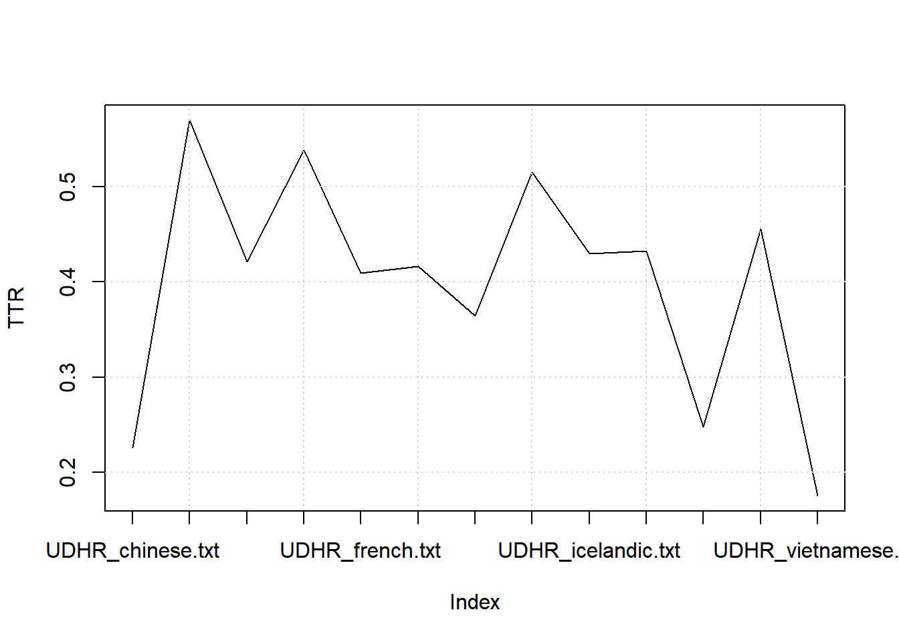
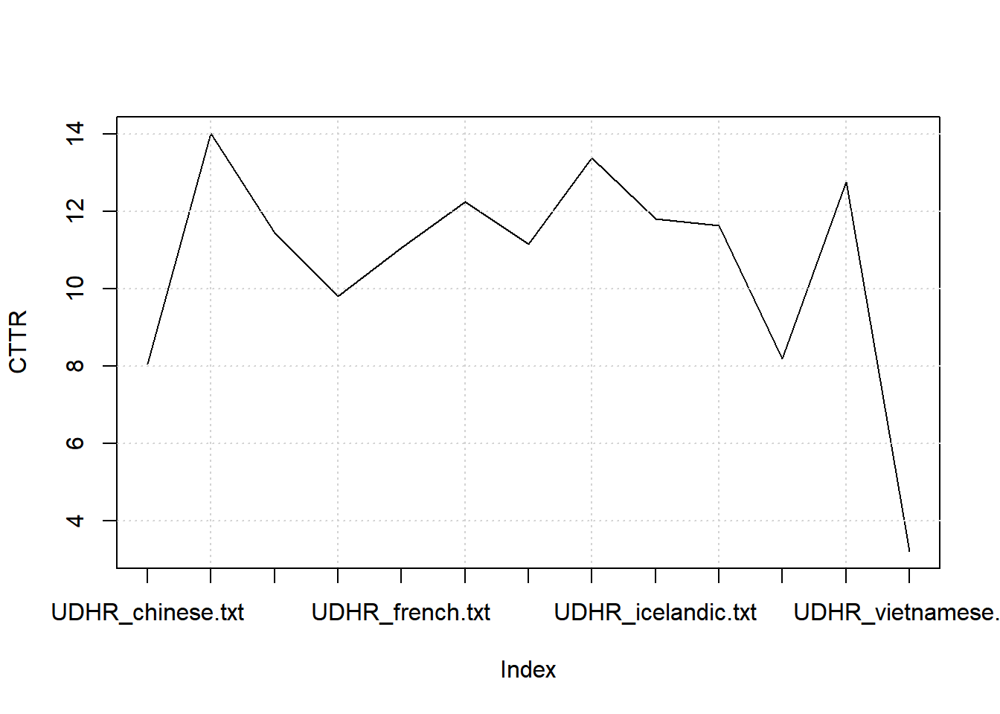
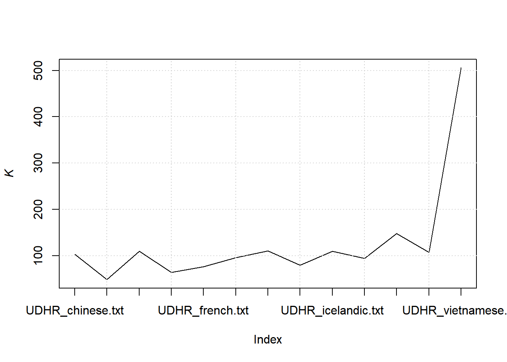
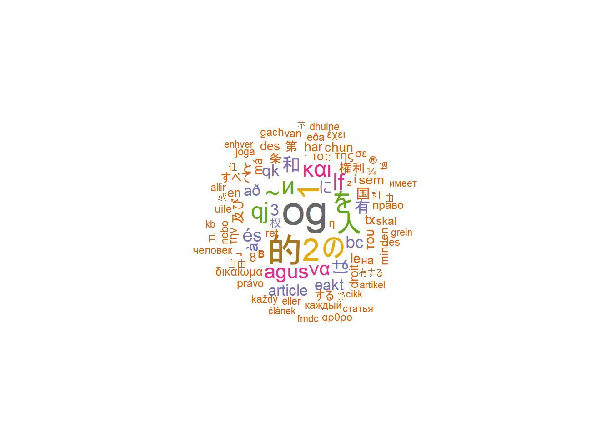
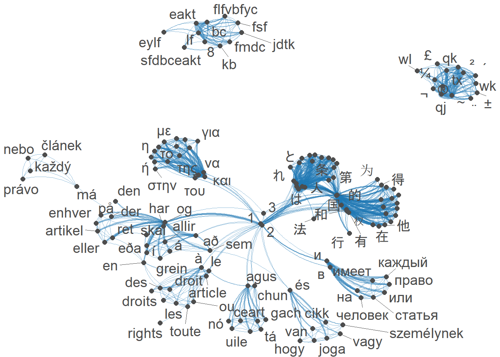

8.6 Universal Declaration of Human Rights
We import multiple files containing the Universal Declaration of Human Rights in 13 languages. There are 13 different textfiles
8.6.2 Create a corpus
## Corpus consisting of 13 documents and 2 docvars.
## UDHR_chinese.txt :
## "世界人权宣言 联合国大会一九四八年十二月十日第217A(III)号决议通过并颁布 1948 年 12 月 10 日， 联..."
##
## UDHR_czech.txt :
## "VŠEOBECNÁ DEKLARACE LIDSKÝCH PRÁV Úvod U vědomí toho, že uzn..."
##
## UDHR_danish.txt :
## "Den 10. december 1948 vedtog og offentliggjorde FNs tredie g..."
##
## UDHR_english.txt :
## "Universal Declaration of Human Rights Preamble Whereas recog..."
##
## UDHR_french.txt :
## "Déclaration universelle des droits de l'homme Préambule Cons..."
##
## UDHR_georgian.txt :
## "FLFVBFYBC EAKT<FSF CF>JDTKSFJ LTRKFHFWBF GHTFV<EKF dbyfblfy ..."
##
## [ reached max_ndoc ... 7 more documents ]8.6.2.1 Summary
## Corpus consisting of 13 documents, showing 13 documents:
##
## Text Types Tokens Sentences document language
## UDHR_chinese.txt 600 2849 94 UDHR chinese
## UDHR_czech.txt 755 1753 93 UDHR czech
## UDHR_danish.txt 697 2087 131 UDHR danish
## UDHR_english.txt 557 1970 93 UDHR english
## UDHR_french.txt 671 2188 90 UDHR french
## UDHR_georgian.txt 770 2765 27 UDHR georgian
## UDHR_greek.txt 735 2193 106 UDHR greek
## UDHR_hungarian.txt 750 1843 93 UDHR hungarian
## UDHR_icelandic.txt 709 1916 105 UDHR icelandic
## UDHR_irish.txt 704 2197 117 UDHR irish
## UDHR_japanese.txt 586 2553 97 UDHR japanese
## UDHR_russian.txt 763 1875 94 UDHR russian
## UDHR_vietnamese.txt 191 2597 9 UDHR vietnamese8.6.2.2 Accessing parts of corpus
## [1] "Universal Declaration of Human Rights\nPreamble Whereas recognition of the inherent dignity and of the equal and inalienable rights of all members of the human family is the foundation of freedom, justice and peace in the world, Whereas disregard and contempt for human rights have resulted in barbarous acts which have outraged the conscience of mankind, and the advent of a world in which human beings shall enjoy freedom of speech and belief and freedom from fear and want has been proclaimed as the highest aspiration of the common people, Whereas it is essential, if man is not to be compelled to have recourse, as a last resort, to rebellion against tyranny and oppression, that human rights should be protected by the rule of law, Whereas it is essential to promote the development of friendly relations between nations, Whereas the peoples of the United Nations have in the Charter reaffirmed their faith in fundamental human rights, in the dignity and worth of the human person and in the equal rights of men and women and have determined to promote social progress and better standards of life in larger freedom, Whereas Member States have pledged themselves to achieve, in cooperation with the United Nations, the promotion of universal respect for and observance of human rights and fundamental freedoms, Whereas a common understanding of these rights and freedoms is of the greatest importance for the full realization of this pledge, Now, therefore, The General Assembly, Proclaims this Universal Declaration of Human Rights as a common standard of achievement for all peoples and all nations, to the end that every individual and every organ of society, keeping this Declaration constantly in mind, shall strive by\n\n\fteaching and education to promote respect for these rights and freedoms and by progressive measures, national and international, to secure their universal and effective recognition and observance, both among the peoples of Member States themselves and among the peoples of territories under their jurisdiction. Article I All human beings are born free and equal in dignity and rights. They are endowed with reason and conscience and should act towards one another in a spirit of brotherhood. Article 2 Everyone is entitled to all the rights and freedoms set forth in this Declaration, without distinction of any kind, such as race, colour, sex, language, religion, political or other opinion, national or social origin, property, birth or other status. Furthermore, no distinction shall be made on the basis of the political, jurisdictional or international status of the country or territory to which a person belongs, whether it be independent, trust, non-self-governing or under any other limitation of sovereignty. Article 3 Everyone has the right to life, liberty and security of person. Article 4 No one shall be held in slavery or servitude; slavery and the slave trade shall be prohibited in all their forms. Article 5 No one shall be subjected to torture or to cruel, inhuman or degrading treatment or punishment.\n\n\fArticle 6 Everyone has the right to recognition everywhere as a person before the law. Article 7 All are equal before the law and are entitled without any discrimination to equal protection of the law. All are entitled to equal protection against any discrimination in violation of this Declaration and against any incitement to such discrimination. Article 8 Everyone has the right to an effective remedy by the competent national tribunals for acts violating the fundamental rights granted him by the constitution or by law. Article 9 No one shall be subjected to arbitrary arrest, detention or exile. Article 10 Everyone is entitled in full equality to a fair and public hearing by an independent and impartial tribunal, in the determination of his rights and obligations and of any criminal charge against him. Article 11 1. Everyone charged with a penal offence has the right to be presumed innocent until proved guilty according to law in a public trial at which he has had all the guarantees necessary for his defence. 2. No one shall be held guilty of any penal offence on account of any act or omission which did not constitute a penal offence, under national or international law, at the time when it was committed. Nor shall a heavier\n\n\fpenalty be imposed than the one that was applicable at the time the penal offence was committed. Article 12 No one shall be subjected to arbitrary interference with his privacy, family, home or correspondence, nor to attacks upon his honour and reputation. Everyone has the right to the protection of the law against such interference or attacks. Article 13 1. Everyone has the right to freedom of movement and residence within the borders of each State. 2. Everyone has the right to leave any country, including his own, and to return to his country. Article 14 1. Everyone has the right to seek and to enjoy in other countries asylum from persecution. 2. This right may not be invoked in the case of prosecutions genuinely arising from non-political crimes or from acts contrary to the purposes and principles of the United Nations. Article 15 1. Everyone has the right to a nationality. 2. No one shall be arbitrarily deprived of his nationality nor denied the right to change his nationality. Article 16\n\n\f1. Men and women of full age, without any limitation due to race, nationality or religion, have the right to marry and to found a family. They are entitled to equal rights as to marriage, during marriage and at its dissolution. 2. Marriage shall be entered into only with the free and full consent of the intending spouses. 3. The family is the natural and fundamental group unit of society and is entitled to protection by society and the State. Article 17 1. Everyone has the right to own property alone as well as in association with others. 2. No one shall be arbitrarily deprived of his property. Article 18 Everyone has the right to freedom of thought, conscience and religion; this right includes freedom to change his religion or belief, and freedom, either alone or in community with others and in public or private, to manifest his religion or belief in teaching, practice, worship and observance. Article 19 Everyone has the right to freedom of opinion and expression; this right includes freedom to hold opinions without interference and to seek, receive and impart information and ideas through any media and regardless of frontiers. Article 20 1. Everyone has the right to freedom of peaceful assembly and association. 2. No one may be compelled to belong to an association. Article 21\n\n\f1. Everyone has the right to take part in the government of his country, directly or through freely chosen representatives. 2. Everyone has the right to equal access to public service in his country. 3. The will of the people shall be the basis of the authority of government; this will shall be expressed in periodic and genuine elections which shall be by universal and equal suffrage and shall be held by secret vote or by equivalent free voting procedures. Article 22 Everyone, as a member of society, has the right to social security and is entitled to realization, through national effort and international co-operation and in accordance with the organization and resources of each State, of the economic, social and cultural rights indispensable for his dignity and the free development of his personality. Article 23 1. Everyone has the right to work, to free choice of employment, to just and favourable conditions of work and to protection against unemployment. 2. Everyone, without any discrimination, has the right to equal pay for equal work. 3. Everyone who works has the right to just and favourable remuneration ensuring for himself and his family an existence worthy of human dignity, and supplemented, if necessary, by other means of social protection. 4. Everyone has the right to form and to join trade unions for the protection of his interests. Article 24 Everyone has the right to rest and leisure, including reasonable limitation of working hours and periodic holidays with pay.\n\n\fArticle 25 1. Everyone has the right to a standard of living adequate for the health and well-being of himself and of his family, including food, clothing, housing and medical care and necessary social services, and the right to security in the event of unemployment, sickness, disability, widowhood, old age or other lack of livelihood in circumstances beyond his control. 2. Motherhood and childhood are entitled to special care and assistance. All children, whether born in or out of wedlock, shall enjoy the same social protection. Article 26 1. Everyone has the right to education. Education shall be free, at least in the elementary and fundamental stages. Elementary education shall be compulsory. Technical and professional education shall be made generally available and higher education shall be equally accessible to all on the basis of merit. 2. Education shall be directed to the full development of the human personality and to the strengthening of respect for human rights and fundamental freedoms. It shall promote understanding, tolerance and friendship among all nations, racial or religious groups, and shall further the activities of the United Nations for the maintenance of peace. 3. Parents have a prior right to choose the kind of education that shall be given to their children. Article 27 1. Everyone has the right freely to participate in the cultural life of the community, to enjoy the arts and to share in scientific advancement and its benefits.\n\n\f2. Everyone has the right to the protection of the moral and material interests resulting from any scientific, literary or artistic production of which he is the author. Article 28 Everyone is entitled to a social and international order in which the rights and freedoms set forth in this Declaration can be fully realized. Article 29 1. Everyone has duties to the community in which alone the free and full development of his personality is possible. 2. In the exercise of his rights and freedoms, everyone shall be subject only to such limitations as are determined by law solely for the purpose of securing due recognition and respect for the rights and freedoms of others and of meeting the just requirements of morality, public order and the general welfare in a democratic society. 3. These rights and freedoms may in no case be exercised contrary to the purposes and principles of the United Nations. Article 30 Nothing in this Declaration may be interpreted as implying for any State, group or person any right to engage in any activity or to perform any act aimed at the destruction of any of the rights and freedoms set forth herein.\n\n\f"8.6.3 Tokens
tokens() segments texts in a corpus into tokens (words or sentences) by word boundaries.
We can remove punctuations or not
8.6.3.1 With punctuations
## Tokens consisting of 13 documents and 2 docvars.
## UDHR_chinese.txt :
## [1] "世界" "人权" "宣言" "联合" "国" "大会" "一九" "四"
## [9] "八年" "十二月" "十日" "第"
## [ ... and 2,837 more ]
##
## UDHR_czech.txt :
## [1] "VŠEOBECNÁ" "DEKLARACE" "LIDSKÝCH" "PRÁV" "Úvod" "U"
## [7] "vědomí" "toho" "," "že" "uznání" "přirozené"
## [ ... and 1,741 more ]
##
## UDHR_danish.txt :
## [1] "Den" "10" "."
## [4] "december" "1948" "vedtog"
## [7] "og" "offentliggjorde" "FNs"
## [10] "tredie" "generalforsamling" "Verdenserklæringen"
## [ ... and 2,075 more ]
##
## UDHR_english.txt :
## [1] "Universal" "Declaration" "of" "Human" "Rights"
## [6] "Preamble" "Whereas" "recognition" "of" "the"
## [11] "inherent" "dignity"
## [ ... and 1,958 more ]
##
## UDHR_french.txt :
## [1] "Déclaration" "universelle" "des" "droits"
## [5] "de" "l'homme" "Préambule" "Considérant"
## [9] "que" "la" "reconnaissance" "de"
## [ ... and 2,176 more ]
##
## UDHR_georgian.txt :
## [1] "FLFVBFYBC" "EAKT" "<" "FSF" "CF"
## [6] ">" "JDTKSFJ" "LTRKFHFWBF" "GHTFV" "<"
## [11] "EKF" "dbyfblfy"
## [ ... and 2,753 more ]
##
## [ reached max_ndoc ... 7 more documents ]8.6.3.2 Without punctuations
dat_udhr_corpus_tok_no_punct <- tokens(dat_udhr_corpus, remove_punct = TRUE)
dat_udhr_corpus_tok_no_punct## Tokens consisting of 13 documents and 2 docvars.
## UDHR_chinese.txt :
## [1] "世界" "人权" "宣言" "联合" "国" "大会" "一九" "四"
## [9] "八年" "十二月" "十日" "第"
## [ ... and 2,603 more ]
##
## UDHR_czech.txt :
## [1] "VŠEOBECNÁ" "DEKLARACE" "LIDSKÝCH" "PRÁV" "Úvod"
## [6] "U" "vědomí" "toho" "že" "uznání"
## [11] "přirozené" "důstojnosti"
## [ ... and 1,519 more ]
##
## UDHR_danish.txt :
## [1] "Den" "10" "december"
## [4] "1948" "vedtog" "og"
## [7] "offentliggjorde" "FNs" "tredie"
## [10] "generalforsamling" "Verdenserklæringen" "om"
## [ ... and 1,814 more ]
##
## UDHR_english.txt :
## [1] "Universal" "Declaration" "of" "Human" "Rights"
## [6] "Preamble" "Whereas" "recognition" "of" "the"
## [11] "inherent" "dignity"
## [ ... and 1,766 more ]
##
## UDHR_french.txt :
## [1] "Déclaration" "universelle" "des" "droits"
## [5] "de" "l'homme" "Préambule" "Considérant"
## [9] "que" "la" "reconnaissance" "de"
## [ ... and 1,962 more ]
##
## UDHR_georgian.txt :
## [1] "FLFVBFYBC" "EAKT" "<" "FSF" "CF"
## [6] ">" "JDTKSFJ" "LTRKFHFWBF" "GHTFV" "<"
## [11] "EKF" "dbyfblfy"
## [ ... and 2,023 more ]
##
## [ reached max_ndoc ... 7 more documents ]8.6.4 Stop words
It is best to remove stop words (function/grammatical words) when we use statistical analyses of a corpus.
dat_udhr_corpus_tok_no_punct_no_Stop <- tokens_select(dat_udhr_corpus_tok_no_punct, pattern = stopwords("en", source = "stopwords-iso"), selection = "remove")
dat_udhr_corpus_tok_no_punct_no_Stop## Tokens consisting of 13 documents and 2 docvars.
## UDHR_chinese.txt :
## [1] "世界" "人权" "宣言" "联合" "国" "大会" "一九" "四"
## [9] "八年" "十二月" "十日" "第"
## [ ... and 2,602 more ]
##
## UDHR_czech.txt :
## [1] "VŠEOBECNÁ" "DEKLARACE" "LIDSKÝCH" "PRÁV" "Úvod"
## [6] "vědomí" "toho" "že" "uznání" "přirozené"
## [11] "důstojnosti" "rovných"
## [ ... and 1,258 more ]
##
## UDHR_danish.txt :
## [1] "Den" "december" "1948"
## [4] "vedtog" "og" "offentliggjorde"
## [7] "FNs" "tredie" "generalforsamling"
## [10] "Verdenserklæringen" "Menneskerettighederne" "Erklæringen"
## [ ... and 1,525 more ]
##
## UDHR_english.txt :
## [1] "Universal" "Declaration" "Human" "Rights" "Preamble"
## [6] "recognition" "inherent" "dignity" "equal" "inalienable"
## [11] "rights" "human"
## [ ... and 711 more ]
##
## UDHR_french.txt :
## [1] "Déclaration" "universelle" "des" "droits"
## [5] "l'homme" "Préambule" "Considérant" "reconnaissance"
## [9] "dignité" "inhérente" "à" "tous"
## [ ... and 1,508 more ]
##
## UDHR_georgian.txt :
## [1] "FLFVBFYBC" "EAKT" "<" "FSF" ">"
## [6] "JDTKSFJ" "LTRKFHFWBF" "GHTFV" "<" "EKF"
## [11] "dbyfblfy" "flfvbfysf"
## [ ... and 1,769 more ]
##
## [ reached max_ndoc ... 7 more documents ]8.6.5 Statistical analyses
We can start by providing statistics (whether descriptives or inferential) based on our corpora.
8.6.5.1 Simple frequency analysis
Here we look at obtaining a simple frequency analysis of usage.
8.6.5.1.1 DFM
We start by generating a DFM (document-feature matrix)
dat_udhr_corpus_tok_no_punct_no_Stop_dfm <- dfm(dat_udhr_corpus_tok_no_punct_no_Stop)
dat_udhr_corpus_tok_no_punct_no_Stop_dfm## Document-feature matrix of: 13 documents, 7,526 features (91.89% sparse) and 2 docvars.
## features
## docs 世界 人权 宣言 联合 国 大会 一九 四 八年 十二月
## UDHR_chinese.txt 1 2 1 4 41 1 1 1 1 1
## UDHR_czech.txt 0 0 0 0 0 0 0 0 0 0
## UDHR_danish.txt 0 0 0 0 0 0 0 0 0 0
## UDHR_english.txt 0 0 0 0 0 0 0 0 0 0
## UDHR_french.txt 0 0 0 0 0 0 0 0 0 0
## UDHR_georgian.txt 0 0 0 0 0 0 0 0 0 0
## [ reached max_ndoc ... 7 more documents, reached max_nfeat ... 7,516 more features ]8.6.5.1.2 Frequencies
dat_udhr_corpus_tok_no_punct_no_Stop_dfm_freq <- textstat_frequency(dat_udhr_corpus_tok_no_punct_no_Stop_dfm)
dat_udhr_corpus_tok_no_punct_no_Stop_dfm_freq## feature frequency rank docfreq group
## 1 og 217 1 2 all
## 2 的 186 2 2 all
## 3 2 154 3 12 all
## 4 1 151 4 11 all
## 5 の 141 5 1 all
## 6 人 128 6 2 all
## 7 を 125 7 1 all
## 8 и 116 8 1 all
## 9 ~ 115 9 1 all
## 10 qj 111 10 1 all
## 11 lf 106 11 1 all
## 12 και 105 12 1 all
## 13 agus 90 13 1 all
## 14 να 83 14 1 all
## 15 和 80 15 1 all
## 16 és 80 15 1 all
## 17 は 79 17 1 all
## 18 bc 70 18 1 all
## 19 有 67 19 2 all
## 20 3 66 20 12 all
## 21 に 66 20 1 all
## 22 qk 66 20 1 all
## 23 að 65 23 1 all
## 24 à 64 24 2 all
## 25 eakt 64 24 1 all
## 26 权 63 26 1 all
## 27 article 60 27 2 all
## 28 国 54 28 2 all
## 29 ² 54 28 1 all
## 30 le 52 30 2 all
## 31 του 52 30 1 all
## 32 в 51 32 1 all
## 33 tx 51 32 1 all
## 34 及び 50 34 1 all
## 35 sem 49 35 2 all
## 36 権利 49 35 1 all
## 37 της 47 37 1 all
## 38 chun 47 37 1 all
## 39 8 46 39 10 all
## 40 har 46 39 1 all
## 41 第 42 41 2 all
## 42 条 42 41 2 all
## 43 des 42 41 1 all
## 44 το 42 41 1 all
## 45 í 42 41 2 all
## 46 má 41 46 2 all
## 47 en 41 46 3 all
## 48 droit 41 46 1 all
## 49 と 41 46 1 all
## 50 την 40 50 1 all
## 51 すべて 40 50 1 all
## 52 на 40 50 1 all
## 53 δικαίωμα 39 53 1 all
## 54 する 39 53 1 all
## 55 minden 38 55 1 all
## 56 право 38 55 1 all
## 57 skal 37 57 2 all
## 58 有する 37 57 1 all
## 59 利 36 59 2 all
## 60 ¬ 36 59 1 all
## 61 eða 35 61 1 all
## 62 uile 35 61 1 all
## 63 ¼ 35 61 1 all
## 64 právo 34 64 1 all
## 65 ret 34 64 1 all
## 66 η 34 64 1 all
## 67 van 34 64 1 all
## 68 gach 34 64 1 all
## 69 自由 33 69 2 all
## 70 nebo 33 69 1 all
## 71 σε 33 69 1 all
## 72 έχει 33 69 1 all
## 73 な 33 69 1 all
## 74 由 32 74 1 all
## 75 eller 32 74 1 all
## 76 joga 32 74 1 all
## 77 человек 32 74 1 all
## 78 каждый 32 74 1 all
## 79 ® 32 74 1 all
## 80 受 31 80 2 all
## 81 任 31 80 1 all
## 82 každý 31 80 1 all
## 83 les 31 80 1 all
## 84 allir 31 80 1 all
## 85 dhuine 31 80 1 all
## 86 不 30 86 1 all
## 87 或 30 86 1 all
## 88 článek 30 86 1 all
## 89 artikel 30 86 1 all
## 90 enhver 30 86 1 all
## 91 fmdc 30 86 1 all
## 92 kb 30 86 1 all
## 93 αρθρο 30 86 1 all
## 94 cikk 30 86 1 all
## 95 grein 30 86 1 all
## 96 ´ 30 86 2 all
## 97 имеет 30 86 1 all
## 98 статья 30 86 1 all
## 99 自 29 99 1 all
## 100 airteagal 29 99 1 all
## 101 tá 29 99 1 all
## 102 jdtk 28 102 1 all
## 103 или 28 102 1 all
## 104 wk 28 102 1 all
## 105 在 27 105 1 all
## 106 何 27 105 1 all
## 107 fsf 27 105 1 all
## 108 των 27 105 1 all
## 109 ή 27 105 1 all
## 110 こと 27 105 1 all
## 111 又は 27 105 1 all
## 112 ou 26 112 1 all
## 113 toute 26 112 1 all
## 114 flfvbfyc 26 112 1 all
## 115 που 26 112 1 all
## 116 με 26 112 1 all
## 117 ceart 26 112 1 all
## 118 ない 26 112 1 all
## 119 会 25 119 2 all
## 120 på 25 119 1 all
## 121 ± 25 119 1 all
## 122 £ 25 119 1 all
## 123 ¨ 25 119 1 all
## 124 他 24 124 2 all
## 125 享 24 124 2 all
## 126 személynek 24 124 1 all
## 127 á 24 124 1 all
## 128 も 24 124 1 all
## 129 以 23 129 1 all
## 130 personne 23 129 1 all
## 131 rights 22 131 1 all
## 132 droits 22 131 1 all
## 133 για 22 131 1 all
## 134 hogy 22 131 1 all
## 135 vagy 22 131 1 all
## 136 nó 22 131 1 all
## 137 并 21 137 1 all
## 138 得 21 137 1 all
## 139 4 21 137 11 all
## 140 den 21 137 2 all
## 141 sfdbceakt 21 137 1 all
## 142 στην 21 137 1 all
## 143 れ 21 137 1 all
## 144 wl 21 137 1 all
## 145 为 20 145 1 all
## 146 行 20 145 2 all
## 147 法 20 145 2 all
## 148 der 20 145 1 all
## 149 eylf 20 145 1 all
## 150 dans 19 150 1 all
## 151 καθένας 19 150 1 all
## 152 rétt 19 150 1 all
## 153 duine 19 150 1 all
## 154 ní 19 150 1 all
## 155 し 19 150 1 all
## 156 его 19 150 1 all
## 157 wu 19 150 1 all
## 158 一 18 158 1 all
## 159 教 18 158 1 all
## 160 社 18 158 2 all
## 161 med 18 158 1 all
## 162 hafa 18 158 1 all
## 163 aon 18 158 1 all
## 164 で 18 158 1 all
## 165 が 18 158 1 all
## 166 受ける 18 158 1 all
## 167 nk 18 158 1 all
## 168 所 17 168 1 all
## 169 家 17 168 1 all
## 170 应 17 168 1 all
## 171 som 17 168 1 all
## 172 protection 17 168 2 all
## 173 fh 17 168 1 all
## 174 τα 17 168 1 all
## 175 τη 17 168 1 all
## 176 не 17 168 1 all
## 177 对 16 177 1 all
## 178 本 16 177 1 all
## 179 sin 16 177 2 all
## 180 nations 16 177 2 all
## 181 une 16 177 1 all
## 182 ekb 16 177 1 all
## 183 @8 16 177 1 all
## 184 τις 16 177 1 all
## 185 δεν 16 177 1 all
## 186 fyrir 16 177 1 all
## 187 さ 16 177 1 all
## 188 быть 16 177 1 all
## 189 | 16 177 1 all
## 190 保 15 190 2 all
## 191 být 15 190 1 all
## 192 alle 15 190 1 all
## 193 rettigheder 15 190 1 all
## 194 mind 15 190 2 all
## 195 par 15 190 1 all
## 196 vbcb 15 190 1 all
## 197 κάθε 15 190 1 all
## 198 valamint 15 190 1 all
## 199 skulu 15 190 1 all
## 200 ná 15 190 1 all
## 201 社会 15 190 1 all
## 202 なら 15 190 1 all
## 203 jl 15 190 1 all
## 204 0 15 190 1 all
## 205 各 14 205 2 all
## 206 其 14 205 1 all
## 207 生 14 205 1 all
## 208 tous 14 205 1 all
## 209 dtkf 14 205 1 all
## 210 fv 14 205 1 all
## 211 από 14 205 1 all
## 212 með 14 205 1 all
## 213 við 14 205 1 all
## 214 yl 14 205 1 all
## 215 平 13 215 1 all
## 216 种 13 215 1 all
## 217 ㈠ 13 215 1 all
## 218 ㈡ 13 215 1 all
## 219 jeho 13 215 1 all
## 220 religion 13 215 3 all
## 221 social 13 215 3 all
## 222 human 13 215 1 all
## 223 eiga 13 215 1 all
## 224 þar 13 215 1 all
## 225 saoirse 13 215 1 all
## 226 ある 13 215 1 all
## 227 かつ 13 215 1 all
## 228 この 13 215 1 all
## 229 прав 13 215 1 all
## 230 pw 13 215 1 all
## 231 ¯ 13 215 1 all
## 232 12 12 232 11 all
## 233 宣 12 232 1 all
## 234 言 12 232 1 all
## 235 等 12 232 2 all
## 236 denne 12 232 1 all
## 237 lige 12 232 1 all
## 238 bc7 12 232 1 all
## 239 fc 12 232 1 all
## 240 bcf 12 232 1 all
## 241 είναι 12 232 1 all
## 242 οι 12 232 1 all
## 243 τον 12 232 1 all
## 244 κανείς 12 232 1 all
## 245 emberi 12 232 1 all
## 246 egyenlő 12 232 1 all
## 247 eru 12 232 1 all
## 248 frelsi 12 232 1 all
## 249 て 12 232 1 all
## 250 自己 12 232 1 all
## 251 к 12 232 1 all
## 252 jld 12 232 1 all
## 253 kd 12 232 1 all
## 254 ¢ 12 232 1 all
## 255 合 11 255 1 all
## 256 这 11 255 1 all
## 257 而 11 255 1 all
## 258 护 11 255 1 all
## 259 作 11 255 2 all
## 260 第二 11 255 1 all
## 261 者 11 255 2 all
## 262 práv 11 255 1 all
## 263 aby 11 255 1 all
## 264 práva 11 255 1 all
## 265 5 11 255 10 all
## 266 7 11 255 10 all
## 267 9 11 255 10 all
## 268 13 11 255 10 all
## 269 14 11 255 10 all
## 270 15 11 255 10 all
## 271 det 11 255 1 all
## 272 international 11 255 3 all
## 273 equal 11 255 1 all
## 274 freedom 11 255 1 all
## 275 qui 11 255 1 all
## 276 est 11 255 1 all
## 277 pour 11 255 1 all
## 278 être 11 255 1 all
## 279 δικαιωμάτων 11 255 1 all
## 280 τους 11 255 1 all
## 281 þess 11 255 1 all
## 282 во 11 255 1 all
## 283 для 11 255 1 all
## 284 ~ 11 255 1 all
## 285 宣言 10 285 2 all
## 286 育 10 285 1 all
## 287 下 10 285 2 all
## 288 平等 10 285 2 all
## 289 于 10 285 1 all
## 290 个 10 285 1 all
## 291 进 10 285 1 all
## 292 že 10 285 1 all
## 293 nesmí 10 285 1 all
## 294 6 10 285 9 all
## 295 11 10 285 10 all
## 296 16 10 285 10 all
## 297 17 10 285 10 all
## 298 18 10 285 10 all
## 299 19 10 285 10 all
## 300 20 10 285 10 all
## 301 21 10 285 10 all
## 302 22 10 285 10 all
## 303 23 10 285 10 all
## 304 24 10 285 10 all
## 305 25 10 285 10 all
## 306 26 10 285 10 all
## 307 27 10 285 10 all
## 308 28 10 285 10 all
## 309 29 10 285 10 all
## 310 30 10 285 10 all
## 311 da 10 285 1 all
## 312 national 10 285 3 all
## 313 må 10 285 1 all
## 314 freedoms 10 285 1 all
## 315 l'homme 10 285 1 all
## 316 ont 10 285 1 all
## 317 libertés 10 285 1 all
## 318 du 10 285 1 all
## 319 fy 10 285 1 all
## 320 b.jc 10 285 1 all
## 321 δικαιώματα 10 285 1 all
## 322 πρέπει 10 285 1 all
## 323 jogok 10 285 1 all
## 324 arra 10 285 1 all
## 325 való 10 285 1 all
## 326 lehet 10 285 1 all
## 327 sameinuðu 10 285 1 all
## 328 þjóðanna 10 285 1 all
## 329 því 10 285 1 all
## 330 þeirra 10 285 1 all
## 331 ina 10 285 1 all
## 332 eile 10 285 1 all
## 333 bith 10 285 1 all
## 334 た 10 285 1 all
## 335 によって 10 285 1 all
## 336 保護 10 285 1 all
## 337 от 10 285 1 all
## 338 свободу 10 285 1 all
## 339 kl 10 285 1 all
## 340 qkºqj 10 285 1 all
## 341 å 10 285 1 all
## 342 意 9 342 1 all
## 343 要 9 342 1 all
## 344 同 9 342 2 all
## 345 性 9 342 2 all
## 346 律 9 342 1 all
## 347 ingen 9 342 1 all
## 348 mod 9 342 1 all
## 349 sociale 9 342 2 all
## 350 friheder 9 342 1 all
## 351 hans 9 342 2 all
## 352 law 9 342 1 all
## 353 entitled 9 342 1 all
## 354 liberté 9 342 1 all
## 355 ce 9 342 1 all
## 356 aux 9 342 1 all
## 357 tkb 9 342 1 all
## 358 fib 9 342 1 all
## 359 cfpjufljt 9 342 1 all
## 360 sfdbcb 9 342 1 all
## 361 kj 9 342 1 all
## 362 κατά 9 342 1 all
## 363 szabad 9 342 1 all
## 364 kell 9 342 1 all
## 365 réttindum 9 342 1 all
## 366 gan 9 342 1 all
## 367 aige 9 342 1 all
## 368 国際 9 342 1 all
## 369 において 9 342 1 all
## 370 その 9 342 1 all
## 371 れる 9 342 1 all
## 372 что 9 342 1 all
## 373 должно 9 342 1 all
## 374 может 9 342 1 all
## 375 kl 9 342 1 all
## 376 wl 9 342 1 all
## 377 fkr 9 342 1 all
## 378 wurqj 9 342 1 all
## 379 通 8 379 1 all
## 380 加 8 379 1 all
## 381 发 8 379 1 all
## 382 使 8 379 1 all
## 383 中 8 379 2 all
## 384 及 8 379 2 all
## 385 宗 8 379 1 all
## 386 刑 8 379 2 all
## 387 时 8 379 1 all
## 388 公 8 379 2 all
## 389 定 8 379 2 all
## 390 mají 8 379 1 all
## 391 nikdo 8 379 1 all
## 392 ochranu 8 379 1 all
## 393 své 8 379 1 all
## 394 ved 8 379 1 all
## 395 krav 8 379 1 all
## 396 nogen 8 379 1 all
## 397 beskyttelse 8 379 1 all
## 398 respect 8 379 2 all
## 399 education 8 379 1 all
## 400 public 8 379 2 all
## 401 soit 8 379 1 all
## 402 peut 8 379 1 all
## 403 pays 8 379 1 all
## 404 nul 8 379 1 all
## 405 hjujhw 8 379 1 all
## 406 ltc 8 379 1 all
## 407 #8 8 379 1 all
## 408 f8 8 379 1 all
## 409 itb'kt 8 379 1 all
## 410 ufyfskt 8 379 1 all
## 411 θα 8 379 1 all
## 412 άτομο 8 379 1 all
## 413 μπορεί 8 379 1 all
## 414 έχουν 8 379 1 all
## 415 þeim 8 379 1 all
## 416 sé 8 379 2 all
## 417 cearta 8 379 1 all
## 418 é 8 379 1 all
## 419 seo 8 379 1 all
## 420 déanfar 8 379 1 all
## 421 dlí 8 379 1 all
## 422 人権 8 379 1 all
## 423 また 8 379 1 all
## 424 教育 8 379 1 all
## 425 け 8 379 1 all
## 426 何人 8 379 1 all
## 427 いかなる 8 379 1 all
## 428 に対して 8 379 1 all
## 429 человека 8 379 1 all
## 430 никто 8 379 1 all
## 431 g·f 8 379 1 all
## 432 分 7 432 1 all
## 433 领 7 432 1 all
## 434 土 7 432 1 all
## 435 政 7 432 1 all
## 436 治 7 432 1 all
## 437 基 7 432 2 all
## 438 尊 7 432 1 all
## 439 活 7 432 1 all
## 440 完全 7 432 2 all
## 441 婚 7 432 1 all
## 442 proti 7 432 1 all
## 443 sociální 7 432 1 all
## 444 společnosti 7 432 1 all
## 445 vzdělání 7 432 1 all
## 446 frihed 7 432 1 all
## 447 ikke 7 432 1 all
## 448 være 7 432 1 all
## 449 declaration 7 432 1 all
## 450 discrimination 7 432 2 all
## 451 déclaration 7 432 1 all
## 452 considérant 7 432 1 all
## 453 contre 7 432 1 all
## 454 sont 7 432 1 all
## 455 son 7 432 1 all
## 456 flfvbfybc 7 432 1 all
## 457 dbyfblfy 7 432 1 all
## 458 jdht 7 432 1 all
## 459 tkbf 7 432 1 all
## 460 jltc 7 432 1 all
## 461 fhfdbc 7 432 1 all
## 462 επειδή 7 432 1 all
## 463 ως 7 432 1 all
## 464 στα 7 432 1 all
## 465 tekintettel 7 432 1 all
## 466 nem 7 432 1 all
## 467 nemzetek 7 432 1 all
## 468 senkit 7 432 1 all
## 469 virðingu 7 432 1 all
## 470 ber 7 432 1 all
## 471 njóta 7 432 1 all
## 472 chearta 7 432 1 all
## 473 saoirsí 7 432 1 all
## 474 mar 7 432 1 all
## 475 féin 7 432 1 all
## 476 atá 7 432 1 all
## 477 ので 7 432 1 all
## 478 に対する 7 432 1 all
## 479 並びに 7 432 1 all
## 480 принимая 7 432 1 all
## 481 внимание 7 432 1 all
## 482 при 7 432 1 all
## 483 свобод 7 432 1 all
## 484 образование 7 432 1 all
## 485 zq 7 432 1 all
## 486 qkyq 7 432 1 all
## 487 wkl 7 432 1 all
## 488 ½ 7 432 1 all
## 489 过 6 489 1 all
## 490 义 6 489 1 all
## 491 展 6 489 1 all
## 492 正 6 489 1 all
## 493 视 6 489 1 all
## 494 免 6 489 1 all
## 495 普 6 489 1 all
## 496 民 6 489 1 all
## 497 基本 6 489 2 all
## 498 重 6 489 1 all
## 499 此 6 489 1 all
## 500 现 6 489 1 all
## 501 实 6 489 1 all
## 502 非 6 489 2 all
## 503 制 6 489 1 all
## 504 罪 6 489 1 all
## 505 工 6 489 1 all
## 506 目的 6 489 2 all
## 507 pro 6 489 1 all
## 508 deklaraci 6 489 1 all
## 509 jsou 6 489 1 all
## 510 která 6 489 1 all
## 511 andre 6 489 1 all
## 512 uden 6 489 1 all
## 513 forhold 6 489 1 all
## 514 sprog 6 489 1 all
## 515 fremme 6 489 1 all
## 516 sig 6 489 1 all
## 517 gennem 6 489 1 all
## 518 undervisning 6 489 1 all
## 519 person 6 489 2 all
## 520 frit 6 489 1 all
## 521 family 6 489 1 all
## 522 conscience 6 489 2 all
## 523 fundamental 6 489 1 all
## 524 famille 6 489 1 all
## 525 aucune 6 489 1 all
## 526 sera 6 489 1 all
## 527 ses 6 489 1 all
## 528 doit 6 489 1 all
## 529 cf.jdtksfj 6 489 1 all
## 530 bctsb 6 489 1 all
## 531 flfvbfyb 6 489 1 all
## 532 jdtkb 6 489 1 all
## 533 hfbvt 6 489 1 all
## 534 df 6 489 1 all
## 535 hbdb 6 489 1 all
## 536 sfyf 6 489 1 all
## 537 ελευθεριών 6 489 1 all
## 538 μέσα 6 489 1 all
## 539 διάκριση 6 489 1 all
## 540 υπό 6 489 1 all
## 541 jog 6 489 1 all
## 542 alapvető 6 489 1 all
## 543 szociális 6 489 1 all
## 544 szabadságok 6 489 1 all
## 545 más 6 489 1 all
## 546 þau 6 489 1 all
## 547 öllum 6 489 1 all
## 548 verndar 6 489 1 all
## 549 ó 6 489 1 all
## 550 maidir 6 489 1 all
## 551 dá 6 489 1 all
## 552 として 6 489 1 all
## 553 ば 6 489 1 all
## 554 宗教 6 489 1 all
## 555 による 6 489 1 all
## 556 差別 6 489 1 all
## 557 労働 6 489 1 all
## 558 их 6 489 1 all
## 559 как 6 489 1 all
## 560 содействовать 6 489 1 all
## 561 свою 6 489 1 all
## 562 с 6 489 1 all
## 563 все 6 489 1 all
## 564 то 6 489 1 all
## 565 защиту 6 489 1 all
## 566 по 6 489 1 all
## 567 + 6 489 1 all
## 568 4x 6 489 1 all
## 569 wkhr 6 489 1 all
## 570 ox 6 489 1 all
## 571 fµqj 6 489 1 all
## 572 qjx 6 489 1 all
## 573 世界 5 573 2 all
## 574 1948 5 573 5 all
## 575 大 5 573 1 all
## 576 界 5 573 1 all
## 577 地 5 573 1 all
## 578 主 5 573 1 all
## 579 文 5 573 1 all
## 580 承 5 573 2 all
## 581 认 5 573 1 all
## 582 是 5 573 1 all
## 583 无 5 573 1 all
## 584 已 5 573 1 all
## 585 论 5 573 1 all
## 586 信 5 573 1 all
## 587 被 5 573 1 all
## 588 必 5 573 1 all
## 589 促 5 573 1 all
## 590 人民 5 573 2 all
## 591 格 5 573 1 all
## 592 成 5 573 1 all
## 593 业 5 573 1 all
## 594 遍 5 573 1 all
## 595 力 5 573 1 all
## 596 际 5 573 1 all
## 597 上 5 573 2 all
## 598 切 5 573 1 all
## 599 籍 5 573 1 all
## 600 产 5 573 1 all
## 601 属 5 573 1 all
## 602 情 5 573 1 all
## 603 方 5 573 1 all
## 604 当 5 573 2 all
## 605 开 5 573 1 all
## 606 务 5 573 1 all
## 607 包 5 573 1 all
## 608 括 5 573 1 all
## 609 能 5 573 1 all
## 610 ㈢ 5 573 1 all
## 611 选 5 573 1 all
## 612 障 5 573 2 all
## 613 byla 5 573 1 all
## 614 spojených 5 573 1 all
## 615 národů 5 573 1 all
## 616 svou 5 573 1 all
## 617 svobod 5 573 1 all
## 618 všechny 5 573 1 all
## 619 bez 5 573 1 all
## 620 svobodu 5 573 1 all
## 621 které 5 573 1 all
## 622 fns 5 573 1 all
## 623 menneskerettighederne 5 573 1 all
## 624 fulde 5 573 1 all
## 625 nationale 5 573 2 all
## 626 forenede 5 573 1 all
## 627 formål 5 573 1 all
## 628 erklæring 5 573 1 all
## 629 frie 5 573 1 all
## 630 race 5 573 3 all
## 631 universal 5 573 1 all
## 632 dignity 5 573 1 all
## 633 united 5 573 1 all
## 634 society 5 573 1 all
## 635 distinction 5 573 2 all
## 636 country 5 573 1 all
## 637 limitation 5 573 2 all
## 638 dignité 5 573 1 all
## 639 été 5 573 1 all
## 640 unies 5 573 1 all
## 641 vie 5 573 1 all
## 642 présente 5 573 1 all
## 643 toutes 5 573 1 all
## 644 société 5 573 1 all
## 645 l'enseignement 5 573 1 all
## 646 sans 5 573 1 all
## 647 sur 5 573 1 all
## 648 loi 5 573 1 all
## 649 mariage 5 573 1 all
## 650 travail 5 573 1 all
## 651 qbhct 5 573 1 all
## 652 flt 5 573 1 all
## 653 fewbkt 5 573 1 all
## 654 rfyjybc 5 573 1 all
## 655 ufthsbfyt 5 573 1 all
## 656 tht 5 573 1 all
## 657 cfthsfijhbcj 5 573 1 all
## 658 sfdbceafkb 5 573 1 all
## 659 cjwbfkehb 5 573 1 all
## 660 bmytc 5 573 1 all
## 661 lfwekb 5 573 1 all
## 662 sdbsyt 5 573 1 all
## 663 hjvkt 5 573 1 all
## 664 ανθρώπου 5 573 1 all
## 665 ο 5 573 1 all
## 666 ανάπτυξη 5 573 1 all
## 667 προς 5 573 1 all
## 668 διακήρυξη 5 573 1 all
## 669 στη 5 573 1 all
## 670 καμία 5 573 1 all
## 671 ελεύθερα 5 573 1 all
## 672 εκπαίδευση 5 573 1 all
## 673 el 5 573 2 all
## 674 egyesült 5 573 1 all
## 675 mellett 5 573 1 all
## 676 tekintetében 5 573 1 all
## 677 társadalom 5 573 1 all
## 678 jelen 5 573 1 all
## 679 nemzetközi 5 573 1 all
## 680 szabadon 5 573 1 all
## 681 nélkül 5 573 1 all
## 682 mindenkinek 5 573 1 all
## 683 valamely 5 573 1 all
## 684 öðrum 5 573 1 all
## 685 án 5 573 1 all
## 686 annarra 5 573 1 all
## 687 verið 5 573 1 all
## 688 lögum 5 573 1 all
## 689 svo 5 573 1 all
## 690 þjóða 5 573 1 all
## 691 sér 5 573 1 all
## 692 hvers 5 573 1 all
## 693 réttur 5 573 1 all
## 694 vera 5 573 1 all
## 695 dearbhú 5 573 1 all
## 696 bhrí 5 573 1 all
## 697 leis 5 573 1 all
## 698 faoi 5 573 1 all
## 699 náisiúnta 5 573 1 all
## 700 acu 5 573 1 all
## 701 daoine 5 573 1 all
## 702 lena 5 573 1 all
## 703 bheith 5 573 1 all
## 704 réir 5 573 1 all
## 705 尊厳 5 573 1 all
## 706 行為 5 573 1 all
## 707 ら 5 573 1 all
## 708 人間 5 573 1 all
## 709 よう 5 573 1 all
## 710 ため 5 573 1 all
## 711 促進 5 573 1 all
## 712 連合 5 573 1 all
## 713 生活 5 573 1 all
## 714 地域 5 573 1 all
## 715 もしくは 5 573 1 all
## 716 なく 5 573 1 all
## 717 享有 5 573 1 all
## 718 婚姻 5 573 1 all
## 719 でなければ 5 573 1 all
## 720 保障 5 573 1 all
## 721 права 5 573 1 all
## 722 объединенных 5 573 1 all
## 723 наций 5 573 1 all
## 724 общества 5 573 1 all
## 725 должен 5 573 1 all
## 726 ни 5 573 1 all
## 727 было 5 573 1 all
## 728 wr 5 573 1 all
## 729 lzq 5 573 1 all
## 730 © 5 573 1 all
## 731 txd 5 573 1 all
## 732 ¹ 5 573 1 all
## 733 dl 5 573 1 all
## 734 联合 4 734 1 all
## 735 联 4 734 1 all
## 736 布 4 734 1 all
## 737 世 4 734 1 all
## 738 求 4 734 1 all
## 739 学 4 734 1 all
## 740 鉴于 4 734 1 all
## 741 家庭 4 734 2 all
## 742 与 4 734 2 all
## 743 心 4 734 1 all
## 744 予 4 734 1 all
## 745 迫 4 734 1 all
## 746 间 4 734 1 all
## 747 女 4 734 1 all
## 748 期 4 734 1 all
## 749 经 4 734 1 all
## 750 身 4 734 1 all
## 751 别 4 734 1 all
## 752 解 4 734 1 all
## 753 之 4 734 1 all
## 754 限 4 734 1 all
## 755 况 4 734 1 all
## 756 奴 4 734 1 all
## 757 隶 4 734 1 all
## 758 歧 4 734 1 all
## 759 害 4 734 1 all
## 760 庭 4 734 1 all
## 761 事 4 734 1 all
## 762 需 4 734 1 all
## 763 依 4 734 1 all
## 764 适 4 734 1 all
## 765 集 4 734 1 all
## 766 表 4 734 1 all
## 767 参 4 734 1 all
## 768 序 4 734 1 all
## 769 lidských 4 734 1 all
## 770 důstojnosti 4 734 1 all
## 771 lidské 4 734 1 all
## 772 bylo 4 734 1 all
## 773 mezi 4 734 1 all
## 774 základní 4 734 1 all
## 775 jakéhokoli 4 734 1 all
## 776 země 4 734 1 all
## 777 státu 4 734 1 all
## 778 při 4 734 1 all
## 779 nárok 4 734 1 all
## 780 hensyn 4 734 1 all
## 781 værdighed 4 734 1 all
## 782 familie 4 734 1 all
## 783 loven 4 734 1 all
## 784 nationers 4 734 1 all
## 785 fundamentale 4 734 1 all
## 786 arbejde 4 734 1 all
## 787 forskelsbehandling 4 734 1 all
## 788 lands 4 734 2 all
## 789 helst 4 734 1 all
## 790 alene 4 734 1 all
## 791 recognition 4 734 1 all
## 792 enjoy 4 734 1 all
## 793 promote 4 734 1 all
## 794 development 4 734 1 all
## 795 peoples 4 734 1 all
## 796 penal 4 734 1 all
## 797 offence 4 734 1 all
## 798 nationality 4 734 1 all
## 799 association 4 734 2 all
## 800 conditions 4 734 2 all
## 801 reconnaissance 4 734 1 all
## 802 humaine 4 734 1 all
## 803 égaux 4 734 1 all
## 804 d'un 4 734 1 all
## 805 où 4 734 1 all
## 806 développement 4 734 1 all
## 807 l'éducation 4 734 1 all
## 808 chacun 4 734 1 all
## 809 tout 4 734 1 all
## 810 individu 4 734 1 all
## 811 personnalité 4 734 1 all
## 812 elle 4 734 1 all
## 813 cas 4 734 1 all
## 814 nationalité 4 734 1 all
## 815 libre 4 734 1 all
## 816 plein 4 734 1 all
## 817 ainsi 4 734 1 all
## 818 < 4 734 1 all
## 819 fqbfht 4 734 1 all
## 820 ufydbsfht 4 734 1 all
## 821 gbhjdyt 4 734 1 all
## 822 ekt 4 734 1 all
## 823 gbhj 4 734 1 all
## 824 bcts 4 734 1 all
## 825 hjvkbc 4 734 1 all
## 826 vtidtj 4 734 1 all
## 827 jhwbtkt 4 734 1 all
## 828 yfwbjyfkehb 4 734 1 all
## 829 jhufybpfwbbc 4 734 1 all
## 830 ib7 4 734 1 all
## 831 vbybzt 4 734 1 all
## 832 lfvjerblt 4 734 1 all
## 833 $ 4 734 1 all
## 834 bcf7 4 734 1 all
## 835 jdtkudfhb 4 734 1 all
## 836 itvs 4 734 1 all
## 837 vbcsdbc 4 734 1 all
## 838 f7 4 734 1 all
## 839 chekb 4 734 1 all
## 840 ufy 4 734 1 all
## 841 itcf'kt 4 734 1 all
## 842 fylf 4 734 1 all
## 843 hjvtkbw 4 734 1 all
## 844 htkbubbc 4 734 1 all
## 845 cfhut 4 734 1 all
## 846 όλα 4 734 1 all
## 847 ελευθερίας 4 734 1 all
## 848 ένα 4 734 1 all
## 849 ανάμεσα 4 734 1 all
## 850 ηνωμένων 4 734 1 all
## 851 εθνών 4 734 1 all
## 852 αξιοπρέπεια 4 734 1 all
## 853 κοινωνική 4 734 1 all
## 854 ελευθερίες 4 734 1 all
## 855 παρούσα 4 734 1 all
## 856 ολοι 4 734 1 all
## 857 όλες 4 734 1 all
## 858 χωρίς 4 734 1 all
## 859 οποία 4 734 1 all
## 860 ελευθερία 4 734 1 all
## 861 ίση 4 734 1 all
## 862 μια 4 734 1 all
## 863 οικογένεια 4 734 1 all
## 864 μόνο 4 734 1 all
## 865 συμμετέχει 4 734 1 all
## 866 mint 4 734 1 all
## 867 előtt 4 734 1 all
## 868 útján 4 734 1 all
## 869 szemben 4 734 1 all
## 870 bármely 4 734 1 all
## 871 törvény 4 734 1 all
## 872 védelméhez 4 734 1 all
## 873 önkényesen 4 734 1 all
## 874 amely 4 734 1 all
## 875 saját 4 734 1 all
## 876 teljes 4 734 1 all
## 877 akár 4 734 1 all
## 878 mannréttindi 4 734 1 all
## 879 efla 4 734 1 all
## 880 það 4 734 1 all
## 881 eigi 4 734 1 all
## 882 gegn 4 734 1 all
## 883 frjálsir 4 734 1 all
## 884 yfirlýsingu 4 734 1 all
## 885 engan 4 734 1 all
## 886 sínu 4 734 1 all
## 887 enginn 4 734 1 all
## 888 bága 4 734 1 all
## 889 sá 4 734 1 all
## 890 geðþótta 4 734 1 all
## 891 nauðsynleg 4 734 1 all
## 892 sinna 4 734 1 all
## 893 uile-choiteann 4 734 1 all
## 894 bhfuil 4 734 1 all
## 895 réim 4 734 1 all
## 896 aontaithe 4 734 1 all
## 897 urraim 4 734 1 all
## 898 náisiún 4 734 1 all
## 899 chomhdhaonnacht 4 734 1 all
## 900 eadarnáisiúnta 4 734 1 all
## 901 mbeidh 4 734 1 all
## 902 leith 4 734 1 all
## 903 pé 4 734 1 all
## 904 críoch 4 734 1 all
## 905 phoiblí 4 734 1 all
## 906 náisiúntacht 4 734 1 all
## 907 cheart 4 734 1 all
## 908 trí 4 734 1 all
## 909 基礎 4 734 1 all
## 910 受け 4 734 1 all
## 911 る 4 734 1 all
## 912 間 4 734 1 all
## 913 発展 4 734 1 all
## 914 尊重 4 734 1 all
## 915 政治 4 734 1 all
## 916 その他 4 734 1 all
## 917 い 4 734 1 all
## 918 権 4 734 1 all
## 919 制限 4 734 1 all
## 920 ず 4 734 1 all
## 921 ほしい 4 734 1 all
## 922 まま 4 734 1 all
## 923 公平 4 734 1 all
## 924 犯罪 4 734 1 all
## 925 自国 4 734 1 all
## 926 場合 4 734 1 all
## 927 国籍 4 734 1 all
## 928 является 4 734 1 all
## 929 котором 4 734 1 all
## 930 люди 4 734 1 all
## 931 убеждений 4 734 1 all
## 932 чтобы 4 734 1 all
## 933 личности 4 734 1 all
## 934 должны 4 734 1 all
## 935 государства 4 734 1 all
## 936 путем 4 734 1 all
## 937 организации 4 734 1 all
## 938 настоящей 4 734 1 all
## 939 без 4 734 1 all
## 940 бы 4 734 1 all
## 941 имеют 4 734 1 all
## 942 время 4 734 1 all
## 943 брак 4 734 1 all
## 944 своих 4 734 1 all
## 945 qjk 4 734 1 all
## 946 ¥ 4 734 1 all
## 947 p·f 4 734 1 all
## 948 员 3 948 1 all
## 949 传 3 948 1 all
## 950 级 3 948 1 all
## 951 机 3 948 1 all
## 952 构 3 948 1 all
## 953 全 3 948 1 all
## 954 权利 3 948 1 all
## 955 鉴 3 948 1 all
## 956 暴 3 948 1 all
## 957 些 3 948 1 all
## 958 类 3 948 1 all
## 959 良 3 948 1 all
## 960 仰 3 948 1 all
## 961 愿 3 948 1 all
## 962 反 3 948 2 all
## 963 严 3 948 1 all
## 964 男 3 948 1 all
## 965 改 3 948 1 all
## 966 普遍 3 948 2 all
## 967 因 3 948 1 all
## 968 努 3 948 1 all
## 969 每 3 948 1 all
## 970 到 3 948 1 all
## 971 理 3 948 1 all
## 972 载 3 948 1 all
## 973 族 3 948 1 all
## 974 出 3 948 1 all
## 975 财 3 948 1 all
## 976 独 3 948 1 all
## 977 立 3 948 1 all
## 978 形 3 948 2 all
## 979 均 3 948 1 all
## 980 前 3 948 1 all
## 981 违 3 948 1 all
## 982 动 3 948 1 all
## 983 十条 3 948 1 all
## 984 独立 3 948 2 all
## 985 确 3 948 1 all
## 986 判 3 948 1 all
## 987 控 3 948 1 all
## 988 证 3 948 1 all
## 989 住 3 948 1 all
## 990 干 3 948 1 all
## 991 涉 3 948 1 all
## 992 第十 3 948 1 all
## 993 内 3 948 2 all
## 994 旨 3 948 1 all
## 995 原 3 948 2 all
## 996 否 3 948 2 all
## 997 只 3 948 1 all
## 998 单 3 948 1 all
## 999 项 3 948 1 all
## 1000 息 3 948 2 all
## 1001 团 3 948 1 all
## 1002 择 3 948 1 all
## 1003 投 3 948 1 all
## 1004 票 3 948 1 all
## 1005 件 3 948 2 all
## 1006 失 3 948 1 all
## 1007 维 3 948 1 all
## 1008 休 3 948 2 all
## 1009 福 3 948 1 all
## 1010 服 3 948 2 all
## 1011 母 3 948 2 all
## 1012 童 3 948 2 all
## 1013 术 3 948 1 all
## 1014 充 3 948 1 all
## 1015 子 3 948 2 all
## 1016 秩 3 948 1 all
## 1017 rodiny 3 948 1 all
## 1018 svobody 3 948 1 all
## 1019 zákonem 3 948 1 all
## 1020 národy 3 948 1 all
## 1021 víru 3 948 1 all
## 1022 osobnosti 3 948 1 all
## 1023 uznávání 3 948 1 all
## 1024 zachovávání 3 948 1 all
## 1025 stejné 3 948 1 all
## 1026 tuto 3 948 1 all
## 1027 území 3 948 1 all
## 1028 všichni 3 948 1 all
## 1029 rozlišování 3 948 1 all
## 1030 zejména 3 948 1 all
## 1031 podle 3 948 1 all
## 1032 ať 3 948 1 all
## 1033 stejnou 3 948 1 all
## 1034 svévolně 3 948 1 all
## 1035 byl 3 948 1 all
## 1036 byly 3 948 1 all
## 1037 svobodně 3 948 1 all
## 1038 toto 3 948 1 all
## 1039 státní 3 948 1 all
## 1040 náboženství 3 948 1 all
## 1041 jakož 3 948 1 all
## 1042 jinými 3 948 1 all
## 1043 prostředky 3 948 1 all
## 1044 rozvoji 3 948 1 all
## 1045 práci 3 948 1 all
## 1046 této 3 948 1 all
## 1047 erklæringen 3 948 1 all
## 1048 blev 3 948 1 all
## 1049 lande 3 948 1 all
## 1050 officielle 3 948 1 all
## 1051 kan 3 948 1 all
## 1052 verden 3 948 1 all
## 1053 handlinger 3 948 1 all
## 1054 betydning 3 948 1 all
## 1055 deres 3 948 1 all
## 1056 tro 3 948 1 all
## 1057 menneskerettigheder 3 948 1 all
## 1058 nationer 3 948 1 all
## 1059 almindelig 3 948 1 all
## 1060 disse 3 948 1 all
## 1061 ethvert 3 948 1 all
## 1062 internationale 3 948 2 all
## 1063 grund 3 948 1 all
## 1064 anden 3 948 1 all
## 1065 heller 3 948 1 all
## 1066 hvilket 3 948 1 all
## 1067 blive 3 948 1 all
## 1068 strid 3 948 1 all
## 1069 sådan 3 948 1 all
## 1070 hvilken 3 948 1 all
## 1071 ham 3 948 2 all
## 1072 indblanding 3 948 1 all
## 1073 hver 3 948 2 all
## 1074 land 3 948 1 all
## 1075 herunder 3 948 1 all
## 1076 sit 3 948 1 all
## 1077 fra 3 948 1 all
## 1078 nationalitet 3 948 1 all
## 1079 religiøse 3 948 1 all
## 1080 ægteskab 3 948 1 all
## 1081 samfundets 3 948 1 all
## 1082 udvikling 3 948 1 all
## 1083 børn 3 948 1 all
## 1084 acts 3 948 1 all
## 1085 belief 3 948 1 all
## 1086 common 3 948 1 all
## 1087 life 3 948 1 all
## 1088 observance 3 948 1 all
## 1089 set 3 948 1 all
## 1090 opinion 3 948 2 all
## 1091 property 3 948 1 all
## 1092 basis 3 948 1 all
## 1093 security 3 948 1 all
## 1094 held 3 948 1 all
## 1095 subjected 3 948 1 all
## 1096 interference 3 948 1 all
## 1097 including 3 948 1 all
## 1098 marriage 3 948 1 all
## 1099 community 3 948 1 all
## 1100 vote 3 948 2 all
## 1101 personality 3 948 1 all
## 1102 membres 3 948 1 all
## 1103 leurs 3 948 1 all
## 1104 comme 3 948 1 all
## 1105 pas 3 948 1 all
## 1106 leur 3 948 1 all
## 1107 assurer 3 948 1 all
## 1108 ces 3 948 1 all
## 1109 commun 3 948 1 all
## 1110 tant 3 948 1 all
## 1111 sous 3 948 1 all
## 1112 autres 3 948 1 all
## 1113 notamment 3 948 1 all
## 1114 soumis 3 948 1 all
## 1115 devant 3 948 1 all
## 1116 lui 3 948 1 all
## 1117 arbitrairement 3 948 1 all
## 1118 acte 3 948 1 all
## 1119 délictueux 3 948 1 all
## 1120 librement 3 948 1 all
## 1121 privé 3 948 1 all
## 1122 volonté 3 948 1 all
## 1123 égal 3 948 1 all
## 1124 sfyfcojhb 3 948 1 all
## 1125 vidblj 3 948 1 all
## 1126 b7 3 948 1 all
## 1127 hjv 3 948 1 all
## 1128 hovtybc 3 948 1 all
## 1129 ufhtit7 3 948 1 all
## 1130 bvbc 3 948 1 all
## 1131 hfsf 3 948 1 all
## 1132 cfiefkt 3 948 1 all
## 1133 bhbsflb 3 948 1 all
## 1134 cjwbfkeh 3 948 1 all
## 1135 itchekt 3 948 1 all
## 1136 iteo.jc 3 948 1 all
## 1137 fctdt 3 948 1 all
## 1138 ek 3 948 1 all
## 1139 bs8 3 948 1 all
## 1140 fmds 3 948 1 all
## 1141 vbvfhs 3 948 1 all
## 1142 vj 3 948 1 all
## 1143 ufyc 3 948 1 all
## 1144 dfdt 3 948 1 all
## 1145 mjyt 3 948 1 all
## 1146 mdt.ybc 3 948 1 all
## 1147 cfae'dtkpt7 3 948 1 all
## 1148 ufvj.tyt 3 948 1 all
## 1149 ^ 3 948 1 all
## 1150 flfvbfyc7 3 948 1 all
## 1151 hfl 3 948 1 all
## 1152 ib 3 948 1 all
## 1153 hjwf 3 948 1 all
## 1154 vbc 3 948 1 all
## 1155 tkvobajc 3 948 1 all
## 1156 vjmfkfmtj 3 948 1 all
## 1157 mjhobyt 3 948 1 all
## 1158 jkjl 3 948 1 all
## 1159 sfy 3 948 1 all
## 1160 dt 3 948 1 all
## 1161 sfdbceakfl 3 948 1 all
## 1162 vjyfobktj 3 948 1 all
## 1163 ltrkfhfwbfib 3 948 1 all
## 1164 αναγνώριση 3 948 1 all
## 1165 ανθρώπινης 3 948 1 all
## 1166 στον 3 948 1 all
## 1167 κόσμο 3 948 1 all
## 1168 πράξεις 3 948 1 all
## 1169 σημασία 3 948 1 all
## 1170 έθνη 3 948 1 all
## 1171 προσωπικότητας 3 948 1 all
## 1172 συνθήκες 3 948 1 all
## 1173 αυτή 3 948 1 all
## 1174 στο 3 948 1 all
## 1175 στους 3 948 1 all
## 1176 άλλες 3 948 1 all
## 1177 οποιαδήποτε 3 948 1 all
## 1178 ακόμα 3 948 1 all
## 1179 εξαιτίας 3 948 1 all
## 1180 χώρας 3 948 1 all
## 1181 είτε 3 948 1 all
## 1182 περιορισμό 3 948 1 all
## 1183 ζωή 3 948 1 all
## 1184 επιτρέπεται 3 948 1 all
## 1185 ούτε 3 948 1 all
## 1186 αν 3 948 1 all
## 1187 προστασία 3 948 1 all
## 1188 αυθαίρετα 3 948 1 all
## 1189 πλήρη 3 948 1 all
## 1190 περίπτωση 3 948 1 all
## 1191 αδίκημα 3 948 1 all
## 1192 χρόνο 3 948 1 all
## 1193 σκοπούς 3 948 1 all
## 1194 ηλικία 3 948 1 all
## 1195 θρησκείας 3 948 1 all
## 1196 ελεύθερη 3 948 1 all
## 1197 προστασίας 3 948 1 all
## 1198 κοινωνία 3 948 1 all
## 1199 άλλους 3 948 1 all
## 1200 μαζί 3 948 1 all
## 1201 όπως 3 948 1 all
## 1202 családja 3 948 1 all
## 1203 olyan 3 948 1 all
## 1204 jogokat 3 948 1 all
## 1205 népei 3 948 1 all
## 1206 személyiség 3 948 1 all
## 1207 azt 3 948 1 all
## 1208 általános 3 948 1 all
## 1209 tényleges 3 948 1 all
## 1210 amelynek 3 948 1 all
## 1211 oktatás 3 948 1 all
## 1212 tiszteletbentartásának 3 948 1 all
## 1213 hazai 3 948 1 all
## 1214 pedig 3 948 1 all
## 1215 alatt 3 948 1 all
## 1216 mindenki 3 948 1 all
## 1217 nevezetesen 3 948 1 all
## 1218 kinyilvánított 3 948 1 all
## 1219 összes 3 948 1 all
## 1220 független 3 948 1 all
## 1221 szabadsághoz 3 948 1 all
## 1222 ilyen 3 948 1 all
## 1223 ez 3 948 1 all
## 1224 jogai 3 948 1 all
## 1225 büntetendő 3 948 1 all
## 1226 szükséges 3 948 1 all
## 1227 házasság 3 948 1 all
## 1228 jogot 3 948 1 all
## 1229 bármilyen 3 948 1 all
## 1230 részvételhez 3 948 1 all
## 1231 nevelésnek 3 948 1 all
## 1232 érdekében 3 948 1 all
## 1233 mannréttindayfirlýsing 3 948 1 all
## 1234 tillits 3 948 1 all
## 1235 kynþáttar 3 948 1 all
## 1236 trúar 3 948 1 all
## 1237 skoðana 3 948 1 all
## 1238 þjóðernis 3 948 1 all
## 1239 mannréttindum 3 948 1 all
## 1240 séu 3 948 1 all
## 1241 réttinda 3 948 1 all
## 1242 frelsis 3 948 1 all
## 1243 hefur 3 948 1 all
## 1244 samvisku 3 948 1 all
## 1245 ekki 3 948 1 all
## 1246 upp 3 948 1 all
## 1247 trú 3 948 1 all
## 1248 þessum 3 948 1 all
## 1249 markmið 3 948 1 all
## 1250 samfélagsins 3 948 1 all
## 1251 jafnir 3 948 1 all
## 1252 þessari 3 948 1 all
## 1253 gera 3 948 1 all
## 1254 vegna 3 948 1 all
## 1255 heldur 3 948 1 all
## 1256 hvort 3 948 1 all
## 1257 ríki 3 948 1 all
## 1258 konar 3 948 1 all
## 1259 vernd 3 948 1 all
## 1260 mismununar 3 948 1 all
## 1261 brýtur 3 948 1 all
## 1262 refsivert 3 948 1 all
## 1263 brot 3 948 1 all
## 1264 enda 3 948 1 all
## 1265 landi 3 948 1 all
## 1266 taka 3 948 1 all
## 1267 þátt 3 948 1 all
## 1268 félagslegu 3 948 1 all
## 1269 sömu 3 948 1 all
## 1270 gur 3 948 1 all
## 1271 gníomhartha 3 948 1 all
## 1272 thabhairt 3 948 1 all
## 1273 náisiúin 3 948 1 all
## 1274 gcearta 3 948 1 all
## 1275 bunúsacha 3 948 1 all
## 1276 pobal 3 948 1 all
## 1277 tríd 3 948 1 all
## 1278 ach 3 948 1 all
## 1279 chéile 3 948 1 all
## 1280 idirdhealú 3 948 1 all
## 1281 háirithe 3 948 1 all
## 1282 slándála 3 948 1 all
## 1283 cóir 3 948 1 all
## 1284 chur 3 948 1 all
## 1285 air 3 948 1 all
## 1286 dhóibh 3 948 1 all
## 1287 leithcheal 3 948 1 all
## 1288 dlítear 3 948 1 all
## 1289 gcoinne 3 948 1 all
## 1290 d'fháil 3 948 1 all
## 1291 gá 3 948 1 all
## 1292 stát 3 948 1 all
## 1293 thír 3 948 1 all
## 1294 linn 3 948 1 all
## 1295 d'athrú 3 948 1 all
## 1296 pósadh 3 948 1 all
## 1297 bunaidh 3 948 1 all
## 1298 ghlacadh 3 948 1 all
## 1299 gabháil 3 948 1 all
## 1300 cead 3 948 1 all
## 1301 páirt 3 948 1 all
## 1302 phobail 3 948 1 all
## 1303 oibre 3 948 1 all
## 1304 mhaireachtana 3 948 1 all
## 1305 bhéarfar 3 948 1 all
## 1306 beidh 3 948 1 all
## 1307 連 3 948 1 all
## 1308 でき 3 948 1 all
## 1309 平和 3 948 1 all
## 1310 良心 3 948 1 all
## 1311 じ 3 948 1 all
## 1312 っ 3 948 1 all
## 1313 手段 3 948 1 all
## 1314 男女 3 948 1 all
## 1315 について 3 948 1 all
## 1316 信念 3 948 1 all
## 1317 した 3 948 1 all
## 1318 加盟 3 948 1 all
## 1319 個人 3 948 1 all
## 1320 人種 3 948 1 all
## 1321 意見 3 948 1 all
## 1322 財産 3 948 1 all
## 1323 か 3 948 1 all
## 1324 掲げる 3 948 1 all
## 1325 できる 3 948 1 all
## 1326 他の 3 948 1 all
## 1327 奴隷 3 948 1 all
## 1328 法律 3 948 1 all
## 1329 義務 3 948 1 all
## 1330 必要 3 948 1 all
## 1331 により 3 948 1 all
## 1332 われ 3 948 1 all
## 1333 家族 3 948 1 all
## 1334 干渉 3 948 1 all
## 1335 もつ 3 948 1 all
## 1336 意思 3 948 1 all
## 1337 のみ 3 948 1 all
## 1338 集団 3 948 1 all
## 1339 こ 3 948 1 all
## 1340 含む 3 948 1 all
## 1341 選挙 3 948 1 all
## 1342 もの 3 948 1 all
## 1343 同等 3 948 1 all
## 1344 人格 3 948 1 all
## 1345 человеческой 3 948 1 all
## 1346 семьи 3 948 1 all
## 1347 мира 3 948 1 all
## 1348 которые 3 948 1 all
## 1349 закона 3 948 1 all
## 1350 обеспечения 3 948 1 all
## 1351 того 3 948 1 all
## 1352 этих 3 948 1 all
## 1353 настоящую 3 948 1 all
## 1354 декларацию 3 948 1 all
## 1355 образования 3 948 1 all
## 1356 так 3 948 1 all
## 1357 отношении 3 948 1 all
## 1358 всеми 3 948 1 all
## 1359 различия 3 948 1 all
## 1360 религии 3 948 1 all
## 1361 основе 3 948 1 all
## 1362 всех 3 948 1 all
## 1363 подвергаться 3 948 1 all
## 1364 законом 3 948 1 all
## 1365 равную 3 948 1 all
## 1366 дискриминации 3 948 1 all
## 1367 ему 3 948 1 all
## 1368 преступления 3 948 1 all
## 1369 за 3 948 1 all
## 1370 свободно 3 948 1 all
## 1371 каждого 3 948 1 all
## 1372 включая 3 948 1 all
## 1373 других 3 948 1 all
## 1374 пользоваться 3 948 1 all
## 1375 это 3 948 1 all
## 1376 только 3 948 1 all
## 1377 другими 3 948 1 all
## 1378 декларации 3 948 1 all
## 1379 nkl 3 948 1 all
## 1380 g·qj 3 948 1 all
## 1381 fxf 3 948 1 all
## 1382 wlzx 3 948 1 all
## 1383 wf 3 948 1 all
## 1384 skl 3 948 1 all
## 1385 wkx 3 948 1 all
## 1386 qkdx 3 948 1 all
## 1387 frq 3 948 1 all
## 1388 人权 2 1388 1 all
## 1389 iii 2 1388 2 all
## 1390 年 2 1388 1 all
## 1391 颁 2 1388 1 all
## 1392 且 2 1388 1 all
## 1393 位 2 1388 1 all
## 1394 示 2 1388 1 all
## 1395 如 2 1388 1 all
## 1396 所有 2 1388 2 all
## 1397 固有 2 1388 2 all
## 1398 础 2 1388 1 all
## 1399 侮 2 1388 1 all
## 1400 了 2 1388 1 all
## 1401 高 2 1388 1 all
## 1402 友 2 1388 1 all
## 1403 关 2 1388 1 all
## 1404 系 2 1388 1 all
## 1405 国家 2 1388 2 all
## 1406 念 2 1388 1 all
## 1407 步 2 1388 1 all
## 1408 水 2 1388 1 all
## 1409 誓 2 1388 1 all
## 1410 遵 2 1388 1 all
## 1411 共 2 1388 1 all
## 1412 准 2 1388 1 all
## 1413 施 2 1388 1 all
## 1414 管 2 1388 1 all
## 1415 效 2 1388 1 all
## 1416 们 2 1388 1 all
## 1417 赋 2 1388 1 all
## 1418 弟 2 1388 2 all
## 1419 精 2 1388 1 all
## 1420 神 2 1388 1 all
## 1421 相 2 1388 1 all
## 1422 待 2 1388 1 all
## 1423 资 2 1388 1 all
## 1424 色 2 1388 2 all
## 1425 见 2 1388 1 all
## 1426 区 2 1388 1 all
## 1427 第三 2 1388 1 all
## 1428 式 2 1388 1 all
## 1429 禁 2 1388 1 all
## 1430 五条 2 1388 1 all
## 1431 残 2 1388 1 all
## 1432 忍 2 1388 1 all
## 1433 道 2 1388 1 all
## 1434 罚 2 1388 1 all
## 1435 六条 2 1388 1 all
## 1436 遭 2 1388 1 all
## 1437 侵 2 1388 1 all
## 1438 放 2 1388 1 all
## 1439 审 2 1388 1 all
## 1440 十一条 2 1388 1 all
## 1441 获 2 1388 1 all
## 1442 犯 2 1388 1 all
## 1443 用 2 1388 1 all
## 1444 十二条 2 1388 1 all
## 1445 私 2 1388 2 all
## 1446 誉 2 1388 1 all
## 1447 名 2 1388 1 all
## 1448 攻 2 1388 1 all
## 1449 击 2 1388 1 all
## 1450 十四条 2 1388 1 all
## 1451 寻 2 1388 1 all
## 1452 真 2 1388 1 all
## 1453 背 2 1388 1 all
## 1454 则 2 1388 1 all
## 1455 剥 2 1388 1 all
## 1456 夺 2 1388 1 all
## 1457 变 2 1388 1 all
## 1458 面 2 1388 1 all
## 1459 结 2 1388 1 all
## 1460 才 2 1388 1 all
## 1461 十七条 2 1388 1 all
## 1462 十八条 2 1388 1 all
## 1463 思 2 1388 1 all
## 1464 想 2 1388 1 all
## 1465 体 2 1388 1 all
## 1466 十九条 2 1388 1 all
## 1467 张 2 1388 1 all
## 1468 持 2 1388 1 all
## 1469 接 2 1388 1 all
## 1470 志 2 1388 1 all
## 1471 举 2 1388 1 all
## 1472 据 2 1388 1 all
## 1473 化 2 1388 1 all
## 1474 照 2 1388 1 all
## 1475 组 2 1388 1 all
## 1476 织 2 1388 1 all
## 1477 职 2 1388 1 all
## 1478 酬 2 1388 1 all
## 1479 益 2 1388 1 all
## 1480 物 2 1388 1 all
## 1481 儿 2 1388 1 all
## 1482 都 2 1388 1 all
## 1483 初 2 1388 1 all
## 1484 质 2 1388 1 all
## 1485 目 2 1388 2 all
## 1486 科 2 1388 1 all
## 1487 toho 2 1388 1 all
## 1488 rovných 2 1388 1 all
## 1489 základem 2 1388 1 all
## 1490 míru 2 1388 1 all
## 1491 činům 2 1388 1 all
## 1492 svědomí 2 1388 1 all
## 1493 kterém 2 1388 1 all
## 1494 lidé 2 1388 1 all
## 1495 svobodě 2 1388 1 all
## 1496 projevu 2 1388 1 all
## 1497 cíl 2 1388 1 all
## 1498 lidu 2 1388 1 all
## 1499 nutné 2 1388 1 all
## 1500 lidská 2 1388 1 all
## 1501 človĕk 2 1388 1 all
## 1502 podporovat 2 1388 1 all
## 1503 životní 2 1388 1 all
## 1504 podmínky 2 1388 1 all
## 1505 státy 2 1388 1 all
## 1506 zajistit 2 1388 1 all
## 1507 organizací 2 1388 1 all
## 1508 všeobecné 2 1388 1 all
## 1509 základních 2 1388 1 all
## 1510 těchto 2 1388 1 all
## 1511 tím 2 1388 1 all
## 1512 účelem 2 1388 1 all
## 1513 vyučováním 2 1388 1 all
## 1514 právům 2 1388 1 all
## 1515 svobodám 2 1388 1 all
## 1516 jejich 2 1388 1 all
## 1517 jak 2 1388 1 all
## 1518 lidem 2 1388 1 all
## 1519 tak 2 1388 1 all
## 1520 pod 2 1388 1 all
## 1521 sobě 2 1388 1 all
## 1522 spolu 2 1388 1 all
## 1523 stanovené 2 1388 1 all
## 1524 politického 2 1388 1 all
## 1525 jiného 2 1388 1 all
## 1526 majetku 2 1388 1 all
## 1527 postavení 2 1388 1 all
## 1528 mezinárodního 2 1388 1 all
## 1529 jde 2 1388 1 all
## 1530 zemi 2 1388 1 all
## 1531 omezení 2 1388 1 all
## 1532 držen 2 1388 1 all
## 1533 otroctví 2 1388 1 all
## 1534 osobnost 2 1388 1 all
## 1535 před 2 1388 1 all
## 1536 jakékoli 2 1388 1 all
## 1537 diskriminaci 2 1388 1 all
## 1538 každému 2 1388 1 all
## 1539 veřejně 2 1388 1 all
## 1540 postupem 2 1388 1 all
## 1541 čin 2 1388 1 all
## 1542 dobe 2 1388 1 all
## 1543 kdy 2 1388 1 all
## 1544 života 2 1388 1 all
## 1545 ani 2 1388 1 all
## 1546 útokům 2 1388 1 all
## 1547 takovým 2 1388 1 all
## 1548 volně 2 1388 1 all
## 1549 volit 2 1388 1 all
## 1550 rozporu 2 1388 1 all
## 1551 cíli 2 1388 1 all
## 1552 zásadami 2 1388 1 all
## 1553 příslušnost 2 1388 1 all
## 1554 zbaven 2 1388 1 all
## 1555 změnit 2 1388 1 all
## 1556 jen 2 1388 1 all
## 1557 sám 2 1388 1 all
## 1558 zahrnuje 2 1388 1 all
## 1559 přesvědčení 2 1388 1 all
## 1560 budiž 2 1388 1 all
## 1561 jako 2 1388 1 all
## 1562 mezinárodní 2 1388 1 all
## 1563 nezbytná 2 1388 1 all
## 1564 nezaměstnanosti 2 1388 1 all
## 1565 ochrany 2 1388 1 all
## 1566 svých 2 1388 1 all
## 1567 zájmů 2 1388 1 all
## 1568 zdraví 2 1388 1 all
## 1569 blahobyt 2 1388 1 all
## 1570 péči 2 1388 1 all
## 1571 ostatních 2 1388 1 all
## 1572 děti 2 1388 1 all
## 1573 přístupné 2 1388 1 all
## 1574 všemi 2 1388 1 all
## 1575 plně 2 1388 1 all
## 1576 offentliggjorde 2 1388 1 all
## 1577 verdenserklæringen 2 1388 1 all
## 1578 landes 2 1388 1 all
## 1579 efter 2 1388 1 all
## 1580 medlemslande 2 1388 1 all
## 1581 erklæringens 2 1388 1 all
## 1582 tekst 2 1388 1 all
## 1583 politiske 2 1388 1 all
## 1584 nordiske 2 1388 1 all
## 1585 gratis 2 1388 1 all
## 1586 begrænset 2 1388 1 all
## 1587 anerkendelse 2 1388 1 all
## 1588 mennesket 2 1388 1 all
## 1589 menneskelige 2 1388 1 all
## 1590 grundlaget 2 1388 1 all
## 1591 samvittighed 2 1388 1 all
## 1592 mål 2 1388 1 all
## 1593 afgørende 2 1388 1 all
## 1594 tvinges 2 1388 1 all
## 1595 mellem 2 1388 1 all
## 1596 folk 2 1388 1 all
## 1597 mænd 2 1388 1 all
## 1598 kvinder 2 1388 1 all
## 1599 fremskridt 2 1388 1 all
## 1600 medlemsstaterne 2 1388 1 all
## 1601 samarbejde 2 1388 1 all
## 1602 respekt 2 1388 1 all
## 1603 overholdelse 2 1388 1 all
## 1604 fælles 2 1388 1 all
## 1605 forståelse 2 1388 1 all
## 1606 menneske 2 1388 1 all
## 1607 foranstaltninger 2 1388 1 all
## 1608 sikre 2 1388 1 all
## 1609 overalt 2 1388 1 all
## 1610 blandt 2 1388 1 all
## 1611 befolkningerne 2 1388 1 all
## 1612 styre 2 1388 1 all
## 1613 født 2 1388 1 all
## 1614 art 2 1388 1 all
## 1615 stilling 2 1388 1 all
## 1616 gøres 2 1388 1 all
## 1617 forskel 2 1388 1 all
## 1618 hvadenten 2 1388 1 all
## 1619 område 2 1388 1 all
## 1620 liv 2 1388 1 all
## 1621 slaveri 2 1388 1 all
## 1622 underkastes 2 1388 1 all
## 1623 behandling 2 1388 1 all
## 1624 straf 2 1388 1 all
## 1625 lovens 2 1388 1 all
## 1626 vedkommende 2 1388 1 all
## 1627 vilkårlig 2 1388 1 all
## 1628 offentlig 2 1388 1 all
## 1629 strafbart 2 1388 1 all
## 1630 henhold 2 1388 1 all
## 1631 skyldig 2 1388 1 all
## 1632 handling 2 1388 1 all
## 1633 var 2 1388 2 all
## 1634 begået 2 1388 1 all
## 1635 kunne 2 1388 1 all
## 1636 fastsat 2 1388 1 all
## 1637 private 2 1388 2 all
## 1638 angreb 2 1388 1 all
## 1639 vælge 2 1388 1 all
## 1640 stats 2 1388 1 all
## 1641 eget 2 1388 1 all
## 1642 søge 2 1388 1 all
## 1643 hidrører 2 1388 1 all
## 1644 principper 2 1388 1 all
## 1645 vilkårligt 2 1388 1 all
## 1646 berøves 2 1388 1 all
## 1647 skifte 2 1388 1 all
## 1648 begrænsninger 2 1388 1 all
## 1649 racemæssige 2 1388 1 all
## 1650 kun 2 1388 1 all
## 1651 ejendom 2 1388 1 all
## 1652 omfatter 2 1388 1 all
## 1653 enten 2 1388 1 all
## 1654 danne 2 1388 1 all
## 1655 medlem 2 1388 1 all
## 1656 deltage 2 1388 1 all
## 1657 adgang 2 1388 1 all
## 1658 offentlige 2 1388 1 all
## 1659 vilje 2 1388 1 all
## 1660 valg 2 1388 1 all
## 1661 udøves 2 1388 1 all
## 1662 samfundet 2 1388 1 all
## 1663 tryghed 2 1388 1 all
## 1664 kulturelle 2 1388 1 all
## 1665 personligheds 2 1388 1 all
## 1666 retfærdige 2 1388 1 all
## 1667 arbejdsløshed 2 1388 1 all
## 1668 løn 2 1388 1 all
## 1669 sine 2 1388 1 all
## 1670 interesser 2 1388 1 all
## 1671 goder 2 1388 1 all
## 1672 tilfælde 2 1388 1 all
## 1673 undervisningen 2 1388 1 all
## 1674 grundlæggende 2 1388 1 all
## 1675 tolerance 2 1388 2 all
## 1676 form 2 1388 2 all
## 1677 orden 2 1388 1 all
## 1678 intet 2 1388 1 all
## 1679 preamble 2 1388 2 all
## 1680 justice 2 1388 2 all
## 1681 peace 2 1388 1 all
## 1682 fear 2 1388 2 all
## 1683 aspiration 2 1388 2 all
## 1684 people 2 1388 1 all
## 1685 essential 2 1388 1 all
## 1686 compelled 2 1388 1 all
## 1687 relations 2 1388 2 all
## 1688 women 2 1388 1 all
## 1689 determined 2 1388 1 all
## 1690 understanding 2 1388 1 all
## 1691 realization 2 1388 1 all
## 1692 assembly 2 1388 1 all
## 1693 standard 2 1388 1 all
## 1694 organ 2 1388 2 all
## 1695 teaching 2 1388 1 all
## 1696 effective 2 1388 1 all
## 1697 born 2 1388 1 all
## 1698 political 2 1388 1 all
## 1699 status 2 1388 1 all
## 1700 independent 2 1388 1 all
## 1701 slavery 2 1388 1 all
## 1702 servitude 2 1388 2 all
## 1703 trade 2 1388 1 all
## 1704 torture 2 1388 2 all
## 1705 constitution 2 1388 2 all
## 1706 arbitrary 2 1388 1 all
## 1707 impartial 2 1388 2 all
## 1708 tribunal 2 1388 2 all
## 1709 obligations 2 1388 2 all
## 1710 guilty 2 1388 1 all
## 1711 time 2 1388 1 all
## 1712 committed 2 1388 1 all
## 1713 applicable 2 1388 2 all
## 1714 attacks 2 1388 1 all
## 1715 seek 2 1388 1 all
## 1716 contrary 2 1388 1 all
## 1717 purposes 2 1388 1 all
## 1718 principles 2 1388 1 all
## 1719 arbitrarily 2 1388 1 all
## 1720 deprived 2 1388 1 all
## 1721 change 2 1388 1 all
## 1722 age 2 1388 1 all
## 1723 dissolution 2 1388 2 all
## 1724 includes 2 1388 1 all
## 1725 opinions 2 1388 2 all
## 1726 government 2 1388 1 all
## 1727 freely 2 1388 1 all
## 1728 periodic 2 1388 1 all
## 1729 suffrage 2 1388 2 all
## 1730 secret 2 1388 2 all
## 1731 cultural 2 1388 1 all
## 1732 favourable 2 1388 1 all
## 1733 unemployment 2 1388 1 all
## 1734 pay 2 1388 1 all
## 1735 existence 2 1388 2 all
## 1736 care 2 1388 1 all
## 1737 services 2 1388 2 all
## 1738 assistance 2 1388 2 all
## 1739 children 2 1388 1 all
## 1740 elementary 2 1388 1 all
## 1741 parents 2 1388 2 all
## 1742 arts 2 1388 2 all
## 1743 scientific 2 1388 1 all
## 1744 production 2 1388 2 all
## 1745 limitations 2 1388 2 all
## 1746 destruction 2 1388 2 all
## 1747 universelle 2 1388 1 all
## 1748 fondement 2 1388 1 all
## 1749 paix 2 1388 1 all
## 1750 monde 2 1388 1 all
## 1751 actes 2 1388 1 all
## 1752 êtres 2 1388 1 all
## 1753 humains 2 1388 1 all
## 1754 libres 2 1388 1 all
## 1755 proclamé 2 1388 1 all
## 1756 haute 2 1388 1 all
## 1757 qu'il 2 1388 1 all
## 1758 essentiel 2 1388 1 all
## 1759 soient 2 1388 1 all
## 1760 recours 2 1388 1 all
## 1761 entre 2 1388 1 all
## 1762 peuples 2 1388 1 all
## 1763 fondamentaux 2 1388 1 all
## 1764 qu'ils 2 1388 1 all
## 1765 favoriser 2 1388 1 all
## 1766 progrès 2 1388 1 all
## 1767 etats 2 1388 1 all
## 1768 coopération 2 1388 1 all
## 1769 avec 2 1388 1 all
## 1770 l'organisation 2 1388 1 all
## 1771 universel 2 1388 1 all
## 1772 effectif 2 1388 1 all
## 1773 fondamentales 2 1388 1 all
## 1774 afin 2 1388 1 all
## 1775 cette 2 1388 1 all
## 1776 parmi 2 1388 1 all
## 1777 ils 2 1388 1 all
## 1778 doivent 2 1388 1 all
## 1779 uns 2 1388 2 all
## 1780 envers 2 1388 1 all
## 1781 d'opinion 2 1388 1 all
## 1782 politique 2 1388 1 all
## 1783 autre 2 1388 1 all
## 1784 fondée 2 1388 1 all
## 1785 juridique 2 1388 1 all
## 1786 territoire 2 1388 1 all
## 1787 indépendant 2 1388 1 all
## 1788 quelconque 2 1388 1 all
## 1789 tenu 2 1388 1 all
## 1790 égale 2 1388 1 all
## 1791 pleine 2 1388 1 all
## 1792 égalité 2 1388 1 all
## 1793 nécessaires 2 1388 1 all
## 1794 défense 2 1388 1 all
## 1795 moment 2 1388 1 all
## 1796 même 2 1388 1 all
## 1797 telles 2 1388 1 all
## 1798 choisir 2 1388 1 all
## 1799 etat 2 1388 1 all
## 1800 chercher 2 1388 1 all
## 1801 d'autres 2 1388 1 all
## 1802 buts 2 1388 1 all
## 1803 principes 2 1388 1 all
## 1804 changer 2 1388 1 all
## 1805 fonder 2 1388 1 all
## 1806 fondamental 2 1388 1 all
## 1807 seule 2 1388 1 all
## 1808 qu'en 2 1388 1 all
## 1809 propriété 2 1388 1 all
## 1810 implique 2 1388 1 all
## 1811 conviction 2 1388 1 all
## 1812 d'expression 2 1388 1 all
## 1813 prendre 2 1388 1 all
## 1814 publiques 2 1388 1 all
## 1815 lieu 2 1388 1 all
## 1816 assurant 2 1388 1 all
## 1817 sécurité 2 1388 1 all
## 1818 sociaux 2 1388 1 all
## 1819 chômage 2 1388 1 all
## 1820 moyens 2 1388 1 all
## 1821 syndicats 2 1388 1 all
## 1822 intérêts 2 1388 1 all
## 1823 bien-être 2 1388 1 all
## 1824 enfants 2 1388 1 all
## 1825 élémentaire 2 1388 1 all
## 1826 communauté 2 1388 1 all
## 1827 scientifique 2 1388 1 all
## 1828 plan 2 1388 1 all
## 1829 énoncés 2 1388 1 all
## 1830 flfvbfysf 2 1388 1 all
## 1831 ofhvjflutyc 2 1388 1 all
## 1832 cfvfhskbfyj 2 1388 1 all
## 1833 hjvtkibw 2 1388 1 all
## 1834 bcbyb 2 1388 1 all
## 1835 ty 2 1388 1 all
## 1836 ufvjw 2 1388 1 all
## 1837 b'ekt 2 1388 1 all
## 1838 fc7 2 1388 1 all
## 1839 tkbc 2 1388 1 all
## 1840 ijhbc 2 1388 1 all
## 1841 vtuj 2 1388 1 all
## 1842 vf 2 1388 1 all
## 1843 sfdbfysb 2 1388 1 all
## 1844 rfwt 2 1388 1 all
## 1845 mfkt 2 1388 1 all
## 1846 iteo.jy 2 1388 1 all
## 1847 tkvobajt 2 1388 1 all
## 1848 dfklt 2 1388 1 all
## 1849 sfyfvihjvkj 2 1388 1 all
## 1850 bhbsfl 2 1388 1 all
## 1851 ufut 2 1388 1 all
## 1852 vskbfyfl 2 1388 1 all
## 1853 bcfsdbc7 2 1388 1 all
## 1854 fw 2 1388 1 all
## 1855 hf 2 1388 1 all
## 1856 ib8 2 1388 1 all
## 1857 bsf 2 1388 1 all
## 1858 vfs 2 1388 1 all
## 1859 mjyltc 2 1388 1 all
## 1860 ufyehxtdkfl 2 1388 1 all
## 1861 hfcbc7 2 1388 1 all
## 1862 vlujvfhtj 2 1388 1 all
## 1863 bcf8 2 1388 1 all
## 1864 hjvtkcfw 2 1388 1 all
## 1865 sfdbc 2 1388 1 all
## 1866 tkite 2 1388 1 all
## 1867 bv.jat 2 1388 1 all
## 1868 vjyj 2 1388 1 all
## 1869 fib8 2 1388 1 all
## 1870 cfc 2 1388 1 all
## 1871 fmdc7 2 1388 1 all
## 1872 fctsb 2 1388 1 all
## 1873 lbcrhbvbyfwbbc 2 1388 1 all
## 1874 vbth 2 1388 1 all
## 1875 dtdfib7 2 1388 1 all
## 1876 b8 2 1388 1 all
## 1877 ehfl8 2 1388 1 all
## 1878 vjs 2 1388 1 all
## 1879 tkvf 2 1388 1 all
## 1880 lflutybkb 2 1388 1 all
## 1881 fhj 2 1388 1 all
## 1882 lfwdbc 2 1388 1 all
## 1883 vjmvtlt 2 1388 1 all
## 1884 xfltybc 2 1388 1 all
## 1885 lhjc 2 1388 1 all
## 1886 ehb 2 1388 1 all
## 1887 fib7 2 1388 1 all
## 1888 cfw 2 1388 1 all
## 1889 lfe 2 1388 1 all
## 1890 hrjkt 2 1388 1 all
## 1891 kfl 2 1388 1 all
## 1892 tobyffqvltut 2 1388 1 all
## 1893 vbpyt 2 1388 1 all
## 1894 ghbywbgt 2 1388 1 all
## 1895 c8 2 1388 1 all
## 1896 xfvjthsdfc 2 1388 1 all
## 1897 thsyfbhb 2 1388 1 all
## 1898 lfmjhobyt 2 1388 1 all
## 1899 bcfc8 2 1388 1 all
## 1900 fhbc 2 1388 1 all
## 1901 thsgbhjdyekfl7 2 1388 1 all
## 1902 bcf9 2 1388 1 all
## 1903 vjbwfdc 2 1388 1 all
## 1904 tkvobaj 2 1388 1 all
## 1905 bcfufy 2 1388 1 all
## 1906 kfl8 2 1388 1 all
## 1907 itdbltc 2 1388 1 all
## 1908 bs7 2 1388 1 all
## 1909 fc8 2 1388 1 all
## 1910 epheydtk.jabc 2 1388 1 all
## 1911 reknehek 2 1388 1 all
## 1912 bcfsdbc8 2 1388 1 all
## 1913 ihjvbc 2 1388 1 all
## 1914 cfvfhskbfyb 2 1388 1 all
## 1915 eveitdhj 2 1388 1 all
## 1916 fyfpqfeht 2 1388 1 all
## 1917 fhct 2 1388 1 all
## 1918 sdbsjy 2 1388 1 all
## 1919 bcfsdbc 2 1388 1 all
## 1920 ghjatcbekb 2 1388 1 all
## 1921 rfdibht 2 1388 1 all
## 1922 bynthtct 2 1388 1 all
## 1923 rtsbklqtj 2 1388 1 all
## 1924 itcfyfhxeyt 2 1388 1 all
## 1925 lfo.t 2 1388 1 all
## 1926 bsb 2 1388 1 all
## 1927 μέλη 2 1388 1 all
## 1928 αποτελεί 2 1388 1 all
## 1929 θεμέλιο 2 1388 1 all
## 1930 ειρήνης 2 1388 1 all
## 1931 ανθρώπινη 2 1388 1 all
## 1932 συνείδηση 2 1388 1 all
## 1933 ενός 2 1388 1 all
## 1934 όπου 2 1388 1 all
## 1935 άνθρωποι 2 1388 1 all
## 1936 ελεύθεροι 2 1388 1 all
## 1937 ουσιαστική 2 1388 1 all
## 1938 προστατεύονται 2 1388 1 all
## 1939 καθεστώς 2 1388 1 all
## 1940 δικαίου 2 1388 1 all
## 1941 ώστε 2 1388 1 all
## 1942 άνθρωπος 2 1388 1 all
## 1943 μην 2 1388 1 all
## 1944 λαοί 2 1388 1 all
## 1945 διακήρυξαν 2 1388 1 all
## 1946 θεμελιακά 2 1388 1 all
## 1947 ισότητα 2 1388 1 all
## 1948 πρόοδο 2 1388 1 all
## 1949 ζωής 2 1388 1 all
## 1950 πλαίσια 2 1388 1 all
## 1951 μιας 2 1388 1 all
## 1952 υποχρέωση 2 1388 1 all
## 1953 συνεργασία 2 1388 1 all
## 1954 θεμελιακών 2 1388 1 all
## 1955 όλο 2 1388 1 all
## 1956 πέρα 2 1388 1 all
## 1957 ότι 2 1388 1 all
## 1958 κοινωνίας 2 1388 1 all
## 1959 διδασκαλία 2 1388 1 all
## 1960 παιδεία 2 1388 1 all
## 1961 σεβασμός 2 1388 1 all
## 1962 εξασφαλιστεί 2 1388 1 all
## 1963 διεθνή 2 1388 1 all
## 1964 ίσοι 2 1388 1 all
## 1965 προκηρύσσει 2 1388 1 all
## 1966 απολύτως 2 1388 1 all
## 1967 ειδικότερα 2 1388 1 all
## 1968 πεποιθήσεις 2 1388 1 all
## 1969 εθνική 2 1388 1 all
## 1970 γίνεται 2 1388 1 all
## 1971 χώρα 2 1388 1 all
## 1972 βρίσκεται 2 1388 1 all
## 1973 ποινή 2 1388 1 all
## 1974 απέναντι 2 1388 1 all
## 1975 νόμο 2 1388 1 all
## 1976 δημόσια 2 1388 1 all
## 1977 απαραίτητες 2 1388 1 all
## 1978 εσωτερικό 2 1388 1 all
## 1979 επεμβάσεις 2 1388 1 all
## 1980 κατοικία 2 1388 1 all
## 1981 προσβολές 2 1388 1 all
## 1982 είδους 2 1388 1 all
## 1983 κράτους 2 1388 1 all
## 1984 αυτήν 2 1388 1 all
## 1985 άσυλο 2 1388 1 all
## 1986 παρέχεται 2 1388 1 all
## 1987 αυτό 2 1388 1 all
## 1988 ενέργειες 2 1388 1 all
## 1989 αρχές 2 1388 1 all
## 1990 στερηθεί 2 1388 1 all
## 1991 γάμου 2 1388 1 all
## 1992 παρά 2 1388 1 all
## 1993 κράτος 2 1388 1 all
## 1994 θρησκευτικές 2 1388 1 all
## 1995 άσκηση 2 1388 1 all
## 1996 έκφρασης 2 1388 1 all
## 1997 οποιοδήποτε 2 1388 1 all
## 1998 ίσους 2 1388 1 all
## 1999 όρους 2 1388 1 all
## 2000 υπηρεσίες 2 1388 1 all
## 2001 θέληση 2 1388 1 all
## 2002 εξασφαλίζει 2 1388 1 all
## 2003 κοινωνικής 2 1388 1 all
## 2004 ανάλογα 2 1388 1 all
## 2005 εξασφαλίσει 2 1388 1 all
## 2006 προσωπικότητάς 2 1388 1 all
## 2007 δίκαιες 2 1388 1 all
## 2008 αμοιβής 2 1388 1 all
## 2009 εργασίας 2 1388 1 all
## 2010 συνδικάτα 2 1388 1 all
## 2011 παιδιά 2 1388 1 all
## 2012 εξασφαλίζεται 2 1388 1 all
## 2013 όλους 2 1388 1 all
## 2014 επιστημονική 2 1388 1 all
## 2015 μπορούν 2 1388 1 all
## 2016 emberiség 2 1388 1 all
## 2017 egyes 2 1388 1 all
## 2018 jogainak 2 1388 1 all
## 2019 szabadság 2 1388 1 all
## 2020 béke 2 1388 1 all
## 2021 ember 2 1388 1 all
## 2022 amelyben 2 1388 1 all
## 2023 annak 2 1388 1 all
## 2024 elleni 2 1388 1 all
## 2025 közötti 2 1388 1 all
## 2026 méltósága 2 1388 1 all
## 2027 meg 2 1388 1 all
## 2028 tagállamok 2 1388 1 all
## 2029 szervezetével 2 1388 1 all
## 2030 közös 2 1388 1 all
## 2031 abból 2 1388 1 all
## 2032 személy 2 1388 1 all
## 2033 nyilatkozatot 2 1388 1 all
## 2034 nevelés 2 1388 1 all
## 2035 között 2 1388 1 all
## 2036 megkülönböztetésre 2 1388 1 all
## 2037 politikai 2 1388 1 all
## 2038 társadalmi 2 1388 1 all
## 2039 tekintet 2 1388 1 all
## 2040 nyilatkozatban 2 1388 1 all
## 2041 tenni 2 1388 1 all
## 2042 alapján 2 1388 1 all
## 2043 ország 2 1388 1 all
## 2044 biztonsághoz 2 1388 1 all
## 2045 ahhoz 2 1388 1 all
## 2046 megkülönböztetés 2 1388 1 all
## 2047 védelemhez 2 1388 1 all
## 2048 sértő 2 1388 1 all
## 2049 irányuló 2 1388 1 all
## 2050 részére 2 1388 1 all
## 2051 nyilvánosan 2 1388 1 all
## 2052 felől 2 1388 1 all
## 2053 elkövetése 2 1388 1 all
## 2054 pillanatában 2 1388 1 all
## 2055 volt 2 1388 1 all
## 2056 cselekmény 2 1388 1 all
## 2057 ugyancsak 2 1388 1 all
## 2058 üldözés 2 1388 1 all
## 2059 menedéket 2 1388 1 all
## 2060 céljaival 2 1388 1 all
## 2061 elveivel 2 1388 1 all
## 2062 tevékenység 2 1388 1 all
## 2063 megváltoztatásának 2 1388 1 all
## 2064 megfosztani 2 1388 1 all
## 2065 férfinak 2 1388 1 all
## 2066 nőnek 2 1388 1 all
## 2067 házasságot 2 1388 1 all
## 2068 kötni 2 1388 1 all
## 2069 vannak 2 1388 1 all
## 2070 állam 2 1388 1 all
## 2071 egyénileg 2 1388 1 all
## 2072 együttesen 2 1388 1 all
## 2073 vallás 2 1388 1 all
## 2074 szabadságához 2 1388 1 all
## 2075 magában 2 1388 1 all
## 2076 foglalja 2 1388 1 all
## 2077 szabadságát 2 1388 1 all
## 2078 kifejezésre 2 1388 1 all
## 2079 miatt 2 1388 1 all
## 2080 feltételek 2 1388 1 all
## 2081 szavazás 2 1388 1 all
## 2082 gazdasági 2 1388 1 all
## 2083 kulturális 2 1388 1 all
## 2084 munka 2 1388 1 all
## 2085 méltányos 2 1388 1 all
## 2086 kielégítő 2 1388 1 all
## 2087 munkanélküliség 2 1388 1 all
## 2088 számára 2 1388 1 all
## 2089 megfelelő 2 1388 1 all
## 2090 amelyet 2 1388 1 all
## 2091 ésszerű 2 1388 1 all
## 2092 fizetett 2 1388 1 all
## 2093 szóló 2 1388 1 all
## 2094 elemi 2 1388 1 all
## 2095 desember 2 1388 1 all
## 2096 sérhver 2 1388 1 all
## 2097 litarháttar 2 1388 1 all
## 2098 kynferðis 2 1388 1 all
## 2099 tungu 2 1388 1 all
## 2100 uppruna 2 1388 1 all
## 2101 eigna 2 1388 1 all
## 2102 ætternis 2 1388 1 all
## 2103 aðstæðna 2 1388 1 all
## 2104 friðar 2 1388 1 all
## 2105 yfir 2 1388 1 all
## 2106 mannsins 2 1388 1 all
## 2107 heimi 2 1388 1 all
## 2108 fái 2 1388 1 all
## 2109 notið 2 1388 1 all
## 2110 brýnt 2 1388 1 all
## 2111 vernda 2 1388 1 all
## 2112 verði 2 1388 1 all
## 2113 samtökin 2 1388 1 all
## 2114 stuðla 2 1388 1 all
## 2115 framförum 2 1388 1 all
## 2116 lífskjörum 2 1388 1 all
## 2117 grundvallarfrelsi 2 1388 1 all
## 2118 þessa 2 1388 1 all
## 2119 allra 2 1388 1 all
## 2120 hafi 2 1388 1 all
## 2121 menntun 2 1388 1 all
## 2122 tryggja 2 1388 1 all
## 2123 meðal 2 1388 1 all
## 2124 sjálfra 2 1388 1 all
## 2125 bornir 2 1388 1 all
## 2126 hverjum 2 1388 1 all
## 2127 annan 2 1388 1 all
## 2128 greinarmun 2 1388 1 all
## 2129 takmörkunum 2 1388 1 all
## 2130 meðferð 2 1388 1 all
## 2131 viðurkenningu 2 1388 1 all
## 2132 nokkurrar 2 1388 1 all
## 2133 jafn 2 1388 1 all
## 2134 gagnvart 2 1388 1 all
## 2135 tryggð 2 1388 1 all
## 2136 úrræði 2 1388 1 all
## 2137 dómstólum 2 1388 1 all
## 2138 sviptur 2 1388 1 all
## 2139 óháðum 2 1388 1 all
## 2140 þegar 2 1388 1 all
## 2141 úr 2 1388 1 all
## 2142 réttindi 2 1388 1 all
## 2143 skyldur 2 1388 1 all
## 2144 þeir 2 1388 1 all
## 2145 þann 2 1388 1 all
## 2146 telja 2 1388 1 all
## 2147 öll 2 1388 1 all
## 2148 þá 2 1388 1 all
## 2149 innan 2 1388 1 all
## 2150 landamæra 2 1388 1 all
## 2151 ríkis 2 1388 1 all
## 2152 síns 2 1388 1 all
## 2153 leita 2 1388 1 all
## 2154 grundvallarreglur 2 1388 1 all
## 2155 skipta 2 1388 1 all
## 2156 ganga 2 1388 1 all
## 2157 stofna 2 1388 1 all
## 2158 fjölskyldu 2 1388 1 all
## 2159 hjúskapar 2 1388 1 all
## 2160 frjálsu 2 1388 1 all
## 2161 fullu 2 1388 1 all
## 2162 heimilt 2 1388 1 all
## 2163 einum 2 1388 1 all
## 2164 félagi 2 1388 1 all
## 2165 felur 2 1388 1 all
## 2166 sannfæringu 2 1388 1 all
## 2167 fremur 2 1388 1 all
## 2168 ljós 2 1388 1 all
## 2169 hætti 2 1388 1 all
## 2170 skylda 2 1388 1 all
## 2171 launum 2 1388 1 all
## 2172 félagsleg 2 1388 1 all
## 2173 telst 2 1388 1 all
## 2174 börn 2 1388 1 all
## 2175 menntunar 2 1388 1 all
## 2176 hún 2 1388 1 all
## 2177 frjálsan 2 1388 1 all
## 2178 leiðir 2 1388 1 all
## 2179 talin 2 1388 1 all
## 2180 gurb 2 1388 1 all
## 2181 aithint 2 1388 1 all
## 2182 dúchais 2 1388 1 all
## 2183 comhionanna 2 1388 1 all
## 2184 chine 2 1388 1 all
## 2185 daonna 2 1388 1 all
## 2186 foras 2 1388 1 all
## 2187 saol 2 1388 1 all
## 2188 bhéarfas 2 1388 1 all
## 2189 ndínit 2 1388 1 all
## 2190 ascnamh 2 1388 1 all
## 2191 níos 2 1388 1 all
## 2192 stát-chomhaltaí 2 1388 1 all
## 2193 chuing 2 1388 1 all
## 2194 gcomhar 2 1388 1 all
## 2195 d'áirithiú 2 1388 1 all
## 2196 tionól 2 1388 1 all
## 2197 tabhairt 2 1388 1 all
## 2198 iad 2 1388 1 all
## 2199 teagasc 2 1388 1 all
## 2200 t-oideachas 2 1388 1 all
## 2201 bearta 2 1388 1 all
## 2202 measc 2 1388 1 all
## 2203 fós 2 1388 1 all
## 2204 saor 2 1388 1 all
## 2205 comhionann 2 1388 1 all
## 2206 gceart 2 1388 1 all
## 2207 leagtha 2 1388 1 all
## 2208 amach 2 1388 1 all
## 2209 cine 2 1388 1 all
## 2210 creideamh 2 1388 1 all
## 2211 maoin 2 1388 1 all
## 2212 tír 2 1388 1 all
## 2213 neamhspleách 2 1388 1 all
## 2214 mhoghsaine 2 1388 1 all
## 2215 dligh 2 1388 1 all
## 2216 coimirce 2 1388 1 all
## 2217 gcomhionannas 2 1388 1 all
## 2218 chách 2 1388 1 all
## 2219 dhéanamh 2 1388 1 all
## 2220 bheir 2 1388 1 all
## 2221 dhó 2 1388 1 all
## 2222 dlíonn 2 1388 1 all
## 2223 iomlán 2 1388 1 all
## 2224 aghaidh 2 1388 1 all
## 2225 fáil 2 1388 1 all
## 2226 chosaint 2 1388 1 all
## 2227 ghníomh 2 1388 1 all
## 2228 nach 2 1388 1 all
## 2229 cion 2 1388 1 all
## 2230 ann 2 1388 1 all
## 2231 tráth 2 1388 1 all
## 2232 faoin 2 1388 1 all
## 2233 forlámhach 2 1388 1 all
## 2234 príobháideach 2 1388 1 all
## 2235 ionad 2 1388 1 all
## 2236 cónaithe 2 1388 1 all
## 2237 lorg 2 1388 1 all
## 2238 bhaint 2 1388 1 all
## 2239 gcás 2 1388 1 all
## 2240 leanas 2 1388 1 all
## 2241 contrártha 2 1388 1 all
## 2242 bhuntreora 2 1388 1 all
## 2243 d'aon 2 1388 1 all
## 2244 teaghlach 2 1388 1 all
## 2245 bhunú 2 1388 1 all
## 2246 phósta 2 1388 1 all
## 2247 chaomhnadh 2 1388 1 all
## 2248 féidir 2 1388 1 all
## 2249 chreideamh 2 1388 1 all
## 2250 dheimhne 2 1388 1 all
## 2251 tuairime 2 1388 1 all
## 2252 gcúrsaí 2 1388 1 all
## 2253 rialuithe 2 1388 1 all
## 2254 toil 2 1388 1 all
## 2255 thoradh 2 1388 1 all
## 2256 dó 2 1388 1 all
## 2257 thoghadh 2 1388 1 all
## 2258 dífhostaíochta 2 1388 1 all
## 2259 céanna 2 1388 1 all
## 2260 shóisialach 2 1388 1 all
## 2261 ceardchumainn 2 1388 1 all
## 2262 leasa 2 1388 1 all
## 2263 leanbh 2 1388 1 all
## 2264 oideachais 2 1388 1 all
## 2265 arb 2 1388 1 all
## 2266 hiomlán 2 1388 1 all
## 2267 ３ 2 1388 1 all
## 2268 総会 2 1388 1 all
## 2269 人類 2 1388 1 all
## 2270 構成 2 1388 1 all
## 2271 認 2 1388 1 all
## 2272 び 2 1388 1 all
## 2273 一般 2 1388 1 all
## 2274 す 2 1388 1 all
## 2275 肝要 2 1388 1 all
## 2276 友好 2 1388 1 all
## 2277 関係 2 1388 1 all
## 2278 国民 2 1388 1 all
## 2279 進歩 2 1388 1 all
## 2280 水準 2 1388 1 all
## 2281 協力 2 1388 1 all
## 2282 達成 2 1388 1 all
## 2283 誓約 2 1388 1 all
## 2284 これらの 2 1388 1 all
## 2285 共通 2 1388 1 all
## 2286 理解 2 1388 1 all
## 2287 き 2 1388 1 all
## 2288 管轄 2 1388 1 all
## 2289 確保 2 1388 1 all
## 2290 努力 2 1388 1 all
## 2291 あり 2 1388 1 all
## 2292 精神 2 1388 1 all
## 2293 しな 2 1388 1 all
## 2294 地位 2 1388 1 all
## 2295 これ 2 1388 1 all
## 2296 なる 2 1388 1 all
## 2297 属する 2 1388 1 all
## 2298 統治 2 1388 1 all
## 2299 問 2 1388 1 all
## 2300 わ 2 1388 1 all
## 2301 え 2 1388 1 all
## 2302 に対し 2 1388 1 all
## 2303 国内 2 1388 1 all
## 2304 裁判所 2 1388 1 all
## 2305 公開 2 1388 1 all
## 2306 訴追 2 1388 1 all
## 2307 有罪 2 1388 1 all
## 2308 刑罰 2 1388 1 all
## 2309 攻撃 2 1388 1 all
## 2310 各国 2 1388 1 all
## 2311 いずれ 2 1388 1 all
## 2312 り 2 1388 1 all
## 2313 から 2 1388 1 all
## 2314 他国 2 1388 1 all
## 2315 求め 2 1388 1 all
## 2316 もっぱら 2 1388 1 all
## 2317 奪 2 1388 1 all
## 2318 変更 2 1388 1 all
## 2319 成年 2 1388 1 all
## 2320 単独 2 1388 1 all
## 2321 共同 2 1388 1 all
## 2322 思想 2 1388 1 all
## 2323 表明 2 1388 1 all
## 2324 結社 2 1388 1 all
## 2325 ひと 2 1388 1 all
## 2326 しく 2 1388 1 all
## 2327 定期 2 1388 1 all
## 2328 投票 2 1388 1 all
## 2329 組織 2 1388 1 all
## 2330 応 2 1388 1 all
## 2331 文化 2 1388 1 all
## 2332 実現 2 1388 1 all
## 2333 職業 2 1388 1 all
## 2334 選択 2 1388 1 all
## 2335 有利 2 1388 1 all
## 2336 失業 2 1388 1 all
## 2337 報酬 2 1388 1 all
## 2338 利益 2 1388 1 all
## 2339 福祉 2 1388 1 all
## 2340 活動 2 1388 1 all
## 2341 科学 2 1388 1 all
## 2342 秩序 2 1388 1 all
## 2343 つて 2 1388 1 all
## 2344 行使 2 1388 1 all
## 2345 正当 2 1388 1 all
## 2346 признание 2 1388 1 all
## 2347 достоинства 2 1388 1 all
## 2348 основой 2 1388 1 all
## 2349 свободы 2 1388 1 all
## 2350 справедливости 2 1388 1 all
## 2351 всеобщего 2 1388 1 all
## 2352 правам 2 1388 1 all
## 2353 такого 2 1388 1 all
## 2354 будут 2 1388 1 all
## 2355 необходимо 2 1388 1 all
## 2356 качестве 2 1388 1 all
## 2357 развитию 2 1388 1 all
## 2358 между 2 1388 1 all
## 2359 народами 2 1388 1 all
## 2360 народы 2 1388 1 all
## 2361 достоинство 2 1388 1 all
## 2362 жизни 2 1388 1 all
## 2363 уважению 2 1388 1 all
## 2364 основных 2 1388 1 all
## 2365 полного 2 1388 1 all
## 2366 которой 2 1388 1 all
## 2367 национальных 2 1388 1 all
## 2368 признания 2 1388 1 all
## 2369 среди 2 1388 1 all
## 2370 народов 2 1388 1 all
## 2371 своем 2 1388 1 all
## 2372 правах 2 1388 1 all
## 2373 они 2 1388 1 all
## 2374 правами 2 1388 1 all
## 2375 какого 2 1388 1 all
## 2376 расы 2 1388 1 all
## 2377 социального 2 1388 1 all
## 2378 иного 2 1388 1 all
## 2379 проводиться 2 1388 1 all
## 2380 международного 2 1388 1 all
## 2381 независимо 2 1388 1 all
## 2382 эта 2 1388 1 all
## 2383 жизнь 2 1388 1 all
## 2384 личную 2 1388 1 all
## 2385 неприкосновенность 2 1388 1 all
## 2386 он 2 1388 1 all
## 2387 перед 2 1388 1 all
## 2388 такой 2 1388 1 all
## 2389 произвольному 2 1388 1 all
## 2390 требований 2 1388 1 all
## 2391 совершении 2 1388 1 all
## 2392 порядком 2 1388 1 all
## 2393 защиты 2 1388 1 all
## 2394 преступление 2 1388 1 all
## 2395 совершения 2 1388 1 all
## 2396 деяния 2 1388 1 all
## 2397 себе 2 1388 1 all
## 2398 страну 2 1388 1 all
## 2399 искать 2 1388 1 all
## 2400 преследования 2 1388 1 all
## 2401 случае 2 1388 1 all
## 2402 целям 2 1388 1 all
## 2403 принципам 2 1388 1 all
## 2404 гражданство 2 1388 1 all
## 2405 произвольно 2 1388 1 all
## 2406 лишен 2 1388 1 all
## 2407 своего 2 1388 1 all
## 2408 вступать 2 1388 1 all
## 2409 браке 2 1388 1 all
## 2410 со 2 1388 1 all
## 2411 единолично 2 1388 1 all
## 2412 включает 2 1388 1 all
## 2413 религию 2 1388 1 all
## 2414 убеждения 2 1388 1 all
## 2415 свободное 2 1388 1 all
## 2416 выражение 2 1388 1 all
## 2417 средствами 2 1388 1 all
## 2418 своей 2 1388 1 all
## 2419 через 2 1388 1 all
## 2420 посредство 2 1388 1 all
## 2421 воля 2 1388 1 all
## 2422 должна 2 1388 1 all
## 2423 голосования 2 1388 1 all
## 2424 социальное 2 1388 1 all
## 2425 обеспечение 2 1388 1 all
## 2426 осуществление 2 1388 1 all
## 2427 поддержания 2 1388 1 all
## 2428 социальной 2 1388 1 all
## 2429 культурной 2 1388 1 all
## 2430 труд 2 1388 1 all
## 2431 безработицы 2 1388 1 all
## 2432 какой-либо 2 1388 1 all
## 2433 него 2 1388 1 all
## 2434 самого 2 1388 1 all
## 2435 профессиональные 2 1388 1 all
## 2436 союзы 2 1388 1 all
## 2437 интересов 2 1388 1 all
## 2438 благосостояния 2 1388 1 all
## 2439 общего 2 1388 1 all
## 2440 уважения 2 1388 1 all
## 2441 участвовать 2 1388 1 all
## 2442 jlº 2 1388 1 all
## 2443 skyq 2 1388 1 all
## 2444 nkdl 2 1388 1 all
## 2445 exf 2 1388 1 all
## 2446 frl 2 1388 1 all
## 2447 vr 2 1388 1 all
## 2448 fdq 2 1388 1 all
## 2449 yp 2 1388 1 all
## 2450 pdqj 2 1388 1 all
## 2451 ¸ 2 1388 1 all
## 2452 wkd 2 1388 1 all
## 2453 skª 2 1388 1 all
## 2454 wul 2 1388 1 all
## 2455 ³ 2 1388 1 all
## 2456 wª 2 1388 1 all
## 2457 qjkl 2 1388 1 all
## 2458 odr 2 1388 1 all
## 2459 wkyq 2 1388 1 all
## 2460 wkdp 2 1388 1 all
## 2461 nkr 2 1388 1 all
## 2462 vlqk 2 1388 1 all
## 2463 qxqj 2 1388 1 all
## 2464 hp 2 1388 1 all
## 2465 gyq 2 1388 1 all
## 2466 wx 2 1388 1 all
## 2467 大会 1 2467 1 all
## 2468 一九 1 2467 1 all
## 2469 四 1 2467 1 all
## 2470 八年 1 2467 1 all
## 2471 十二月 1 2467 1 all
## 2472 十日 1 2467 1 all
## 2473 217a 1 2467 1 all
## 2474 号 1 2467 1 all
## 2475 决议 1 2467 1 all
## 2476 通过 1 2467 1 all
## 2477 颁布 1 2467 1 all
## 2478 月 1 2467 1 all
## 2479 日 1 2467 1 all
## 2480 具 1 2467 1 all
## 2481 历 1 2467 1 all
## 2482 史 1 2467 1 all
## 2483 后 1 2467 1 all
## 2484 广 1 2467 1 all
## 2485 校 1 2467 1 all
## 2486 播 1 2467 1 all
## 2487 阅 1 2467 1 all
## 2488 读 1 2467 1 all
## 2489 阐 1 2467 1 all
## 2490 述 1 2467 1 all
## 2491 序言 1 2467 1 all
## 2492 人类 1 2467 1 all
## 2493 成员 1 2467 1 all
## 2494 尊严 1 2467 1 all
## 2495 及其 1 2467 1 all
## 2496 不移 1 2467 1 all
## 2497 乃 1 2467 1 all
## 2498 蔑 1 2467 1 all
## 2499 野 1 2467 1 all
## 2500 蛮 1 2467 1 all
## 2501 玷 1 2467 1 all
## 2502 污 1 2467 1 all
## 2503 恐 1 2467 1 all
## 2504 惧 1 2467 1 all
## 2505 匮 1 2467 1 all
## 2506 乏 1 2467 1 all
## 2507 来 1 2467 1 all
## 2508 临 1 2467 1 all
## 2509 最 1 2467 1 all
## 2510 望 1 2467 1 all
## 2511 致 1 2467 1 all
## 2512 铤 1 2467 1 all
## 2513 走 1 2467 1 all
## 2514 险 1 2467 1 all
## 2515 压 1 2467 1 all
## 2516 叛 1 2467 1 all
## 2517 好 1 2467 1 all
## 2518 宪章 1 2467 1 all
## 2519 重申 1 2467 1 all
## 2520 他们 1 2467 1 all
## 2521 价 1 2467 1 all
## 2522 值 1 2467 1 all
## 2523 决 1 2467 1 all
## 2524 较 1 2467 1 all
## 2525 善 1 2467 1 all
## 2526 会员 1 2467 1 all
## 2527 合作 1 2467 1 all
## 2528 促进 1 2467 1 all
## 2529 这些 1 2467 1 all
## 2530 了解 1 2467 1 all
## 2531 对于 1 2467 1 all
## 2532 这个 1 2467 1 all
## 2533 充分 1 2467 1 all
## 2534 实现 1 2467 1 all
## 2535 具有 1 2467 1 all
## 2536 很 1 2467 1 all
## 2537 标 1 2467 1 all
## 2538 常 1 2467 1 all
## 2539 铭 1 2467 1 all
## 2540 诲 1 2467 1 all
## 2541 渐 1 2467 1 all
## 2542 措 1 2467 1 all
## 2543 辖 1 2467 1 all
## 2544 第一 1 2467 1 all
## 2545 兄 1 2467 1 all
## 2546 肤 1 2467 1 all
## 2547 语 1 2467 1 all
## 2548 该 1 2467 1 all
## 2549 托 1 2467 1 all
## 2550 处 1 2467 1 all
## 2551 命 1 2467 1 all
## 2552 安 1 2467 1 all
## 2553 第四 1 2467 1 all
## 2554 役 1 2467 1 all
## 2555 度 1 2467 1 all
## 2556 买 1 2467 1 all
## 2557 卖 1 2467 1 all
## 2558 止 1 2467 1 all
## 2559 酷 1 2467 1 all
## 2560 辱 1 2467 1 all
## 2561 遇 1 2467 1 all
## 2562 第七 1 2467 1 all
## 2563 煽 1 2467 1 all
## 2564 八条 1 2467 1 all
## 2565 宪 1 2467 1 all
## 2566 补 1 2467 1 all
## 2567 救 1 2467 1 all
## 2568 九条 1 2467 1 all
## 2569 逮 1 2467 1 all
## 2570 捕 1 2467 1 all
## 2571 拘 1 2467 1 all
## 2572 逐 1 2467 1 all
## 2573 人人 1 2467 1 all
## 2574 有权 1 2467 1 all
## 2575 一个 1 2467 1 all
## 2576 而无 1 2467 1 all
## 2577 偏倚 1 2467 1 all
## 2578 法庭 1 2467 1 all
## 2579 进行 1 2467 1 all
## 2580 公正 1 2467 1 all
## 2581 讯 1 2467 1 all
## 2582 提 1 2467 1 all
## 2583 指 1 2467 1 all
## 2584 凡 1 2467 1 all
## 2585 告 1 2467 1 all
## 2586 未 1 2467 1 all
## 2587 辩 1 2467 1 all
## 2588 规 1 2467 1 all
## 2589 宅 1 2467 1 all
## 2590 荣 1 2467 1 all
## 2591 三条 1 2467 1 all
## 2592 境 1 2467 1 all
## 2593 迁 1 2467 1 all
## 2594 徙 1 2467 1 all
## 2595 居 1 2467 1 all
## 2596 离 1 2467 1 all
## 2597 返 1 2467 1 all
## 2598 回 1 2467 1 all
## 2599 庇 1 2467 1 all
## 2600 避 1 2467 1 all
## 2601 起 1 2467 1 all
## 2602 诉 1 2467 1 all
## 2603 援 1 2467 1 all
## 2604 亦 1 2467 1 all
## 2605 嫁 1 2467 1 all
## 2606 姻 1 2467 1 all
## 2607 除 1 2467 1 all
## 2608 约 1 2467 1 all
## 2609 双 1 2467 1 all
## 2610 完 1 2467 1 all
## 2611 缔 1 2467 1 all
## 2612 天 1 2467 1 all
## 2613 然 1 2467 1 all
## 2614 元 1 2467 1 all
## 2615 秘 1 2467 1 all
## 2616 密 1 2467 1 all
## 2617 践 1 2467 1 all
## 2618 礼 1 2467 1 all
## 2619 拜 1 2467 1 all
## 2620 戒 1 2467 1 all
## 2621 媒 1 2467 1 all
## 2622 介 1 2467 1 all
## 2623 递 1 2467 1 all
## 2624 消 1 2467 1 all
## 2625 某 1 2467 1 all
## 2626 直 1 2467 1 all
## 2627 代 1 2467 1 all
## 2628 府 1 2467 1 all
## 2629 记 1 2467 1 all
## 2630 程 1 2467 1 all
## 2631 济 1 2467 1 all
## 2632 源 1 2467 1 all
## 2633 十三 1 2467 1 all
## 2634 报 1 2467 1 all
## 2635 符 1 2467 1 all
## 2636 辅 1 2467 1 all
## 2637 ㈣ 1 2467 1 all
## 2638 闲 1 2467 1 all
## 2639 暇 1 2467 1 all
## 2640 给 1 2467 1 all
## 2641 薪 1 2467 1 all
## 2642 假 1 2467 1 all
## 2643 十五 1 2467 1 all
## 2644 健 1 2467 1 all
## 2645 康 1 2467 1 all
## 2646 食 1 2467 1 all
## 2647 衣 1 2467 1 all
## 2648 着 1 2467 1 all
## 2649 房 1 2467 1 all
## 2650 医 1 2467 1 all
## 2651 疗 1 2467 1 all
## 2652 疾 1 2467 1 all
## 2653 病 1 2467 1 all
## 2654 废 1 2467 1 all
## 2655 守 1 2467 1 all
## 2656 寡 1 2467 1 all
## 2657 衰 1 2467 1 all
## 2658 老 1 2467 1 all
## 2659 丧 1 2467 1 all
## 2660 谋 1 2467 1 all
## 2661 亲 1 2467 1 all
## 2662 特 1 2467 1 all
## 2663 顾 1 2467 1 all
## 2664 协 1 2467 1 all
## 2665 助 1 2467 1 all
## 2666 样 1 2467 1 all
## 2667 十六 1 2467 1 all
## 2668 费 1 2467 1 all
## 2669 至 1 2467 1 all
## 2670 少 1 2467 1 all
## 2671 阶 1 2467 1 all
## 2672 段 1 2467 1 all
## 2673 技 1 2467 1 all
## 2674 设 1 2467 1 all
## 2675 根 1 2467 1 all
## 2676 绩 1 2467 1 all
## 2677 强 1 2467 1 all
## 2678 容 1 2467 1 all
## 2679 谊 1 2467 1 all
## 2680 父 1 2467 1 all
## 2681 优 1 2467 1 all
## 2682 先 1 2467 1 all
## 2683 艺 1 2467 1 all
## 2684 创 1 2467 1 all
## 2685 美 1 2467 1 all
## 2686 品 1 2467 1 all
## 2687 负 1 2467 1 all
## 2688 可 1 2467 1 all
## 2689 限制 1 2467 1 all
## 2690 唯一 1 2467 1 all
## 2691 在于 1 2467 1 all
## 2692 保证 1 2467 1 all
## 2693 旁人 1 2467 1 all
## 2694 给予 1 2467 1 all
## 2695 德 1 2467 1 all
## 2696 释 1 2467 1 all
## 2697 默 1 2467 1 all
## 2698 许 1 2467 1 all
## 2699 破 1 2467 1 all
## 2700 坏 1 2467 1 all
## 2701 všeobecná 1 2467 1 all
## 2702 deklarace 1 2467 1 all
## 2703 úvod 1 2467 1 all
## 2704 vědomí 1 2467 1 all
## 2705 uznání 1 2467 1 all
## 2706 přirozené 1 2467 1 all
## 2707 nezcizitelných 1 2467 1 all
## 2708 členů 1 2467 1 all
## 2709 spravedlnosti 1 2467 1 all
## 2710 světě 1 2467 1 all
## 2711 zneuznání 1 2467 1 all
## 2712 pohrdání 1 2467 1 all
## 2713 jimi 1 2467 1 all
## 2714 vedlo 1 2467 1 all
## 2715 barbarským 1 2467 1 all
## 2716 urážejícím 1 2467 1 all
## 2717 lidstva 1 2467 1 all
## 2718 vybudování 1 2467 1 all
## 2719 světa 1 2467 1 all
## 2720 zbavení 1 2467 1 all
## 2721 strachu 1 2467 1 all
## 2722 nouze 1 2467 1 all
## 2723 budou 1 2467 1 all
## 2724 těšiti 1 2467 1 all
## 2725 přesvĕdčení 1 2467 1 all
## 2726 prohlášeno 1 2467 1 all
## 2727 nejvyšší 1 2467 1 all
## 2728 chránena 1 2467 1 all
## 2729 nemá-li 1 2467 1 all
## 2730 donucen 1 2467 1 all
## 2731 uchylovat 1 2467 1 all
## 2732 když 1 2467 1 all
## 2733 vše 1 2467 1 all
## 2734 ostatní 1 2467 1 all
## 2735 selhalo 1 2467 1 all
## 2736 odboji 1 2467 1 all
## 2737 tyranii 1 2467 1 all
## 2738 útlaku 1 2467 1 all
## 2739 rozvoj 1 2467 1 all
## 2740 přátelských 1 2467 1 all
## 2741 vztahu 1 2467 1 all
## 2742 lid 1 2467 1 all
## 2743 zdůraznil 1 2467 1 all
## 2744 chartě 1 2467 1 all
## 2745 znovu 1 2467 1 all
## 2746 důstojnost 1 2467 1 all
## 2747 hodnotu 1 2467 1 all
## 2748 rovná 1 2467 1 all
## 2749 mužů 1 2467 1 all
## 2750 žen 1 2467 1 all
## 2751 rozhodl 1 2467 1 all
## 2752 pokrok 1 2467 1 all
## 2753 vytvořit 1 2467 1 all
## 2754 lepší 1 2467 1 all
## 2755 větší 1 2467 1 all
## 2756 členské 1 2467 1 all
## 2757 převzaly 1 2467 1 all
## 2758 závazek 1 2467 1 all
## 2759 spolupráci 1 2467 1 all
## 2760 chápání 1 2467 1 all
## 2761 nesmírný 1 2467 1 all
## 2762 význam 1 2467 1 all
## 2763 dokonalé 1 2467 1 all
## 2764 splnění 1 2467 1 all
## 2765 tohoto 1 2467 1 all
## 2766 závazku 1 2467 1 all
## 2767 valné 1 2467 1 all
## 2768 shromáždění 1 2467 1 all
## 2769 vyhlašuje 1 2467 1 all
## 2770 všeobecnou 1 2467 1 all
## 2771 jakožto 1 2467 1 all
## 2772 společný 1 2467 1 all
## 2773 jednotlivec 1 2467 1 all
## 2774 orgán 1 2467 1 all
## 2775 maje 1 2467 1 all
## 2776 stále 1 2467 1 all
## 2777 mysli 1 2467 1 all
## 2778 snažil 1 2467 1 all
## 2779 výchovou 1 2467 1 all
## 2780 rozšířit 1 2467 1 all
## 2781 úctu 1 2467 1 all
## 2782 těmto 1 2467 1 all
## 2783 azajistit 1 2467 1 all
## 2784 postupnými 1 2467 1 all
## 2785 opatřeními 1 2467 1 all
## 2786 vnitrostátními 1 2467 1 all
## 2787 mezinárodními 1 2467 1 all
## 2788 účinné 1 2467 1 all
## 2789 členských 1 2467 1 all
## 2790 států 1 2467 1 all
## 2791 samých 1 2467 1 all
## 2792 jež 1 2467 1 all
## 2793 pravomocí 1 2467 1 all
## 2794 rodí 1 2467 1 all
## 2795 svobodní 1 2467 1 all
## 2796 rovní 1 2467 1 all
## 2797 nadáni 1 2467 1 all
## 2798 rozumem 1 2467 1 all
## 2799 svědomím 1 2467 1 all
## 2800 jednat 1 2467 1 all
## 2801 duchu 1 2467 1 all
## 2802 bratrství 1 2467 1 all
## 2803 všechna 1 2467 1 all
## 2804 touto 1 2467 1 all
## 2805 deklarací 1 2467 1 all
## 2806 rasy 1 2467 1 all
## 2807 barvy 1 2467 1 all
## 2808 pohlaví 1 2467 1 all
## 2809 jazyka 1 2467 1 all
## 2810 nábozenství 1 2467 1 all
## 2811 smýšlení 1 2467 1 all
## 2812 národnostního 1 2467 1 all
## 2813 sociálního 1 2467 1 all
## 2814 původu 1 2467 1 all
## 2815 rodu 1 2467 1 all
## 2816 žádný 1 2467 1 all
## 2817 rozdíl 1 2467 1 all
## 2818 nebude 1 2467 1 all
## 2819 dále 1 2467 1 all
## 2820 činěn 1 2467 1 all
## 2821 důvodu 1 2467 1 all
## 2822 právního 1 2467 1 all
## 2823 nimž 1 2467 1 all
## 2824 určitá 1 2467 1 all
## 2825 osoba 1 2467 1 all
## 2826 přísluší 1 2467 1 all
## 2827 nezávislé 1 2467 1 all
## 2828 poručenstvím 1 2467 1 all
## 2829 nesamosprávné 1 2467 1 all
## 2830 podrobené 1 2467 1 all
## 2831 jakémukoli 1 2467 1 all
## 2832 jinému 1 2467 1 all
## 2833 suverenity 1 2467 1 all
## 2834 život 1 2467 1 all
## 2835 osobní 1 2467 1 all
## 2836 bezpečnost 1 2467 1 all
## 2837 nevolnictví 1 2467 1 all
## 2838 formy 1 2467 1 all
## 2839 obchodu 1 2467 1 all
## 2840 otroky 1 2467 1 all
## 2841 zakázány 1 2467 1 all
## 2842 mučen 1 2467 1 all
## 2843 podrobován 1 2467 1 all
## 2844 krutému 1 2467 1 all
## 2845 nelidskému 1 2467 1 all
## 2846 ponižujícímu 1 2467 1 all
## 2847 zacházení 1 2467 1 all
## 2848 trestu 1 2467 1 all
## 2849 všude 1 2467 1 all
## 2850 uznávána 1 2467 1 all
## 2851 právní 1 2467 1 all
## 2852 rovni 1 2467 1 all
## 2853 zákona 1 2467 1 all
## 2854 porušuje 1 2467 1 all
## 2855 podněcování 1 2467 1 all
## 2856 takové 1 2467 1 all
## 2857 příslušné 1 2467 1 all
## 2858 vnitrostátní 1 2467 1 all
## 2859 soudy 1 2467 1 all
## 2860 poskytly 1 2467 1 all
## 2861 účinnou 1 2467 1 all
## 2862 porušujícím 1 2467 1 all
## 2863 přiznána 1 2467 1 all
## 2864 ústavou 1 2467 1 all
## 2865 zatčen 1 2467 1 all
## 2866 vazbě 1 2467 1 all
## 2867 vyhoštěn 1 2467 1 all
## 2868 vyhnanství 1 2467 1 all
## 2869 úplně 1 2467 1 all
## 2870 spravedlivě 1 2467 1 all
## 2871 vyslechnut 1 2467 1 all
## 2872 nezávislým 1 2467 1 all
## 2873 nestranným 1 2467 1 all
## 2874 soudem 1 2467 1 all
## 2875 který 1 2467 1 all
## 2876 rozhoduje 1 2467 1 all
## 2877 buď 1 2467 1 all
## 2878 právech 1 2467 1 all
## 2879 povinnostech 1 2467 1 all
## 2880 jakémkoli 1 2467 1 all
## 2881 trestním 1 2467 1 all
## 2882 obvinění 1 2467 1 all
## 2883 vzneseném 1 2467 1 all
## 2884 němu 1 2467 1 all
## 2885 kdo 1 2467 1 all
## 2886 obviněn 1 2467 1 all
## 2887 trestného 1 2467 1 all
## 2888 činu 1 2467 1 all
## 2889 považuje 1 2467 1 all
## 2890 nevinného 1 2467 1 all
## 2891 dokud 1 2467 1 all
## 2892 není 1 2467 1 all
## 2893 zákonným 1 2467 1 all
## 2894 prokázána 1 2467 1 all
## 2895 vina 1 2467 1 all
## 2896 veřejném 1 2467 1 all
## 2897 řízení 1 2467 1 all
## 2898 němž 1 2467 1 all
## 2899 zajištěny 1 2467 1 all
## 2900 veškeré 1 2467 1 all
## 2901 možnosti 1 2467 1 all
## 2902 obhajoby 1 2467 1 all
## 2903 odsouzen 1 2467 1 all
## 2904 opomenutí 1 2467 1 all
## 2905 spáchány 1 2467 1 all
## 2906 nebyly 1 2467 1 all
## 2907 trestné 1 2467 1 all
## 2908 státního 1 2467 1 all
## 2909 rovnez 1 2467 1 all
## 2910 ulozen 1 2467 1 all
## 2911 trest 1 2467 1 all
## 2912 tezší 1 2467 1 all
## 2913 nez 1 2467 1 all
## 2914 jakého 1 2467 1 all
## 2915 lze 1 2467 1 all
## 2916 pouzít 1 2467 1 all
## 2917 trestný 1 2467 1 all
## 2918 spáchán 1 2467 1 all
## 2919 vystaven 1 2467 1 all
## 2920 svévolnému 1 2467 1 all
## 2921 zasahování 1 2467 1 all
## 2922 soukromého 1 2467 1 all
## 2923 domova 1 2467 1 all
## 2924 korespondence 1 2467 1 all
## 2925 čest 1 2467 1 all
## 2926 pověst 1 2467 1 all
## 2927 zákonnou 1 2467 1 all
## 2928 zásahům 1 2467 1 all
## 2929 pohybovat 1 2467 1 all
## 2930 bydliště 1 2467 1 all
## 2931 uvnitř 1 2467 1 all
## 2932 určitého 1 2467 1 all
## 2933 opustit 1 2467 1 all
## 2934 kteroukoli 1 2467 1 all
## 2935 vlastní 1 2467 1 all
## 2936 vrátit 1 2467 1 all
## 2937 vyhledat 1 2467 1 all
## 2938 pronásledováním 1 2467 1 all
## 2939 útocištĕ 1 2467 1 all
## 2940 jiných 1 2467 1 all
## 2941 zemích 1 2467 1 all
## 2942 požívat 1 2467 1 all
## 2943 tam 1 2467 1 all
## 2944 azylu 1 2467 1 all
## 2945 nelze 1 2467 1 all
## 2946 uplatnit 1 2467 1 all
## 2947 prípadě 1 2467 1 all
## 2948 stíhání 1 2467 1 all
## 2949 skutečně 1 2467 1 all
## 2950 odůvodneného 1 2467 1 all
## 2951 nepolitickými 1 2467 1 all
## 2952 zločiny 1 2467 1 all
## 2953 činy 1 2467 1 all
## 2954 příslušnosti 1 2467 1 all
## 2955 muži 1 2467 1 all
## 2956 ženy 1 2467 1 all
## 2957 jakmile 1 2467 1 all
## 2958 dosáhnou 1 2467 1 all
## 2959 plnoletosti 1 2467 1 all
## 2960 důvodů 1 2467 1 all
## 2961 příslušnoti 1 2467 1 all
## 2962 rasové 1 2467 1 all
## 2963 národnostní 1 2467 1 all
## 2964 náboženské 1 2467 1 all
## 2965 uzavřít 1 2467 1 all
## 2966 sňatek 1 2467 1 all
## 2967 založit 1 2467 1 all
## 2968 rodinu 1 2467 1 all
## 2969 pokud 1 2467 1 all
## 2970 manzelství 1 2467 1 all
## 2971 trvání 1 2467 1 all
## 2972 rozvázání 1 2467 1 all
## 2973 stejná 1 2467 1 all
## 2974 sňatky 1 2467 1 all
## 2975 mohou 1 2467 1 all
## 2976 uzavřeny 1 2467 1 all
## 2977 svobodným 1 2467 1 all
## 2978 plným 1 2467 1 all
## 2979 souhlasem 1 2467 1 all
## 2980 nastávajících 1 2467 1 all
## 2981 manželů 1 2467 1 all
## 2982 rodina 1 2467 1 all
## 2983 přirozenou 1 2467 1 all
## 2984 jednotkou 1 2467 1 all
## 2985 strany 1 2467 1 all
## 2986 vlastnit 1 2467 1 all
## 2987 majetek 1 2467 1 all
## 2988 sjinými 1 2467 1 all
## 2989 svého 1 2467 1 all
## 2990 myšlení 1 2467 1 all
## 2991 volnost 1 2467 1 all
## 2992 projevovat 1 2467 1 all
## 2993 společně 1 2467 1 all
## 2994 soukromě 1 2467 1 all
## 2995 prováděním 1 2467 1 all
## 2996 náboženských 1 2467 1 all
## 2997 úkonů 1 2467 1 all
## 2998 bohoslužbou 1 2467 1 all
## 2999 zachováváním 1 2467 1 all
## 3000 obřadů 1 2467 1 all
## 3001 nepřipouští 1 2467 1 all
## 3002 někdo 1 2467 1 all
## 3003 trpěl 1 2467 1 all
## 3004 újmu 1 2467 1 all
## 3005 vyhledávat 1 2467 1 all
## 3006 príjímat 1 2467 1 all
## 3007 rozšiřovat 1 2467 1 all
## 3008 informace 1 2467 1 all
## 3009 myšlenky 1 2467 1 all
## 3010 jakýmikoli 1 2467 1 all
## 3011 ohledu 1 2467 1 all
## 3012 hranice 1 2467 1 all
## 3013 zaručena 1 2467 1 all
## 3014 svoboda 1 2467 1 all
## 3015 pokojného 1 2467 1 all
## 3016 shromažďování 1 2467 1 all
## 3017 sdružování 1 2467 1 all
## 3018 nucen 1 2467 1 all
## 3019 členem 1 2467 1 all
## 3020 nějakého 1 2467 1 all
## 3021 sdružení 1 2467 1 all
## 3022 účastnil 1 2467 1 all
## 3023 vlády 1 2467 1 all
## 3024 přímo 1 2467 1 all
## 3025 prostřednictvím 1 2467 1 all
## 3026 volených 1 2467 1 all
## 3027 zástupců 1 2467 1 all
## 3028 vstoupit 1 2467 1 all
## 3029 podmínek 1 2467 1 all
## 3030 veřejných 1 2467 1 all
## 3031 služeb 1 2467 1 all
## 3032 vládní 1 2467 1 all
## 3033 moci 1 2467 1 all
## 3034 vůle 1 2467 1 all
## 3035 ta 1 2467 1 all
## 3036 musí 1 2467 1 all
## 3037 vyjádřena 1 2467 1 all
## 3038 správne 1 2467 1 all
## 3039 prováděnými 1 2467 1 all
## 3040 volbami 1 2467 1 all
## 3041 konat 1 2467 1 all
## 3042 pravidelných 1 2467 1 all
## 3043 obdobích 1 2467 1 all
## 3044 základě 1 2467 1 all
## 3045 všeobecného 1 2467 1 all
## 3046 arovného 1 2467 1 all
## 3047 hlasovacího 1 2467 1 all
## 3048 tajným 1 2467 1 all
## 3049 hlasováním 1 2467 1 all
## 3050 jiným 1 2467 1 all
## 3051 rovnocenným 1 2467 1 all
## 3052 zabezpečujícím 1 2467 1 all
## 3053 hlasování 1 2467 1 all
## 3054 člen 1 2467 1 all
## 3055 zabezpeční 1 2467 1 all
## 3056 národním 1 2467 1 all
## 3057 úsilím 1 2467 1 all
## 3058 součinností 1 2467 1 all
## 3059 souladu 1 2467 1 all
## 3060 príslušného 1 2467 1 all
## 3061 zajištěna 1 2467 1 all
## 3062 hospodářská 1 2467 1 all
## 3063 kulturní 1 2467 1 all
## 3064 svobodnému 1 2467 1 all
## 3065 svobodnou 1 2467 1 all
## 3066 volbu 1 2467 1 all
## 3067 zaměstnání 1 2467 1 all
## 3068 spravedlivé 1 2467 1 all
## 3069 uspokojivé 1 2467 1 all
## 3070 pracovní 1 2467 1 all
## 3071 stejný 1 2467 1 all
## 3072 plat 1 2467 1 all
## 3073 pracující 1 2467 1 all
## 3074 spravedlivou 1 2467 1 all
## 3075 uspokojivou 1 2467 1 all
## 3076 odměnu 1 2467 1 all
## 3077 zajišťovala 1 2467 1 all
## 3078 jemu 1 2467 1 all
## 3079 samému 1 2467 1 all
## 3080 rodině 1 2467 1 all
## 3081 živobytí 1 2467 1 all
## 3082 odpovídající 1 2467 1 all
## 3083 doplněna 1 2467 1 all
## 3084 kdyby 1 2467 1 all
## 3085 třeba 1 2467 1 all
## 3086 zakládat 1 2467 1 all
## 3087 odborové 1 2467 1 all
## 3088 organizace 1 2467 1 all
## 3089 přistupovat 1 2467 1 all
## 3090 nim 1 2467 1 all
## 3091 odpočinek 1 2467 1 all
## 3092 zotavení 1 2467 1 all
## 3093 také 1 2467 1 all
## 3094 rozumné 1 2467 1 all
## 3095 vymezení 1 2467 1 all
## 3096 pracovních 1 2467 1 all
## 3097 hodin 1 2467 1 all
## 3098 pravidelnou 1 2467 1 all
## 3099 placenou 1 2467 1 all
## 3100 dovolenou 1 2467 1 all
## 3101 takovou 1 2467 1 all
## 3102 úroveň 1 2467 1 all
## 3103 počítajíc 1 2467 1 all
## 3104 výživu 1 2467 1 all
## 3105 šatstvo 1 2467 1 all
## 3106 byt 1 2467 1 all
## 3107 lékařskou 1 2467 1 all
## 3108 opatření 1 2467 1 all
## 3109 zabezpečení 1 2467 1 all
## 3110 nemoci 1 2467 1 all
## 3111 nezpůsobilosti 1 2467 1 all
## 3112 ovdovění 1 2467 1 all
## 3113 stáří 1 2467 1 all
## 3114 případech 1 2467 1 all
## 3115 ztráty 1 2467 1 all
## 3116 výdělečných 1 2467 1 all
## 3117 možností 1 2467 1 all
## 3118 nastalé 1 2467 1 all
## 3119 důsledku 1 2467 1 all
## 3120 okolností 1 2467 1 all
## 3121 nezávislých 1 2467 1 all
## 3122 vůli 1 2467 1 all
## 3123 mateřství 1 2467 1 all
## 3124 dětství 1 2467 1 all
## 3125 zvláštní 1 2467 1 all
## 3126 pomoc 1 2467 1 all
## 3127 manželské 1 2467 1 all
## 3128 nemanželské 1 2467 1 all
## 3129 pozívají 1 2467 1 all
## 3130 nechť 1 2467 1 all
## 3131 bezplatné 1 2467 1 all
## 3132 alespoň 1 2467 1 all
## 3133 počátečních 1 2467 1 all
## 3134 stupních 1 2467 1 all
## 3135 povinné 1 2467 1 all
## 3136 technické 1 2467 1 all
## 3137 odborné 1 2467 1 all
## 3138 všeobecně 1 2467 1 all
## 3139 rovněž 1 2467 1 all
## 3140 vyšší 1 2467 1 all
## 3141 stejně 1 2467 1 all
## 3142 všem 1 2467 1 all
## 3143 schopností 1 2467 1 all
## 3144 směřovat 1 2467 1 all
## 3145 plnému 1 2467 1 all
## 3146 posílení 1 2467 1 all
## 3147 úcty 1 2467 1 all
## 3148 lidským 1 2467 1 all
## 3149 základním 1 2467 1 all
## 3150 napomáhat 1 2467 1 all
## 3151 vzájemnému 1 2467 1 all
## 3152 porozumění 1 2467 1 all
## 3153 snášenlivosti 1 2467 1 all
## 3154 přátelství 1 2467 1 all
## 3155 skupinami 1 2467 1 all
## 3156 rasovými 1 2467 1 all
## 3157 náboženskými 1 2467 1 all
## 3158 činnosti 1 2467 1 all
## 3159 zachování 1 2467 1 all
## 3160 rodiče 1 2467 1 all
## 3161 přednostní 1 2467 1 all
## 3162 druh 1 2467 1 all
## 3163 účastnit 1 2467 1 all
## 3164 kulturního 1 2467 1 all
## 3165 úžívat 1 2467 1 all
## 3166 plodů 1 2467 1 all
## 3167 umění 1 2467 1 all
## 3168 podílet 1 2467 1 all
## 3169 vědeckém 1 2467 1 all
## 3170 pokroku 1 2467 1 all
## 3171 výtěžcích 1 2467 1 all
## 3172 morálních 1 2467 1 all
## 3173 materiálních 1 2467 1 all
## 3174 vyplývají 1 2467 1 all
## 3175 vědecké 1 2467 1 all
## 3176 literární 1 2467 1 all
## 3177 umělecké 1 2467 1 all
## 3178 tvorby 1 2467 1 all
## 3179 vládl 1 2467 1 all
## 3180 takový 1 2467 1 all
## 3181 řád 1 2467 1 all
## 3182 uplatněny 1 2467 1 all
## 3183 povinnosti 1 2467 1 all
## 3184 vůči 1 2467 1 all
## 3185 níz 1 2467 1 all
## 3186 jediné 1 2467 1 all
## 3187 může 1 2467 1 all
## 3188 rozvinout 1 2467 1 all
## 3189 výkonu 1 2467 1 all
## 3190 podroben 1 2467 1 all
## 3191 omezením 1 2467 1 all
## 3192 stanoví 1 2467 1 all
## 3193 zákon 1 2467 1 all
## 3194 výhradně 1 2467 1 all
## 3195 zajištěno 1 2467 1 all
## 3196 asvobod 1 2467 1 all
## 3197 vyhověno 1 2467 1 all
## 3198 spravedlivým 1 2467 1 all
## 3199 pozadavkům 1 2467 1 all
## 3200 morálky 1 2467 1 all
## 3201 veřejného 1 2467 1 all
## 3202 pořádku 1 2467 1 all
## 3203 obecného 1 2467 1 all
## 3204 blaha 1 2467 1 all
## 3205 demokratické 1 2467 1 all
## 3206 výkon 1 2467 1 all
## 3207 žádném 1 2467 1 all
## 3208 případě 1 2467 1 all
## 3209 nic 1 2467 1 all
## 3210 nemůže 1 2467 1 all
## 3211 vykládáno 1 2467 1 all
## 3212 dávalo 1 2467 1 all
## 3213 kterémukoli 1 2467 1 all
## 3214 kterékoli 1 2467 1 all
## 3215 skupině 1 2467 1 all
## 3216 osobě 1 2467 1 all
## 3217 vyvíjet 1 2467 1 all
## 3218 činnost 1 2467 1 all
## 3219 dopouštět 1 2467 1 all
## 3220 činů 1 2467 1 all
## 3221 směřovaly 1 2467 1 all
## 3222 potlačení 1 2467 1 all
## 3223 některého 1 2467 1 all
## 3224 některé 1 2467 1 all
## 3225 ze 1 2467 1 all
## 3226 uvedených 1 2467 1 all
## 3227 december 1 2467 1 all
## 3228 vedtog 1 2467 1 all
## 3229 tredie 1 2467 1 all
## 3230 generalforsamling 1 2467 1 all
## 3231 vedtaget 1 2467 1 all
## 3232 48 1 2467 1 all
## 3233 ja-stemmer 1 2467 1 all
## 3234 stemte 1 2467 1 all
## 3235 imod 1 2467 1 all
## 3236 afstod 1 2467 1 all
## 3237 umiddelbart 1 2467 1 all
## 3238 historiske 1 2467 1 all
## 3239 begivenhed 1 2467 1 all
## 3240 henstillede 1 2467 1 all
## 3241 generalforsamlingen 1 2467 1 all
## 3242 skulle 1 2467 1 all
## 3243 desuden 1 2467 1 all
## 3244 foranstalte 1 2467 1 all
## 3245 bliver 1 2467 1 all
## 3246 omdelt 1 2467 1 all
## 3247 fremlagt 1 2467 1 all
## 3248 læst 1 2467 1 all
## 3249 forklaret 1 2467 1 all
## 3250 særdeleshed 1 2467 1 all
## 3251 skoler 1 2467 1 all
## 3252 undervisningsinstitutioner 1 2467 1 all
## 3253 forskellige 1 2467 1 all
## 3254 områders 1 2467 1 all
## 3255 findes 1 2467 1 all
## 3256 seks 1 2467 1 all
## 3257 arabisk 1 2467 1 all
## 3258 engelsk 1 2467 1 all
## 3259 fransk 1 2467 1 all
## 3260 kinesisk 1 2467 1 all
## 3261 russisk 1 2467 1 all
## 3262 spansk 1 2467 1 all
## 3263 endvidere 1 2467 1 all
## 3264 lang 1 2467 1 all
## 3265 række 1 2467 1 all
## 3266 fulgt 1 2467 1 all
## 3267 generalforsamlingens 1 2467 1 all
## 3268 opfordring 1 2467 1 all
## 3269 oversat 1 2467 1 all
## 3270 danske 1 2467 1 all
## 3271 oversættelse 1 2467 1 all
## 3272 følgende 1 2467 1 all
## 3273 sider 1 2467 1 all
## 3274 udarbejdet 1 2467 1 all
## 3275 udenrigsministeriet 1 2467 1 all
## 3276 henvendelse 1 2467 1 all
## 3277 informationskontor 1 2467 1 all
## 3278 københavn 1 2467 1 all
## 3279 rekvirere 1 2467 1 all
## 3280 eksemplarer 1 2467 1 all
## 3281 henholdsvis 1 2467 1 all
## 3282 øvrige 1 2467 1 all
## 3283 samt 1 2467 1 all
## 3284 antal 1 2467 1 all
## 3285 indledning 1 2467 1 all
## 3286 iboende 1 2467 1 all
## 3287 ufortabelige 1 2467 1 all
## 3288 medlemmer 1 2467 1 all
## 3289 retfærdighed 1 2467 1 all
## 3290 fred 1 2467 1 all
## 3291 tilsidesættelse 1 2467 1 all
## 3292 foragt 1 2467 1 all
## 3293 ført 1 2467 1 all
## 3294 barbariske 1 2467 1 all
## 3295 oprørt 1 2467 1 all
## 3296 menneskehedens 1 2467 1 all
## 3297 skabelsen 1 2467 1 all
## 3298 hvor 1 2467 1 all
## 3299 menneskene 1 2467 1 all
## 3300 nyder 1 2467 1 all
## 3301 tale 1 2467 1 all
## 3302 trosfrihed 1 2467 1 all
## 3303 frygt 1 2467 1 all
## 3304 nød 1 2467 1 all
## 3305 blevet 1 2467 1 all
## 3306 forkyndt 1 2467 1 all
## 3307 folkenes 1 2467 1 all
## 3308 højeste 1 2467 1 all
## 3309 beskyttes 1 2467 1 all
## 3310 hvis 1 2467 1 all
## 3311 sidste 1 2467 1 all
## 3312 udvej 1 2467 1 all
## 3313 gøre 1 2467 1 all
## 3314 oprør 1 2467 1 all
## 3315 tyranni 1 2467 1 all
## 3316 undertrykkelse 1 2467 1 all
## 3317 udviklingen 1 2467 1 all
## 3318 venskabelige 1 2467 1 all
## 3319 nationerne 1 2467 1 all
## 3320 pagten 1 2467 1 all
## 3321 påny 1 2467 1 all
## 3322 bekræftet 1 2467 1 all
## 3323 menneskets 1 2467 1 all
## 3324 værd 1 2467 1 all
## 3325 besluttet 1 2467 1 all
## 3326 højne 1 2467 1 all
## 3327 levevilkårene 1 2467 1 all
## 3328 større 1 2467 1 all
## 3329 forpligtet 1 2467 1 all
## 3330 fur 1 2467 1 all
## 3331 frihedsrettigheder 1 2467 1 all
## 3332 største 1 2467 1 all
## 3333 virkeliggørelse 1 2467 1 all
## 3334 forpligtelse 1 2467 1 all
## 3335 proklamerer 1 2467 1 all
## 3336 plenarforsamlingen 1 2467 1 all
## 3337 derfor 1 2467 1 all
## 3338 verdenserklæring 1 2467 1 all
## 3339 samfundsorgan 1 2467 1 all
## 3340 stedse 1 2467 1 all
## 3341 øje 1 2467 1 all
## 3342 stræbe 1 2467 1 all
## 3343 opdragelse 1 2467 1 all
## 3344 fremadskridende 1 2467 1 all
## 3345 anerkendes 1 2467 1 all
## 3346 overholdes 1 2467 1 all
## 3347 effektivt 1 2467 1 all
## 3348 både 1 2467 1 all
## 3349 områder 1 2467 1 all
## 3350 befinder 1 2467 1 all
## 3351 mennesker 1 2467 1 all
## 3352 udstyret 1 2467 1 all
## 3353 fornuft 1 2467 1 all
## 3354 bør 1 2467 1 all
## 3355 handle 1 2467 1 all
## 3356 hverandre 1 2467 1 all
## 3357 broderskabets 1 2467 1 all
## 3358 ånd 1 2467 1 all
## 3359 nævnes 1 2467 1 all
## 3360 eks 1 2467 1 all
## 3361 farve 1 2467 1 all
## 3362 køn 1 2467 1 all
## 3363 politisk 1 2467 1 all
## 3364 anskuelse 1 2467 1 all
## 3365 oprindelse 1 2467 1 all
## 3366 formueforhold 1 2467 1 all
## 3367 fødsel 1 2467 1 all
## 3368 samfundsmæssig 1 2467 1 all
## 3369 områdes 1 2467 1 all
## 3370 jurisdiktionsforhold 1 2467 1 all
## 3371 hører 1 2467 1 all
## 3372 dette 1 2467 1 all
## 3373 uafhængigt 1 2467 1 all
## 3374 formynderskab 1 2467 1 all
## 3375 selvstyrende 1 2467 1 all
## 3376 dets 1 2467 1 all
## 3377 suverænitet 1 2467 1 all
## 3378 måde 1 2467 1 all
## 3379 personlig 1 2467 1 all
## 3380 sikkerhed 1 2467 1 all
## 3381 holdes 1 2467 1 all
## 3382 trældom 1 2467 1 all
## 3383 slavehandel 1 2467 1 all
## 3384 forbudt 1 2467 1 all
## 3385 tortur 1 2467 1 all
## 3386 grusom 1 2467 1 all
## 3387 umenneskelig 1 2467 1 all
## 3388 vanærende 1 2467 1 all
## 3389 anerkendt 1 2467 1 all
## 3390 retssubjekt 1 2467 1 all
## 3391 tilskyndelse 1 2467 1 all
## 3392 fyldestgørende 1 2467 1 all
## 3393 oprejsning 1 2467 1 all
## 3394 kompetente 1 2467 1 all
## 3395 domstole 1 2467 1 all
## 3396 krænker 1 2467 1 all
## 3397 forfatningen 1 2467 1 all
## 3398 giver 1 2467 1 all
## 3399 anholdelse 1 2467 1 all
## 3400 tilbageholdelse 1 2467 1 all
## 3401 landsforvisning 1 2467 1 all
## 3402 fuld 1 2467 1 all
## 3403 ligeberettigelse 1 2467 1 all
## 3404 retfærdig 1 2467 1 all
## 3405 uafhængig 1 2467 1 all
## 3406 upartisk 1 2467 1 all
## 3407 domstol 1 2467 1 all
## 3408 når 1 2467 1 all
## 3409 træffes 1 2467 1 all
## 3410 afgørelse 1 2467 1 all
## 3411 forpligtelser 1 2467 1 all
## 3412 rettet 1 2467 1 all
## 3413 strafferetslig 1 2467 1 all
## 3414 anklage 1 2467 1 all
## 3415 anklages 1 2467 1 all
## 3416 anset 1 2467 1 all
## 3417 uskyldig 1 2467 1 all
## 3418 indtil 1 2467 1 all
## 3419 skyld 1 2467 1 all
## 3420 godtgjort 1 2467 1 all
## 3421 lov 1 2467 1 all
## 3422 retshandling 1 2467 1 all
## 3423 hvorunder 1 2467 1 all
## 3424 han 1 2467 1 all
## 3425 fået 1 2467 1 all
## 3426 garantier 1 2467 1 all
## 3427 fornødne 1 2467 1 all
## 3428 forsvar 1 2467 1 all
## 3429 anses 1 2467 1 all
## 3430 noget 1 2467 1 all
## 3431 undladelse 1 2467 1 all
## 3432 strafbar 1 2467 1 all
## 3433 tidspunkt 1 2467 1 all
## 3434 idømmes 1 2467 1 all
## 3435 strengere 1 2467 1 all
## 3436 tid 1 2467 1 all
## 3437 strafbare 1 2467 1 all
## 3438 genstand 1 2467 1 all
## 3439 hjem 1 2467 1 all
## 3440 korrespondance 1 2467 1 all
## 3441 ej 1 2467 1 all
## 3442 ære 1 2467 1 all
## 3443 omdømme 1 2467 1 all
## 3444 bevæge 1 2467 1 all
## 3445 opholdssted 1 2467 1 all
## 3446 indenfor 1 2467 1 all
## 3447 grænser 1 2467 1 all
## 3448 forlade 1 2467 1 all
## 3449 vende 1 2467 1 all
## 3450 tilbage 1 2467 1 all
## 3451 få 1 2467 1 all
## 3452 tilstået 1 2467 1 all
## 3453 asyl 1 2467 1 all
## 3454 forfølgelse 1 2467 1 all
## 3455 påberåbes 1 2467 1 all
## 3456 anklager 1 2467 1 all
## 3457 virkelig 1 2467 1 all
## 3458 ikkepolitiske 1 2467 1 all
## 3459 forbrydelser 1 2467 1 all
## 3460 nægtes 1 2467 1 all
## 3461 nationalitetsmæssige 1 2467 1 all
## 3462 grunde 1 2467 1 all
## 3463 nået 1 2467 1 all
## 3464 myndighedsalderen 1 2467 1 all
## 3465 gifte 1 2467 1 all
## 3466 stifte 1 2467 1 all
## 3467 indgåelse 1 2467 1 all
## 3468 ægteskabet 1 2467 1 all
## 3469 dettes 1 2467 1 all
## 3470 opløsning 1 2467 1 all
## 3471 indgås 1 2467 1 all
## 3472 begge 1 2467 1 all
## 3473 parters 1 2467 1 all
## 3474 samtykke 1 2467 1 all
## 3475 familien 1 2467 1 all
## 3476 naturlige 1 2467 1 all
## 3477 enhedsgruppe 1 2467 1 all
## 3478 statens 1 2467 1 all
## 3479 eje 1 2467 1 all
## 3480 såvel 1 2467 1 all
## 3481 fællig 1 2467 1 all
## 3482 tanke 1 2467 1 all
## 3483 samvittigheds 1 2467 1 all
## 3484 religionsfrihed 1 2467 1 all
## 3485 fællesskab 1 2467 1 all
## 3486 offentligt 1 2467 1 all
## 3487 privat 1 2467 1 all
## 3488 udtryk 1 2467 1 all
## 3489 udøvelse 1 2467 1 all
## 3490 gudsdyrkelse 1 2467 1 all
## 3491 forskrifter 1 2467 1 all
## 3492 menings 1 2467 1 all
## 3493 ytringsfrihed 1 2467 1 all
## 3494 hævde 1 2467 1 all
## 3495 opfattelse 1 2467 1 all
## 3496 modtage 1 2467 1 all
## 3497 meddele 1 2467 1 all
## 3498 oplysning 1 2467 1 all
## 3499 tanker 1 2467 1 all
## 3500 meddelelsesmiddel 1 2467 1 all
## 3501 uanset 1 2467 1 all
## 3502 landegrænser 1 2467 1 all
## 3503 fredelige 1 2467 1 all
## 3504 forsamles 1 2467 1 all
## 3505 foreninger 1 2467 1 all
## 3506 forening 1 2467 1 all
## 3507 direkte 1 2467 1 all
## 3508 valgte 1 2467 1 all
## 3509 repræsentanter 1 2467 1 all
## 3510 embeder 1 2467 1 all
## 3511 hverv 1 2467 1 all
## 3512 folkets 1 2467 1 all
## 3513 regeringens 1 2467 1 all
## 3514 myndighed 1 2467 1 all
## 3515 tilkendegives 1 2467 1 all
## 3516 periodiske 1 2467 1 all
## 3517 virkelige 1 2467 1 all
## 3518 valgret 1 2467 1 all
## 3519 hemmelig 1 2467 1 all
## 3520 afstemning 1 2467 1 all
## 3521 tilsvarende 1 2467 1 all
## 3522 afstemningsmåder 1 2467 1 all
## 3523 økonomiske 1 2467 1 all
## 3524 uundværlige 1 2467 1 all
## 3525 gennemføres 1 2467 1 all
## 3526 internationalt 1 2467 1 all
## 3527 overensstemmelse 1 2467 1 all
## 3528 organisation 1 2467 1 all
## 3529 hjælpekilder 1 2467 1 all
## 3530 beskæftigelse 1 2467 1 all
## 3531 gunstige 1 2467 1 all
## 3532 arbejdsvilkår 1 2467 1 all
## 3533 arbejder 1 2467 1 all
## 3534 retfærdigt 1 2467 1 all
## 3535 gunstigt 1 2467 1 all
## 3536 vederlag 1 2467 1 all
## 3537 sikrer 1 2467 1 all
## 3538 selv 1 2467 1 all
## 3539 menneskeværdig 1 2467 1 all
## 3540 tilværelse 1 2467 1 all
## 3541 fornødent 1 2467 1 all
## 3542 tillige 1 2467 1 all
## 3543 beskyttelsesforanstaltninger 1 2467 1 all
## 3544 indtræde 1 2467 1 all
## 3545 fagforeninger 1 2467 1 all
## 3546 hvile 1 2467 1 all
## 3547 fritid 1 2467 1 all
## 3548 rimelig 1 2467 1 all
## 3549 begrænsning 1 2467 1 all
## 3550 arbejdstiden 1 2467 1 all
## 3551 periodisk 1 2467 1 all
## 3552 ferie 1 2467 1 all
## 3553 levefod 1 2467 1 all
## 3554 tilstrækkelig 1 2467 1 all
## 3555 families 1 2467 1 all
## 3556 sundhed 1 2467 1 all
## 3557 velvære 1 2467 1 all
## 3558 føde 1 2467 1 all
## 3559 klæder 1 2467 1 all
## 3560 bolig 1 2467 1 all
## 3561 lægehjælp 1 2467 1 all
## 3562 nødvendige 1 2467 1 all
## 3563 sygdom 1 2467 1 all
## 3564 uarbejdsdygtighed 1 2467 1 all
## 3565 enkestand 1 2467 1 all
## 3566 alderdom 1 2467 1 all
## 3567 andet 1 2467 1 all
## 3568 tab 1 2467 1 all
## 3569 fortjenstmulighed 1 2467 1 all
## 3570 omstændigheder 1 2467 1 all
## 3571 selvforskyldt 1 2467 1 all
## 3572 mødre 1 2467 1 all
## 3573 særlig 1 2467 1 all
## 3574 omsorg 1 2467 1 all
## 3575 hjælp 1 2467 1 all
## 3576 udenfor 1 2467 1 all
## 3577 samme 1 2467 1 all
## 3578 mindste 1 2467 1 all
## 3579 elementære 1 2467 1 all
## 3580 trin 1 2467 1 all
## 3581 elementær 1 2467 1 all
## 3582 obligatorisk 1 2467 1 all
## 3583 teknisk 1 2467 1 all
## 3584 faglig 1 2467 1 all
## 3585 uddannelse 1 2467 1 all
## 3586 tilgængelig 1 2467 1 all
## 3587 grundlag 1 2467 1 all
## 3588 evner 1 2467 1 all
## 3589 højere 1 2467 1 all
## 3590 tage 1 2467 1 all
## 3591 sigte 1 2467 1 all
## 3592 styrke 1 2467 1 all
## 3593 respekten 1 2467 1 all
## 3594 venskab 1 2467 1 all
## 3595 grupper 1 2467 1 all
## 3596 fredens 1 2467 1 all
## 3597 bevarelse 1 2467 1 all
## 3598 forældre 1 2467 1 all
## 3599 førsteret 1 2467 1 all
## 3600 kunstnydelse 1 2467 1 all
## 3601 delagtiggjort 1 2467 1 all
## 3602 videnskabens 1 2467 1 all
## 3603 dens 1 2467 1 all
## 3604 moralske 1 2467 1 all
## 3605 materielle 1 2467 1 all
## 3606 videnskabelig 1 2467 1 all
## 3607 litterær 1 2467 1 all
## 3608 kunstnerisk 1 2467 1 all
## 3609 frembringelse 1 2467 1 all
## 3610 skabt 1 2467 1 all
## 3611 nævnte 1 2467 1 all
## 3612 fuldtud 1 2467 1 all
## 3613 virkeliggøres 1 2467 1 all
## 3614 pligter 1 2467 1 all
## 3615 overfor 1 2467 1 all
## 3616 muliggør 1 2467 1 all
## 3617 personlighedens 1 2467 1 all
## 3618 udøvelsen 1 2467 1 all
## 3619 underkastet 1 2467 1 all
## 3620 hensyntagen 1 2467 1 all
## 3621 andres 1 2467 1 all
## 3622 opfylde 1 2467 1 all
## 3623 moralen 1 2467 1 all
## 3624 almene 1 2467 1 all
## 3625 vel 1 2467 1 all
## 3626 stiller 1 2467 1 all
## 3627 demokratisk 1 2467 1 all
## 3628 samfund 1 2467 1 all
## 3629 fortolkes 1 2467 1 all
## 3630 givende 1 2467 1 all
## 3631 stat 1 2467 1 all
## 3632 gruppe 1 2467 1 all
## 3633 enkeltperson 1 2467 1 all
## 3634 hjemmel 1 2467 1 all
## 3635 indlade 1 2467 1 all
## 3636 virksomhed 1 2467 1 all
## 3637 foretage 1 2467 1 all
## 3638 tilsigter 1 2467 1 all
## 3639 nedbryde 1 2467 1 all
## 3640 heri 1 2467 1 all
## 3641 opregnede 1 2467 1 all
## 3642 inherent 1 2467 1 all
## 3643 inalienable 1 2467 1 all
## 3644 foundation 1 2467 1 all
## 3645 disregard 1 2467 1 all
## 3646 contempt 1 2467 1 all
## 3647 barbarous 1 2467 1 all
## 3648 outraged 1 2467 1 all
## 3649 mankind 1 2467 1 all
## 3650 advent 1 2467 1 all
## 3651 speech 1 2467 1 all
## 3652 proclaimed 1 2467 1 all
## 3653 recourse 1 2467 1 all
## 3654 resort 1 2467 1 all
## 3655 rebellion 1 2467 1 all
## 3656 tyranny 1 2467 1 all
## 3657 oppression 1 2467 1 all
## 3658 protected 1 2467 1 all
## 3659 rule 1 2467 1 all
## 3660 friendly 1 2467 1 all
## 3661 charter 1 2467 1 all
## 3662 reaffirmed 1 2467 1 all
## 3663 faith 1 2467 1 all
## 3664 worth 1 2467 1 all
## 3665 progress 1 2467 1 all
## 3666 standards 1 2467 1 all
## 3667 larger 1 2467 1 all
## 3668 pledged 1 2467 1 all
## 3669 achieve 1 2467 1 all
## 3670 cooperation 1 2467 1 all
## 3671 promotion 1 2467 1 all
## 3672 pledge 1 2467 1 all
## 3673 proclaims 1 2467 1 all
## 3674 achievement 1 2467 1 all
## 3675 individual 1 2467 1 all
## 3676 keeping 1 2467 1 all
## 3677 constantly 1 2467 1 all
## 3678 strive 1 2467 1 all
## 3679 progressive 1 2467 1 all
## 3680 measures 1 2467 1 all
## 3681 secure 1 2467 1 all
## 3682 territories 1 2467 1 all
## 3683 jurisdiction 1 2467 1 all
## 3684 endowed 1 2467 1 all
## 3685 reason 1 2467 1 all
## 3686 spirit 1 2467 1 all
## 3687 brotherhood 1 2467 1 all
## 3688 colour 1 2467 1 all
## 3689 sex 1 2467 1 all
## 3690 language 1 2467 1 all
## 3691 origin 1 2467 1 all
## 3692 birth 1 2467 1 all
## 3693 jurisdictional 1 2467 1 all
## 3694 territory 1 2467 1 all
## 3695 belongs 1 2467 1 all
## 3696 trust 1 2467 1 all
## 3697 non-self-governing 1 2467 1 all
## 3698 sovereignty 1 2467 1 all
## 3699 liberty 1 2467 1 all
## 3700 slave 1 2467 1 all
## 3701 prohibited 1 2467 1 all
## 3702 forms 1 2467 1 all
## 3703 cruel 1 2467 1 all
## 3704 inhuman 1 2467 1 all
## 3705 degrading 1 2467 1 all
## 3706 treatment 1 2467 1 all
## 3707 punishment 1 2467 1 all
## 3708 violation 1 2467 1 all
## 3709 incitement 1 2467 1 all
## 3710 remedy 1 2467 1 all
## 3711 competent 1 2467 1 all
## 3712 tribunals 1 2467 1 all
## 3713 violating 1 2467 1 all
## 3714 granted 1 2467 1 all
## 3715 arrest 1 2467 1 all
## 3716 detention 1 2467 1 all
## 3717 exile 1 2467 1 all
## 3718 equality 1 2467 1 all
## 3719 fair 1 2467 1 all
## 3720 hearing 1 2467 1 all
## 3721 determination 1 2467 1 all
## 3722 criminal 1 2467 1 all
## 3723 charge 1 2467 1 all
## 3724 charged 1 2467 1 all
## 3725 presumed 1 2467 1 all
## 3726 innocent 1 2467 1 all
## 3727 proved 1 2467 1 all
## 3728 trial 1 2467 1 all
## 3729 guarantees 1 2467 1 all
## 3730 defence 1 2467 1 all
## 3731 account 1 2467 1 all
## 3732 omission 1 2467 1 all
## 3733 constitute 1 2467 1 all
## 3734 heavier 1 2467 1 all
## 3735 penalty 1 2467 1 all
## 3736 imposed 1 2467 1 all
## 3737 privacy 1 2467 1 all
## 3738 correspondence 1 2467 1 all
## 3739 honour 1 2467 1 all
## 3740 reputation 1 2467 1 all
## 3741 movement 1 2467 1 all
## 3742 residence 1 2467 1 all
## 3743 borders 1 2467 1 all
## 3744 leave 1 2467 1 all
## 3745 return 1 2467 1 all
## 3746 countries 1 2467 1 all
## 3747 asylum 1 2467 1 all
## 3748 persecution 1 2467 1 all
## 3749 invoked 1 2467 1 all
## 3750 prosecutions 1 2467 1 all
## 3751 genuinely 1 2467 1 all
## 3752 arising 1 2467 1 all
## 3753 non-political 1 2467 1 all
## 3754 crimes 1 2467 1 all
## 3755 denied 1 2467 1 all
## 3756 marry 1 2467 1 all
## 3757 entered 1 2467 1 all
## 3758 consent 1 2467 1 all
## 3759 intending 1 2467 1 all
## 3760 spouses 1 2467 1 all
## 3761 natural 1 2467 1 all
## 3762 unit 1 2467 1 all
## 3763 manifest 1 2467 1 all
## 3764 practice 1 2467 1 all
## 3765 worship 1 2467 1 all
## 3766 expression 1 2467 1 all
## 3767 hold 1 2467 1 all
## 3768 receive 1 2467 1 all
## 3769 impart 1 2467 1 all
## 3770 ideas 1 2467 1 all
## 3771 media 1 2467 1 all
## 3772 frontiers 1 2467 1 all
## 3773 peaceful 1 2467 1 all
## 3774 belong 1 2467 1 all
## 3775 chosen 1 2467 1 all
## 3776 representatives 1 2467 1 all
## 3777 access 1 2467 1 all
## 3778 service 1 2467 1 all
## 3779 authority 1 2467 1 all
## 3780 expressed 1 2467 1 all
## 3781 genuine 1 2467 1 all
## 3782 elections 1 2467 1 all
## 3783 equivalent 1 2467 1 all
## 3784 voting 1 2467 1 all
## 3785 procedures 1 2467 1 all
## 3786 effort 1 2467 1 all
## 3787 co-operation 1 2467 1 all
## 3788 organization 1 2467 1 all
## 3789 resources 1 2467 1 all
## 3790 economic 1 2467 1 all
## 3791 indispensable 1 2467 1 all
## 3792 choice 1 2467 1 all
## 3793 employment 1 2467 1 all
## 3794 remuneration 1 2467 1 all
## 3795 ensuring 1 2467 1 all
## 3796 worthy 1 2467 1 all
## 3797 supplemented 1 2467 1 all
## 3798 unions 1 2467 1 all
## 3799 rest 1 2467 1 all
## 3800 leisure 1 2467 1 all
## 3801 reasonable 1 2467 1 all
## 3802 hours 1 2467 1 all
## 3803 holidays 1 2467 1 all
## 3804 living 1 2467 1 all
## 3805 adequate 1 2467 1 all
## 3806 health 1 2467 1 all
## 3807 well-being 1 2467 1 all
## 3808 food 1 2467 1 all
## 3809 clothing 1 2467 1 all
## 3810 housing 1 2467 1 all
## 3811 medical 1 2467 1 all
## 3812 event 1 2467 1 all
## 3813 sickness 1 2467 1 all
## 3814 disability 1 2467 1 all
## 3815 widowhood 1 2467 1 all
## 3816 lack 1 2467 1 all
## 3817 livelihood 1 2467 1 all
## 3818 circumstances 1 2467 1 all
## 3819 control 1 2467 1 all
## 3820 motherhood 1 2467 1 all
## 3821 childhood 1 2467 1 all
## 3822 special 1 2467 1 all
## 3823 wedlock 1 2467 1 all
## 3824 stages 1 2467 1 all
## 3825 compulsory 1 2467 1 all
## 3826 technical 1 2467 1 all
## 3827 professional 1 2467 1 all
## 3828 equally 1 2467 1 all
## 3829 accessible 1 2467 1 all
## 3830 merit 1 2467 1 all
## 3831 directed 1 2467 1 all
## 3832 strengthening 1 2467 1 all
## 3833 friendship 1 2467 1 all
## 3834 racial 1 2467 1 all
## 3835 religious 1 2467 1 all
## 3836 activities 1 2467 1 all
## 3837 maintenance 1 2467 1 all
## 3838 prior 1 2467 1 all
## 3839 choose 1 2467 1 all
## 3840 participate 1 2467 1 all
## 3841 share 1 2467 1 all
## 3842 advancement 1 2467 1 all
## 3843 benefits 1 2467 1 all
## 3844 moral 1 2467 1 all
## 3845 material 1 2467 1 all
## 3846 literary 1 2467 1 all
## 3847 artistic 1 2467 1 all
## 3848 author 1 2467 1 all
## 3849 realized 1 2467 1 all
## 3850 duties 1 2467 1 all
## 3851 exercise 1 2467 1 all
## 3852 subject 1 2467 1 all
## 3853 solely 1 2467 1 all
## 3854 purpose 1 2467 1 all
## 3855 securing 1 2467 1 all
## 3856 meeting 1 2467 1 all
## 3857 requirements 1 2467 1 all
## 3858 morality 1 2467 1 all
## 3859 welfare 1 2467 1 all
## 3860 democratic 1 2467 1 all
## 3861 exercised 1 2467 1 all
## 3862 interpreted 1 2467 1 all
## 3863 implying 1 2467 1 all
## 3864 engage 1 2467 1 all
## 3865 activity 1 2467 1 all
## 3866 perform 1 2467 1 all
## 3867 aimed 1 2467 1 all
## 3868 préambule 1 2467 1 all
## 3869 inhérente 1 2467 1 all
## 3870 inaliénables 1 2467 1 all
## 3871 constitue 1 2467 1 all
## 3872 méconnaissance 1 2467 1 all
## 3873 mépris 1 2467 1 all
## 3874 conduit 1 2467 1 all
## 3875 barbarie 1 2467 1 all
## 3876 révoltent 1 2467 1 all
## 3877 l'humanité 1 2467 1 all
## 3878 l'avènement 1 2467 1 all
## 3879 seront 1 2467 1 all
## 3880 parler 1 2467 1 all
## 3881 croire 1 2467 1 all
## 3882 libérés 1 2467 1 all
## 3883 terreur 1 2467 1 all
## 3884 misère 1 2467 1 all
## 3885 protégés 1 2467 1 all
## 3886 régime 1 2467 1 all
## 3887 contraint 1 2467 1 all
## 3888 suprême 1 2467 1 all
## 3889 révolte 1 2467 1 all
## 3890 tyrannie 1 2467 1 all
## 3891 l'oppression 1 2467 1 all
## 3892 d'encourager 1 2467 1 all
## 3893 amicales 1 2467 1 all
## 3894 charte 1 2467 1 all
## 3895 nouveau 1 2467 1 all
## 3896 foi 1 2467 1 all
## 3897 valeur 1 2467 1 all
## 3898 l'égalité 1 2467 1 all
## 3899 hommes 1 2467 1 all
## 3900 femmes 1 2467 1 all
## 3901 déclarés 1 2467 1 all
## 3902 résolus 1 2467 1 all
## 3903 instaurer 1 2467 1 all
## 3904 meilleures 1 2467 1 all
## 3905 grande 1 2467 1 all
## 3906 engagés 1 2467 1 all
## 3907 qu'une 1 2467 1 all
## 3908 conception 1 2467 1 all
## 3909 commune 1 2467 1 all
## 3910 remplir 1 2467 1 all
## 3911 pleinement 1 2467 1 all
## 3912 cet 1 2467 1 all
## 3913 engagement 1 2467 1 all
## 3914 l'assemblée 1 2467 1 all
## 3915 générale 1 2467 1 all
## 3916 proclame 1 2467 1 all
## 3917 l'idéal 1 2467 1 all
## 3918 atteindre 1 2467 1 all
## 3919 individus 1 2467 1 all
## 3920 organes 1 2467 1 all
## 3921 ayant 1 2467 1 all
## 3922 constamment 1 2467 1 all
## 3923 l'esprit 1 2467 1 all
## 3924 s'efforcent 1 2467 1 all
## 3925 développer 1 2467 1 all
## 3926 d'en 1 2467 1 all
## 3927 mesures 1 2467 1 all
## 3928 progressives 1 2467 1 all
## 3929 d'ordre 1 2467 1 all
## 3930 l'application 1 2467 1 all
## 3931 universelles 1 2467 1 all
## 3932 effectives 1 2467 1 all
## 3933 populations 1 2467 1 all
## 3934 euxmêmes 1 2467 1 all
## 3935 celles 1 2467 1 all
## 3936 territoires 1 2467 1 all
## 3937 placés 1 2467 1 all
## 3938 juridiction 1 2467 1 all
## 3939 premier 1 2467 1 all
## 3940 naissent 1 2467 1 all
## 3941 doués 1 2467 1 all
## 3942 raison 1 2467 1 all
## 3943 agir 1 2467 1 all
## 3944 esprit 1 2467 1 all
## 3945 fraternité 1 2467 1 all
## 3946 prévaloir 1 2467 1 all
## 3947 proclamés 1 2467 1 all
## 3948 couleur 1 2467 1 all
## 3949 sexe 1 2467 1 all
## 3950 langue 1 2467 1 all
## 3951 d'origine 1 2467 1 all
## 3952 fortune 1 2467 1 all
## 3953 naissance 1 2467 1 all
## 3954 situation 1 2467 1 all
## 3955 fait 1 2467 1 all
## 3956 statut 1 2467 1 all
## 3957 ressortissante 1 2467 1 all
## 3958 tutelle 1 2467 1 all
## 3959 autonome 1 2467 1 all
## 3960 souveraineté 1 2467 1 all
## 3961 sûreté 1 2467 1 all
## 3962 esclavage 1 2467 1 all
## 3963 l'esclavage 1 2467 1 all
## 3964 traite 1 2467 1 all
## 3965 esclaves 1 2467 1 all
## 3966 interdits 1 2467 1 all
## 3967 formes 1 2467 1 all
## 3968 peines 1 2467 1 all
## 3969 traitements 1 2467 1 all
## 3970 cruels 1 2467 1 all
## 3971 inhumains 1 2467 1 all
## 3972 dégradants 1 2467 1 all
## 3973 lieux 1 2467 1 all
## 3974 violerait 1 2467 1 all
## 3975 provocation 1 2467 1 all
## 3976 telle 1 2467 1 all
## 3977 juridictions 1 2467 1 all
## 3978 nationales 1 2467 1 all
## 3979 compétentes 1 2467 1 all
## 3980 violant 1 2467 1 all
## 3981 reconnus 1 2467 1 all
## 3982 arrêté 1 2467 1 all
## 3983 détenu 1 2467 1 all
## 3984 exilé 1 2467 1 all
## 3985 entendue 1 2467 1 all
## 3986 équitablement 1 2467 1 all
## 3987 publiquement 1 2467 1 all
## 3988 décidera 1 2467 1 all
## 3989 bien-fondé 1 2467 1 all
## 3990 accusation 1 2467 1 all
## 3991 matière 1 2467 1 all
## 3992 pénale 1 2467 1 all
## 3993 dirigée 1 2467 1 all
## 3994 accusée 1 2467 1 all
## 3995 présumée 1 2467 1 all
## 3996 innocente 1 2467 1 all
## 3997 jusqu'à 1 2467 1 all
## 3998 culpabilité 1 2467 1 all
## 3999 ait 1 2467 1 all
## 4000 légalement 1 2467 1 all
## 4001 établie 1 2467 1 all
## 4002 cours 1 2467 1 all
## 4003 procès 1 2467 1 all
## 4004 garanties 1 2467 1 all
## 4005 auront 1 2467 1 all
## 4006 assurées 1 2467 1 all
## 4007 condamné 1 2467 1 all
## 4008 actions 1 2467 1 all
## 4009 omissions 1 2467 1 all
## 4010 elles 1 2467 1 all
## 4011 commises 1 2467 1 all
## 4012 constituaient 1 2467 1 all
## 4013 d'après 1 2467 1 all
## 4014 infligé 1 2467 1 all
## 4015 peine 1 2467 1 all
## 4016 forte 1 2467 1 all
## 4017 celle 1 2467 1 all
## 4018 était 1 2467 1 all
## 4019 l'acte 1 2467 1 all
## 4020 commis 1 2467 1 all
## 4021 l'objet 1 2467 1 all
## 4022 d'immixtions 1 2467 1 all
## 4023 arbitraires 1 2467 1 all
## 4024 privée 1 2467 1 all
## 4025 domicile 1 2467 1 all
## 4026 correspondance 1 2467 1 all
## 4027 d'atteintes 1 2467 1 all
## 4028 honneur 1 2467 1 all
## 4029 réputation 1 2467 1 all
## 4030 immixtions 1 2467 1 all
## 4031 atteintes 1 2467 1 all
## 4032 circuler 1 2467 1 all
## 4033 résidence 1 2467 1 all
## 4034 l'intérieur 1 2467 1 all
## 4035 quitter 1 2467 1 all
## 4036 compris 1 2467 1 all
## 4037 sien 1 2467 1 all
## 4038 revenir 1 2467 1 all
## 4039 persécution 1 2467 1 all
## 4040 asile 1 2467 1 all
## 4041 bénéficier 1 2467 1 all
## 4042 l'asile 1 2467 1 all
## 4043 invoqué 1 2467 1 all
## 4044 poursuites 1 2467 1 all
## 4045 réellement 1 2467 1 all
## 4046 fondées 1 2467 1 all
## 4047 crime 1 2467 1 all
## 4048 agissements 1 2467 1 all
## 4049 contraires 1 2467 1 all
## 4050 partir 1 2467 1 all
## 4051 l'âge 1 2467 1 all
## 4052 nubile 1 2467 1 all
## 4053 femme 1 2467 1 all
## 4054 restriction 1 2467 1 all
## 4055 quant 1 2467 1 all
## 4056 marier 1 2467 1 all
## 4057 regard 1 2467 1 all
## 4058 durant 1 2467 1 all
## 4059 lors 1 2467 1 all
## 4060 conclu 1 2467 1 all
## 4061 qu'avec 1 2467 1 all
## 4062 consentement 1 2467 1 all
## 4063 futurs 1 2467 1 all
## 4064 époux 1 2467 1 all
## 4065 l'élément 1 2467 1 all
## 4066 naturel 1 2467 1 all
## 4067 l'etat 1 2467 1 all
## 4068 aussi 1 2467 1 all
## 4069 bien 1 2467 1 all
## 4070 collectivité 1 2467 1 all
## 4071 pensée 1 2467 1 all
## 4072 manifester 1 2467 1 all
## 4073 pratiques 1 2467 1 all
## 4074 culte 1 2467 1 all
## 4075 l'accomplissement 1 2467 1 all
## 4076 rites 1 2467 1 all
## 4077 inquiété 1 2467 1 all
## 4078 celui 1 2467 1 all
## 4079 recevoir 1 2467 1 all
## 4080 répandre 1 2467 1 all
## 4081 considérations 1 2467 1 all
## 4082 frontières 1 2467 1 all
## 4083 informations 1 2467 1 all
## 4084 idées 1 2467 1 all
## 4085 quelque 1 2467 1 all
## 4086 moyen 1 2467 1 all
## 4087 réunion 1 2467 1 all
## 4088 d'association 1 2467 1 all
## 4089 pacifiques 1 2467 1 all
## 4090 obligé 1 2467 1 all
## 4091 faire 1 2467 1 all
## 4092 partie 1 2467 1 all
## 4093 d'une 1 2467 1 all
## 4094 direction 1 2467 1 all
## 4095 affaires 1 2467 1 all
## 4096 directement 1 2467 1 all
## 4097 l'intermédiaire 1 2467 1 all
## 4098 représentants 1 2467 1 all
## 4099 choisis 1 2467 1 all
## 4100 accéder 1 2467 1 all
## 4101 d'égalité 1 2467 1 all
## 4102 fonctions 1 2467 1 all
## 4103 peuple 1 2467 1 all
## 4104 l'autorité 1 2467 1 all
## 4105 pouvoirs 1 2467 1 all
## 4106 publics 1 2467 1 all
## 4107 s'exprimer 1 2467 1 all
## 4108 élections 1 2467 1 all
## 4109 honnêtes 1 2467 1 all
## 4110 avoir 1 2467 1 all
## 4111 périodiquement 1 2467 1 all
## 4112 suivant 1 2467 1 all
## 4113 procédure 1 2467 1 all
## 4114 équivalente 1 2467 1 all
## 4115 membre 1 2467 1 all
## 4116 obtenir 1 2467 1 all
## 4117 satisfaction 1 2467 1 all
## 4118 économiques 1 2467 1 all
## 4119 culturels 1 2467 1 all
## 4120 indispensables 1 2467 1 all
## 4121 grâce 1 2467 1 all
## 4122 l'effort 1 2467 1 all
## 4123 compte 1 2467 1 all
## 4124 ressources 1 2467 1 all
## 4125 chaque 1 2467 1 all
## 4126 choix 1 2467 1 all
## 4127 équitables 1 2467 1 all
## 4128 satisfaisantes 1 2467 1 all
## 4129 salaire 1 2467 1 all
## 4130 quiconque 1 2467 1 all
## 4131 travaille 1 2467 1 all
## 4132 rémunération 1 2467 1 all
## 4133 équitable 1 2467 1 all
## 4134 satisfaisante 1 2467 1 all
## 4135 qu'à 1 2467 1 all
## 4136 conforme 1 2467 1 all
## 4137 complétée 1 2467 1 all
## 4138 s'il 1 2467 1 all
## 4139 s'affilier 1 2467 1 all
## 4140 repos 1 2467 1 all
## 4141 loisirs 1 2467 1 all
## 4142 raisonnable 1 2467 1 all
## 4143 durée 1 2467 1 all
## 4144 congés 1 2467 1 all
## 4145 payés 1 2467 1 all
## 4146 périodiques 1 2467 1 all
## 4147 niveau 1 2467 1 all
## 4148 suffisant 1 2467 1 all
## 4149 santé 1 2467 1 all
## 4150 ceux 1 2467 1 all
## 4151 l'alimentation 1 2467 1 all
## 4152 l'habillement 1 2467 1 all
## 4153 logement 1 2467 1 all
## 4154 soins 1 2467 1 all
## 4155 médicaux 1 2467 1 all
## 4156 maladie 1 2467 1 all
## 4157 d'invalidité 1 2467 1 all
## 4158 veuvage 1 2467 1 all
## 4159 vieillesse 1 2467 1 all
## 4160 perte 1 2467 1 all
## 4161 subsistance 1 2467 1 all
## 4162 suite 1 2467 1 all
## 4163 circonstances 1 2467 1 all
## 4164 indépendantes 1 2467 1 all
## 4165 maternité 1 2467 1 all
## 4166 l'enfance 1 2467 1 all
## 4167 aide 1 2467 1 all
## 4168 spéciales 1 2467 1 all
## 4169 nés 1 2467 1 all
## 4170 hors 1 2467 1 all
## 4171 jouissent 1 2467 1 all
## 4172 gratuite 1 2467 1 all
## 4173 moins 1 2467 1 all
## 4174 concerne 1 2467 1 all
## 4175 obligatoire 1 2467 1 all
## 4176 technique 1 2467 1 all
## 4177 professionnel 1 2467 1 all
## 4178 généralisé 1 2467 1 all
## 4179 l'accès 1 2467 1 all
## 4180 études 1 2467 1 all
## 4181 supérieures 1 2467 1 all
## 4182 ouvert 1 2467 1 all
## 4183 fonction 1 2467 1 all
## 4184 mérite 1 2467 1 all
## 4185 viser 1 2467 1 all
## 4186 épanouissement 1 2467 1 all
## 4187 renforcement 1 2467 1 all
## 4188 compréhension 1 2467 1 all
## 4189 tolérance 1 2467 1 all
## 4190 l'amitié 1 2467 1 all
## 4191 groupes 1 2467 1 all
## 4192 raciaux 1 2467 1 all
## 4193 religieux 1 2467 1 all
## 4194 activités 1 2467 1 all
## 4195 maintien 1 2467 1 all
## 4196 priorité 1 2467 1 all
## 4197 genre 1 2467 1 all
## 4198 d'éducation 1 2467 1 all
## 4199 donner 1 2467 1 all
## 4200 culturelle 1 2467 1 all
## 4201 jouir 1 2467 1 all
## 4202 participer 1 2467 1 all
## 4203 bienfaits 1 2467 1 all
## 4204 résultent 1 2467 1 all
## 4205 moraux 1 2467 1 all
## 4206 matériels 1 2467 1 all
## 4207 découlant 1 2467 1 all
## 4208 littéraire 1 2467 1 all
## 4209 artistique 1 2467 1 all
## 4210 l'auteur 1 2467 1 all
## 4211 règne 1 2467 1 all
## 4212 ordre 1 2467 1 all
## 4213 tel 1 2467 1 all
## 4214 puissent 1 2467 1 all
## 4215 trouver 1 2467 1 all
## 4216 effet 1 2467 1 all
## 4217 l'individu 1 2467 1 all
## 4218 devoirs 1 2467 1 all
## 4219 laquelle 1 2467 1 all
## 4220 seul 1 2467 1 all
## 4221 l'exercice 1 2467 1 all
## 4222 jouissance 1 2467 1 all
## 4223 n'est 1 2467 1 all
## 4224 qu'aux 1 2467 1 all
## 4225 établies 1 2467 1 all
## 4226 exclusivement 1 2467 1 all
## 4227 vue 1 2467 1 all
## 4228 d'assurer 1 2467 1 all
## 4229 d'autrui 1 2467 1 all
## 4230 satisfaire 1 2467 1 all
## 4231 justes 1 2467 1 all
## 4232 exigences 1 2467 1 all
## 4233 morale 1 2467 1 all
## 4234 l'ordre 1 2467 1 all
## 4235 général 1 2467 1 all
## 4236 démocratique 1 2467 1 all
## 4237 pourront 1 2467 1 all
## 4238 aucun 1 2467 1 all
## 4239 s'exercer 1 2467 1 all
## 4240 contrairement 1 2467 1 all
## 4241 disposition 1 2467 1 all
## 4242 interprétée 1 2467 1 all
## 4243 impliquant 1 2467 1 all
## 4244 groupement 1 2467 1 all
## 4245 livrer 1 2467 1 all
## 4246 activité 1 2467 1 all
## 4247 d'accomplir 1 2467 1 all
## 4248 visant 1 2467 1 all
## 4249 > 1 2467 1 all
## 4250 jdtksfj 1 2467 1 all
## 4251 ltrkfhfwbf 1 2467 1 all
## 4252 ghtfv 1 2467 1 all
## 4253 ekf 1 2467 1 all
## 4254 otdhbcfsdbc 1 2467 1 all
## 4255 lfvf 1 2467 1 all
## 4256 fcbfst 1 2467 1 all
## 4257 ufye.jatkb 1 2467 1 all
## 4258 cfae'dtkc9 1 2467 1 all
## 4259 euekt 1 2467 1 all
## 4260 tk.jafv 1 2467 1 all
## 4261 exfl 1 2467 1 all
## 4262 fult 1 2467 1 all
## 4263 ufvjbodbf 1 2467 1 all
## 4264 fhjcekb 1 2467 1 all
## 4265 fmnt 1 2467 1 all
## 4266 hfw 1 2467 1 all
## 4267 fqfiajst 1 2467 1 all
## 4268 rfwj 1 2467 1 all
## 4269 hbj 1 2467 1 all
## 4270 cbylbcc7 1 2467 1 all
## 4271 vcjakbjc 1 2467 1 all
## 4272 itmvyf7 1 2467 1 all
## 4273 flfvbfyt 1 2467 1 all
## 4274 tmyt 1 2467 1 all
## 4275 fs 1 2467 1 all
## 4276 cbn.dbcf 1 2467 1 all
## 4277 ibibcf 1 2467 1 all
## 4278 ufzbhdt 1 2467 1 all
## 4279 ekbf 1 2467 1 all
## 4280 vfqfkb 1 2467 1 all
## 4281 vbcohfat 1 2467 1 all
## 4282 f9 1 2467 1 all
## 4283 bwfdltc 1 2467 1 all
## 4284 fkf 1 2467 1 all
## 4285 epheydtkcf.jafl7 1 2467 1 all
## 4286 uf 1 2467 1 all
## 4287 vbvfhsjc 1 2467 1 all
## 4288 fy.t 1 2467 1 all
## 4289 erfyfcrytk 1 2467 1 all
## 4290 nbhfybbcf 1 2467 1 all
## 4291 xfudhbc 1 2467 1 all
## 4292 obyffqvltu9 1 2467 1 all
## 4293 ito.j 1 2467 1 all
## 4294 hek 1 2467 1 all
## 4295 ehsbthsj 1 2467 1 all
## 4296 bcfsdbc9 1 2467 1 all
## 4297 otclt 1 2467 1 all
## 4298 lfflfcnehtc 1 2467 1 all
## 4299 hovtyf 1 2467 1 all
## 4300 bcflvb7 1 2467 1 all
## 4301 qbht 1 2467 1 all
## 4302 sfyfcojheakt 1 2467 1 all
## 4303 bfyj 1 2467 1 all
## 4304 bcflvb 1 2467 1 all
## 4305 uflfo.dbntc 1 2467 1 all
## 4306 ghjuhtccf 1 2467 1 all
## 4307 ertstc 1 2467 1 all
## 4308 ljytc 1 2467 1 all
## 4309 vtnb 1 2467 1 all
## 4310 ib9 1 2467 1 all
## 4311 otdhvf 1 2467 1 all
## 4312 brbchtc 1 2467 1 all
## 4313 jhufybpfwbfcsfy 1 2467 1 all
## 4314 gfnbdbcwtvfcf 1 2467 1 all
## 4315 lfwdfc9 1 2467 1 all
## 4316 fcts 1 2467 1 all
## 4317 elbltcb 1 2467 1 all
## 4318 vybidytkj 1 2467 1 all
## 4319 utythfkehb 1 2467 1 all
## 4320 fcfv 1 2467 1 all
## 4321 ktf 1 2467 1 all
## 4322 flfvbcfybc 1 2467 1 all
## 4323 ltrkfhfwbfc 1 2467 1 all
## 4324 fvjwfyfl7 1 2467 1 all
## 4325 tkndjltc 1 2467 1 all
## 4326 tkvobaj7 1 2467 1 all
## 4327 jhufyj7 1 2467 1 all
## 4328 ybflfu 1 2467 1 all
## 4329 ufbsdfkbcobyt 1 2467 1 all
## 4330 ltrkfhfwbfc7 1 2467 1 all
## 4331 vbbcohfajltc 1 2467 1 all
## 4332 cofdkf-ufyfskt 1 2467 1 all
## 4333 gfnbdbcwtvfc 1 2467 1 all
## 4334 vfsb 1 2467 1 all
## 4335 tatmnbfyb 1 2467 1 all
## 4336 f-ufy 1 2467 1 all
## 4337 epheydtk.jafc 1 2467 1 all
## 4338 ghjuhtcekb 1 2467 1 all
## 4339 qjybc'bt 1 2467 1 all
## 4340 otdh 1 2467 1 all
## 4341 tkvobajsf 1 2467 1 all
## 4342 behbclbmwbbcflvb 1 2467 1 all
## 4343 lfmdtvlfht 1 2467 1 all
## 4344 nthbnjhbfsf 1 2467 1 all
## 4345 ujyt 1 2467 1 all
## 4346 cbylbcb 1 2467 1 all
## 4347 thsvfytsbc 1 2467 1 all
## 4348 bmwtjlyty 1 2467 1 all
## 4349 cekbcrdtst 1 2467 1 all
## 4350 ltrkfhfwbs 1 2467 1 all
## 4351 tklj 1 2467 1 all
## 4352 h7 1 2467 1 all
## 4353 rfybc 1 2467 1 all
## 4354 athbc7 1 2467 1 all
## 4355 cmtcbc7 1 2467 1 all
## 4356 tybc7 1 2467 1 all
## 4357 htkbubbc7 1 2467 1 all
## 4358 gjkbnbrehb 1 2467 1 all
## 4359 hovtybc7 1 2467 1 all
## 4360 thjdyekb 1 2467 1 all
## 4361 ofhvjvfdkj 1 2467 1 all
## 4362 hbdb7 1 2467 1 all
## 4363 ojlt 1 2467 1 all
## 4364 ufhlf 1 2467 1 all
## 4365 fvbcf7 1 2467 1 all
## 4366 lfeidt 1 2467 1 all
## 4367 nthbnjhbbc 1 2467 1 all
## 4368 gjkbnbrehb7 1 2467 1 all
## 4369 cfvfhskt 1 2467 1 all
## 4370 cnfnecbc 1 2467 1 all
## 4371 tresdybc7 1 2467 1 all
## 4372 vbe 1 2467 1 all
## 4373 tlfdfl 1 2467 1 all
## 4374 bvbcf7 1 2467 1 all
## 4375 hjujhbf 1 2467 1 all
## 4376 nthbnjhbf 1 2467 1 all
## 4377 tkb7 1 2467 1 all
## 4378 cfvtehdtj7 1 2467 1 all
## 4379 fhfsdbsvvfhsdtkb 1 2467 1 all
## 4380 dfudfhfl 1 2467 1 all
## 4381 itpqelekb 1 2467 1 all
## 4382 ctdthtybntnib8 1 2467 1 all
## 4383 cbwjw 1 2467 1 all
## 4384 kbc7 1 2467 1 all
## 4385 gbhflb 1 2467 1 all
## 4386 fhfdby 1 2467 1 all
## 4387 fkvjvhtj 1 2467 1 all
## 4388 vjhxbkt 1 2467 1 all
## 4389 vjyfsdfzhj 1 2467 1 all
## 4390 frh'fkekbf8 1 2467 1 all
## 4391 ofvt 1 2467 1 all
## 4392 cfcnbrb7 1 2467 1 all
## 4393 fhfflfvbfyehb 1 2467 1 all
## 4394 lfvfvwbht 1 2467 1 all
## 4395 vjg.hj 1 2467 1 all
## 4396 tkb8 1 2467 1 all
## 4397 cflfw 1 2467 1 all
## 4398 bub7 1 2467 1 all
## 4399 cfvfhsfkce 1 2467 1 all
## 4400 btmnj 1 2467 1 all
## 4401 sfyfcojhbf 1 2467 1 all
## 4402 obyfit 1 2467 1 all
## 4403 lf7 1 2467 1 all
## 4404 dtkfc 1 2467 1 all
## 4405 vbth8 1 2467 1 all
## 4406 ltrkfhfwbbc 1 2467 1 all
## 4407 lfvhqdtdb 1 2467 1 all
## 4408 lbcrhbvbyfwbbcfufy 1 2467 1 all
## 4409 ofmtpt 1 2467 1 all
## 4410 bcfufy8 1 2467 1 all
## 4411 tatmnbfyfl 1 2467 1 all
## 4412 fqlutybkb 1 2467 1 all
## 4413 rjvgtntynehb 1 2467 1 all
## 4414 cfcfvfhskjt 1 2467 1 all
## 4415 lfhqdtekbf 1 2467 1 all
## 4416 rjycnbnewbbs 1 2467 1 all
## 4417 rfyjybs 1 2467 1 all
## 4418 lfgfnbvht 1 2467 1 all
## 4419 lfzthf 1 2467 1 all
## 4420 uf'tdt 1 2467 1 all
## 4421 _8 1 2467 1 all
## 4422 f-vjdfktj 1 2467 1 all
## 4423 ufycfpqdhbcfsdbc 1 2467 1 all
## 4424 of.tyt 1 2467 1 all
## 4425 cbc 1 2467 1 all
## 4426 kbccfvfhskt 1 2467 1 all
## 4427 hfklt 1 2467 1 all
## 4428 cfae'dkbfyj 1 2467 1 all
## 4429 lfcflutyfl 1 2467 1 all
## 4430 sfyfcojhj 1 2467 1 all
## 4431 cfmvt 1 2467 1 all
## 4432 cfmdt.yjl 1 2467 1 all
## 4433 jdybc 1 2467 1 all
## 4434 lfwdbs 1 2467 1 all
## 4435 uffhxbjc 1 2467 1 all
## 4436 vberth'jt 1 2467 1 all
## 4437 cfcfvfhskjv8 1 2467 1 all
## 4438 hfkfl 1 2467 1 all
## 4439 tlt 1 2467 1 all
## 4440 lfyfifekbc 1 2467 1 all
## 4441 xfltyf7 1 2467 1 all
## 4442 bsdkt 1 2467 1 all
## 4443 elfyfifekjl 1 2467 1 all
## 4444 vfyfv7 1 2467 1 all
## 4445 cfyfv 1 2467 1 all
## 4446 lfvyfifdtj 1 2467 1 all
## 4447 bmyt 1 2467 1 all
## 4448 rfyjybthb 1 2467 1 all
## 4449 otcbcfvt 1 2467 1 all
## 4450 cfcfvfhskj 1 2467 1 all
## 4451 bkdbs7 1 2467 1 all
## 4452 lhjcfw 1 2467 1 all
## 4453 epheydtk.jabkbf 1 2467 1 all
## 4454 fdhb 1 2467 1 all
## 4455 lftljc 1 2467 1 all
## 4456 lfyfifekbcfsdbc 1 2467 1 all
## 4457 evjmvtlj 1 2467 1 all
## 4458 itflutylf 1 2467 1 all
## 4459 lfyfifekc 1 2467 1 all
## 4460 cfvfhskbc 1 2467 1 all
## 4461 vb 1 2467 1 all
## 4462 tldbs8 1 2467 1 all
## 4463 fuhtsdt 1 2467 1 all
## 4464 eahj 1 2467 1 all
## 4465 v'bvt 1 2467 1 all
## 4466 lflt 1 2467 1 all
## 4467 dblht 1 2467 1 all
## 4468 jlf 1 2467 1 all
## 4469 jabkb.j 1 2467 1 all
## 4470 lhjc7 1 2467 1 all
## 4471 xfltybk 1 2467 1 all
## 4472 bmyf 1 2467 1 all
## 4473 lfyfifekb8 1 2467 1 all
## 4474 xfhtdf 1 2467 1 all
## 4475 gbhflcf 1 2467 1 all
## 4476 tk.jaf 1 2467 1 all
## 4477 bybc 1 2467 1 all
## 4478 rjhtcgjyltywbbc 1 2467 1 all
## 4479 cfblevkjt 1 2467 1 all
## 4480 bc7fylf 1 2467 1 all
## 4481 gfnbdbcf 1 2467 1 all
## 4482 htgenfwbbcf8 1 2467 1 all
## 4483 xfhtdbcf 1 2467 1 all
## 4484 tk.jabcfufy8 1 2467 1 all
## 4485 bwdkbltc 1 2467 1 all
## 4486 flubkcfv.jatkc 1 2467 1 all
## 4487 bhxtdltc 1 2467 1 all
## 4488 flubkc 1 2467 1 all
## 4489 afhukt 1 2467 1 all
## 4490 lfnjdjc 1 2467 1 all
## 4491 mdt.fyf7 1 2467 1 all
## 4492 sfdbcbw7 1 2467 1 all
## 4493 heyltc 1 2467 1 all
## 4494 sfdc 1 2467 1 all
## 4495 mdt.fyfib8 1 2467 1 all
## 4496 t'bjc 1 2467 1 all
## 4497 ltdybcfufy 1 2467 1 all
## 4498 sfditcfafhb 1 2467 1 all
## 4499 mdt.yt 1 2467 1 all
## 4500 bcfhut 1 2467 1 all
## 4501 kjc 1 2467 1 all
## 4502 sfditcfahbs8 1 2467 1 all
## 4503 ltdybc 1 2467 1 all
## 4504 cfae'dtkc 1 2467 1 all
## 4505 yfvldbkfl 1 2467 1 all
## 4506 xfltyf 1 2467 1 all
## 4507 fhfgjkbnbrehb 1 2467 1 all
## 4508 lfyfifekbcf7 1 2467 1 all
## 4509 mvtlj 1 2467 1 all
## 4510 ehfl 1 2467 1 all
## 4511 itwdkbcf8 1 2467 1 all
## 4512 8chekfcfrjdyt 1 2467 1 all
## 4513 vbqotek 1 2467 1 all
## 4514 thjdyt 1 2467 1 all
## 4515 ybiybs 1 2467 1 all
## 4516 itpqeldbc 1 2467 1 all
## 4517 lfmjhobylyty 1 2467 1 all
## 4518 lffae'yjy8 1 2467 1 all
## 4519 bcfc7 1 2467 1 all
## 4520 jaybc 1 2467 1 all
## 4521 ufymjhobyt 1 2467 1 all
## 4522 jhbdt 1 2467 1 all
## 4523 vtmjhobyt 1 2467 1 all
## 4524 eyt 1 2467 1 all
## 4525 htlb 1 2467 1 all
## 4526 vfc 1 2467 1 all
## 4527 hbd8 1 2467 1 all
## 4528 akj 1 2467 1 all
## 4529 thsfl8 1 2467 1 all
## 4530 fphbc7 1 2467 1 all
## 4531 cbylbcbcf 1 2467 1 all
## 4532 itwdkbcf 1 2467 1 all
## 4533 fqvcfht 1 2467 1 all
## 4534 thsfl7 1 2467 1 all
## 4535 vj'qdht 1 2467 1 all
## 4536 qsdbcvcf 1 2467 1 all
## 4537 eht 1 2467 1 all
## 4538 htkbubeh 1 2467 1 all
## 4539 xdtekt 1 2467 1 all
## 4540 rth'j 1 2467 1 all
## 4541 otcbs8 1 2467 1 all
## 4542 hbnefkeh 1 2467 1 all
## 4543 otc 1 2467 1 all
## 4544 vhofvcbc 1 2467 1 all
## 4545 ufvjsmvbcf9 1 2467 1 all
## 4546 bmjybjc 1 2467 1 all
## 4547 vhofvcb 1 2467 1 all
## 4548 t'bjc7 1 2467 1 all
## 4549 vbbqjc 1 2467 1 all
## 4550 uffdhwtkjc 1 2467 1 all
## 4551 byajhvfwbf 1 2467 1 all
## 4552 bltt 1 2467 1 all
## 4553 cfpqdht 1 2467 1 all
## 4554 @_8 1 2467 1 all
## 4555 bfyb 1 2467 1 all
## 4556 rht 1 2467 1 all
## 4557 fcjwbfwbt 1 2467 1 all
## 4558 fcjwbfwbfib 1 2467 1 all
## 4559 itcfcdktkfl8 1 2467 1 all
## 4560 vfhsdf-ufvutj 1 2467 1 all
## 4561 eiefkjl7 1 2467 1 all
## 4562 fhxtek 1 2467 1 all
## 4563 ofhvjvflutytksf 1 2467 1 all
## 4564 cfae'dtkpt 1 2467 1 all
## 4565 cfvcf 1 2467 1 all
## 4566 ehib8 1 2467 1 all
## 4567 cfae'dtkb 1 2467 1 all
## 4568 vsfdhj 1 2467 1 all
## 4569 fkfeakt 1 2467 1 all
## 4570 ufvjb 1 2467 1 all
## 4571 fnt 1 2467 1 all
## 4572 gthbjlek 1 2467 1 all
## 4573 ufe.fk 1 2467 1 all
## 4574 fhxtdyt 1 2467 1 all
## 4575 nfhlt 1 2467 1 all
## 4576 cffhxtdyj 1 2467 1 all
## 4577 afhekb 1 2467 1 all
## 4578 rtyzbc.hbs7 1 2467 1 all
## 4579 fhvybidytkjdfyb 1 2467 1 all
## 4580 ajhvt 1 2467 1 all
## 4581 epheydtk.jaty 1 2467 1 all
## 4582 vbwtvbc 1 2467 1 all
## 4583 otdhc7 1 2467 1 all
## 4584 ufyf 1 2467 1 all
## 4585 jhwbtkjc 1 2467 1 all
## 4586 trjyjvbreh7 1 2467 1 all
## 4587 lfhut 1 2467 1 all
## 4588 vtwflbytj 1 2467 1 all
## 4589 cnhemnehbcf 1 2467 1 all
## 4590 htcehct 1 2467 1 all
## 4591 itcf 1 2467 1 all
## 4592 fvbcfl7 1 2467 1 all
## 4593 ityfhxeyt 1 2467 1 all
## 4594 ihjvbc7 1 2467 1 all
## 4595 cfveifjc 1 2467 1 all
## 4596 fhxtdbc7 1 2467 1 all
## 4597 tkcf.htkb 1 2467 1 all
## 4598 fhb 1 2467 1 all
## 4599 ufhtit8 1 2467 1 all
## 4600 veifrc 1 2467 1 all
## 4601 bqt 1 2467 1 all
## 4602 cfvfhskbfycf 1 2467 1 all
## 4603 lfvfrvf.jabkt 1 2467 1 all
## 4604 ufcfvh 1 2467 1 all
## 4605 tkjc7 1 2467 1 all
## 4606 epheydtk.jac 1 2467 1 all
## 4607 qbhctek 1 2467 1 all
## 4608 flfvbfyeh 1 2467 1 all
## 4609 hjvtkcfw7 1 2467 1 all
## 4610 tkbf7 1 2467 1 all
## 4611 tvfnt 1 2467 1 all
## 4612 cht 1 2467 1 all
## 4613 itmvyfc 1 2467 1 all
## 4614 ghjatcbek 1 2467 1 all
## 4615 lfcfwfdfl8 1 2467 1 all
## 4616 lfcdtyt 1 2467 1 all
## 4617 vjwfktj 1 2467 1 all
## 4618 cfveifj 1 2467 1 all
## 4619 lqbc 1 2467 1 all
## 4620 ujybdhekb 1 2467 1 all
## 4621 itpqeldbcf 1 2467 1 all
## 4622 gthbjlekb 1 2467 1 all
## 4623 idt 1 2467 1 all
## 4624 xfsdkbs8 1 2467 1 all
## 4625 ljyt7 1 2467 1 all
## 4626 cfrdt 1 2467 1 all
## 4627 nfycfwvkbc7 1 2467 1 all
## 4628 bybc7 1 2467 1 all
## 4629 cfvtlbwbyj 1 2467 1 all
## 4630 vjdkbcf 1 2467 1 all
## 4631 cfzbhj 1 2467 1 all
## 4632 vjvcf 1 2467 1 all
## 4633 ehtj 1 2467 1 all
## 4634 xfsdkbs7 1 2467 1 all
## 4635 fyvhstkj 1 2467 1 all
## 4636 kfl7 1 2467 1 all
## 4637 epheydtk.jabkb 1 2467 1 all
## 4638 fdflv.jaj 1 2467 1 all
## 4639 bydfkblj 1 2467 1 all
## 4640 mdhbdj 1 2467 1 all
## 4641 ewj 1 2467 1 all
## 4642 ekj 1 2467 1 all
## 4643 vbcufy 1 2467 1 all
## 4644 ufhtvjt 1 2467 1 all
## 4645 ufvj 1 2467 1 all
## 4646 lfrfhudbc 1 2467 1 all
## 4647 dtdfib8 1 2467 1 all
## 4648 ltlj 1 2467 1 all
## 4649 xdbkb 1 2467 1 all
## 4650 hvbc 1 2467 1 all
## 4651 fcfrb 1 2467 1 all
## 4652 b'ktdf 1 2467 1 all
## 4653 ufycfresht 1 2467 1 all
## 4654 vpheydtkj 1 2467 1 all
## 4655 vfht 1 2467 1 all
## 4656 fdidb7 1 2467 1 all
## 4657 lfwdbs8 1 2467 1 all
## 4658 pjuflb 1 2467 1 all
## 4659 vfbyw7 1 2467 1 all
## 4660 eafcj 1 2467 1 all
## 4661 b.jc8 1 2467 1 all
## 4662 cfdfklt 1 2467 1 all
## 4663 ekj8 1 2467 1 all
## 4664 ntmybrehb 1 2467 1 all
## 4665 tkvbcfodljvb7 1 2467 1 all
## 4666 evfqktcb 1 2467 1 all
## 4667 rb 1 2467 1 all
## 4668 thsfbhfl 1 2467 1 all
## 4669 vbcfodljvb 1 2467 1 all
## 4670 dtkfcfsdbc 1 2467 1 all
## 4671 sbsjtekbc 1 2467 1 all
## 4672 eyfhbcfv 1 2467 1 all
## 4673 th8 1 2467 1 all
## 4674 vbvfhsekb 1 2467 1 all
## 4675 flvbfybc 1 2467 1 all
## 4676 gfnbdbcwtvbc 1 2467 1 all
## 4677 uflblt 1 2467 1 all
## 4678 bcfrty8 1 2467 1 all
## 4679 hfcj 1 2467 1 all
## 4680 htkbubehb 1 2467 1 all
## 4681 ueabc 1 2467 1 all
## 4682 ehsbths 1 2467 1 all
## 4683 itvo.yfht 1 2467 1 all
## 4684 fcf 1 2467 1 all
## 4685 hj 1 2467 1 all
## 4686 vjqdfotj 1 2467 1 all
## 4687 vij 1 2467 1 all
## 4688 kt 1 2467 1 all
## 4689 ghbjhbntnbc 1 2467 1 all
## 4690 fbhxbjy 1 2467 1 all
## 4691 cehs 1 2467 1 all
## 4692 vwbhtokjdfyb 1 2467 1 all
## 4693 idbkt 1 2467 1 all
## 4694 tkjdyt 1 2467 1 all
## 4695 vtwybthek 1 2467 1 all
## 4696 ghjuhtcib 1 2467 1 all
## 4697 cbrtsbs8 1 2467 1 all
## 4698 vjhfkehb 1 2467 1 all
## 4699 vfnthbfkehb 1 2467 1 all
## 4700 itltub 1 2467 1 all
## 4701 vtwybthekb7 1 2467 1 all
## 4702 kbnthfnehekb 1 2467 1 all
## 4703 fndhekb 1 2467 1 all
## 4704 yfihjvt 1 2467 1 all
## 4705 hjvtksf 1 2467 1 all
## 4706 fdnjhc 1 2467 1 all
## 4707 bub 1 2467 1 all
## 4708 ofhvjflutyc8 1 2467 1 all
## 4709 otchbupt7 1 2467 1 all
## 4710 ibw 1 2467 1 all
## 4711 xfvjsdkbkb 1 2467 1 all
## 4712 vjdfktj 1 2467 1 all
## 4713 fyb 1 2467 1 all
## 4714 obyfit7 1 2467 1 all
## 4715 hflufy 1 2467 1 all
## 4716 fibf 1 2467 1 all
## 4717 bcfc 1 2467 1 all
## 4718 ufybwlbltc 1 2467 1 all
## 4719 itpqeldt 1 2467 1 all
## 4720 c7 1 2467 1 all
## 4721 hjujhbw 1 2467 1 all
## 4722 rfyjybsff 1 2467 1 all
## 4723 vfhnjjlty 1 2467 1 all
## 4724 vbpybs7 1 2467 1 all
## 4725 epheydtk.jabk 1 2467 1 all
## 4726 thjdfyb 1 2467 1 all
## 4727 gfnbdbcwtvf 1 2467 1 all
## 4728 lfrvf.jabkltc 1 2467 1 all
## 4729 pytj 1 2467 1 all
## 4730 otchbubcf 1 2467 1 all
## 4731 cfthsj 1 2467 1 all
## 4732 jdyt 1 2467 1 all
## 4733 ltvjrhfnbek 1 2467 1 all
## 4734 fhdbsfh 1 2467 1 all
## 4735 dtfdib 1 2467 1 all
## 4736 #_8 1 2467 1 all
## 4737 fhfathb 1 2467 1 all
## 4738 ufybvfhnjc7 1 2467 1 all
## 4739 hjvtkbvt 1 2467 1 all
## 4740 tkvobajcfsdbc7 1 2467 1 all
## 4741 gbhsf 1 2467 1 all
## 4742 ueabcf 1 2467 1 all
## 4743 wfkrtekb 1 2467 1 all
## 4744 totjlyty 1 2467 1 all
## 4745 cfmvbfyj 1 2467 1 all
## 4746 xfblbyjy 1 2467 1 all
## 4747 vbvfhsekbf 1 2467 1 all
## 4748 xfvjsdkbk 1 2467 1 all
## 4749 vjcfcgj 1 2467 1 all
## 4750 fl8 1 2467 1 all
## 4751 οικουμενικη 1 2467 1 all
## 4752 διακηρυξη 1 2467 1 all
## 4753 ανθρωπινα 1 2467 1 all
## 4754 δικαιωματα 1 2467 1 all
## 4755 δεκεμβριου 1 2467 1 all
## 4756 προοιμιο 1 2467 1 all
## 4757 αξιοπρέπειας 1 2467 1 all
## 4758 σύμφυτη 1 2467 1 all
## 4759 οικογένειας 1 2467 1 all
## 4760 καθώς 1 2467 1 all
## 4761 ίσων 1 2467 1 all
## 4762 αναπαλλοτρίωτων 1 2467 1 all
## 4763 δικαιοσύνης 1 2467 1 all
## 4764 παραγνώριση 1 2467 1 all
## 4765 περιφρόνηση 1 2467 1 all
## 4766 οδήγησαν 1 2467 1 all
## 4767 βαρβαρότητας 1 2467 1 all
## 4768 εξεγείρουν 1 2467 1 all
## 4769 προοπτική 1 2467 1 all
## 4770 κόσμου 1 2467 1 all
## 4771 μιλούν 1 2467 1 all
## 4772 πιστεύουν 1 2467 1 all
## 4773 λυτρωμένοι 1 2467 1 all
## 4774 τρόμο 1 2467 1 all
## 4775 αθλιότητα 1 2467 1 all
## 4776 διακηρυχθεί 1 2467 1 all
## 4777 πιο 1 2467 1 all
## 4778 υψηλή 1 2467 1 all
## 4779 επιδίωξη 1 2467 1 all
## 4780 ανθρώπινα 1 2467 1 all
## 4781 αναγκάζεται 1 2467 1 all
## 4782 προσφεύγει 1 2467 1 all
## 4783 έσχατο 1 2467 1 all
## 4784 καταφύγιο 1 2467 1 all
## 4785 εξέγερση 1 2467 1 all
## 4786 τυραννίας 1 2467 1 all
## 4787 καταπίεσης 1 2467 1 all
## 4788 ενθαρρύνεται 1 2467 1 all
## 4789 φιλικών 1 2467 1 all
## 4790 σχέσεων 1 2467 1 all
## 4791 καταστατικό 1 2467 1 all
## 4792 χάρτη 1 2467 1 all
## 4793 πάλι 1 2467 1 all
## 4794 πίστη 1 2467 1 all
## 4795 αξία 1 2467 1 all
## 4796 ανδρών 1 2467 1 all
## 4797 γυναικών 1 2467 1 all
## 4798 πως 1 2467 1 all
## 4799 αποφασισμένοι 1 2467 1 all
## 4800 συντελέσουν 1 2467 1 all
## 4801 δημιουργήσουν 1 2467 1 all
## 4802 καλύτερες 1 2467 1 all
## 4803 ευρύτερης 1 2467 1 all
## 4804 κράτη 1 2467 1 all
## 4805 ανέλαβαν 1 2467 1 all
## 4806 εξασφαλίσουν 1 2467 1 all
## 4807 οργανισμό 1 2467 1 all
## 4808 αποτελεσματικό 1 2467 1 all
## 4809 σεβασμό 1 2467 1 all
## 4810 ταυτότητα 1 2467 1 all
## 4811 αντιλήψεων 1 2467 1 all
## 4812 αυτές 1 2467 1 all
## 4813 εξαιρετική 1 2467 1 all
## 4814 εκπληρωθεί 1 2467 1 all
## 4815 γενικη 1 2467 1 all
## 4816 συνελευση 1 2467 1 all
## 4817 διακηρύσσει 1 2467 1 all
## 4818 οικουμενική 1 2467 1 all
## 4819 κοινό 1 2467 1 all
## 4820 ιδανικό 1 2467 1 all
## 4821 οποίο 1 2467 1 all
## 4822 κατατείνουν 1 2467 1 all
## 4823 όλοι 1 2467 1 all
## 4824 έτσι 1 2467 1 all
## 4825 όργανο 1 2467 1 all
## 4826 διαρκώς 1 2467 1 all
## 4827 σκέψη 1 2467 1 all
## 4828 καταβάλλει 1 2467 1 all
## 4829 προσπάθεια 1 2467 1 all
## 4830 αναπτυχθεί 1 2467 1 all
## 4831 αυτών 1 2467 1 all
## 4832 προοδευτικά 1 2467 1 all
## 4833 εσωτερικά 1 2467 1 all
## 4834 παγκόσμια 1 2467 1 all
## 4835 αποτελεσματική 1 2467 1 all
## 4836 εφαρμογή 1 2467 1 all
## 4837 τόσο 1 2467 1 all
## 4838 λαούς 1 2467 1 all
## 4839 ίδιων 1 2467 1 all
## 4840 κρατών 1 2467 1 all
## 4841 μελών 1 2467 1 all
## 4842 όσο 1 2467 1 all
## 4843 πληθυσμούς 1 2467 1 all
## 4844 χωρών 1 2467 1 all
## 4845 βρίσκονται 1 2467 1 all
## 4846 δικαιοδοσία 1 2467 1 all
## 4847 γεννιούνται 1 2467 1 all
## 4848 προικισμένοι 1 2467 1 all
## 4849 λογική 1 2467 1 all
## 4850 οφείλουν 1 2467 1 all
## 4851 συμπεριφέρονται 1 2467 1 all
## 4852 μεταξύ 1 2467 1 all
## 4853 πνεύμα 1 2467 1 all
## 4854 αδελφοσύνης 1 2467 1 all
## 4855 δικαιούται 1 2467 1 all
## 4856 επικαλείται 1 2467 1 all
## 4857 φυλή 1 2467 1 all
## 4858 χρώμα 1 2467 1 all
## 4859 φύλο 1 2467 1 all
## 4860 γλώσσα 1 2467 1 all
## 4861 θρησκείες 1 2467 1 all
## 4862 πολιτικές 1 2467 1 all
## 4863 οποιεσδήποτε 1 2467 1 all
## 4864 καταγωγή 1 2467 1 all
## 4865 περιουσία 1 2467 1 all
## 4866 γέννηση 1 2467 1 all
## 4867 άλλη 1 2467 1 all
## 4868 κατάσταση 1 2467 1 all
## 4869 πολιτικού 1 2467 1 all
## 4870 νομικού 1 2467 1 all
## 4871 διεθνούς 1 2467 1 all
## 4872 καθεστώτος 1 2467 1 all
## 4873 προέρχεται 1 2467 1 all
## 4874 πρόκειται 1 2467 1 all
## 4875 εδαφική 1 2467 1 all
## 4876 περιοχή 1 2467 1 all
## 4877 ανεξάρτητη 1 2467 1 all
## 4878 κηδεμονία 1 2467 1 all
## 4879 υπεξουσία 1 2467 1 all
## 4880 οποιονδήποτε 1 2467 1 all
## 4881 άλλον 1 2467 1 all
## 4882 κυριαρχίας 1 2467 1 all
## 4883 προσωπική 1 2467 1 all
## 4884 ασφάλεια 1 2467 1 all
## 4885 ζει 1 2467 1 all
## 4886 δουλείας 1 2467 1 all
## 4887 ολικής 1 2467 1 all
## 4888 μερικής 1 2467 1 all
## 4889 δουλεία 1 2467 1 all
## 4890 δουλεμπόριο 1 2467 1 all
## 4891 μορφή 1 2467 1 all
## 4892 απαγορεύονται 1 2467 1 all
## 4893 υποβάλλεται 1 2467 1 all
## 4894 βασανιστήρια 1 2467 1 all
## 4895 μεταχείριση 1 2467 1 all
## 4896 σκληρή 1 2467 1 all
## 4897 απάνθρωπη 1 2467 1 all
## 4898 ταπεινωτική 1 2467 1 all
## 4899 νομικής 1 2467 1 all
## 4900 νόμου 1 2467 1 all
## 4901 παραβίαζε 1 2467 1 all
## 4902 πρόκληση 1 2467 1 all
## 4903 τέτοια 1 2467 1 all
## 4904 δυσμενή 1 2467 1 all
## 4905 ασκεί 1 2467 1 all
## 4906 αποτελεσματικά 1 2467 1 all
## 4907 ένδικα 1 2467 1 all
## 4908 αρμόδια 1 2467 1 all
## 4909 εθνικά 1 2467 1 all
## 4910 δικαστήρια 1 2467 1 all
## 4911 πράξεων 1 2467 1 all
## 4912 παραβιάζουν 1 2467 1 all
## 4913 αναγνωρίζουν 1 2467 1 all
## 4914 σύνταγμα 1 2467 1 all
## 4915 νόμος 1 2467 1 all
## 4916 συλλαμβάνεται 1 2467 1 all
## 4917 κρατείται 1 2467 1 all
## 4918 εξορίζεται 1 2467 1 all
## 4919 εκδικάζεται 1 2467 1 all
## 4920 υπόθεσή 1 2467 1 all
## 4921 δίκαια 1 2467 1 all
## 4922 δικαστήριο 1 2467 1 all
## 4923 ανεξάρτητο 1 2467 1 all
## 4924 αμερόληπτο 1 2467 1 all
## 4925 αποφασίσει 1 2467 1 all
## 4926 υποχρεώσεις 1 2467 1 all
## 4927 ποινικής 1 2467 1 all
## 4928 διαδικασίας 1 2467 1 all
## 4929 βάσιμο 1 2467 1 all
## 4930 κατηγορίας 1 2467 1 all
## 4931 στρέφεται 1 2467 1 all
## 4932 εναντίον 1 2467 1 all
## 4933 κατηγορούμενος 1 2467 1 all
## 4934 ποινικό 1 2467 1 all
## 4935 θεωρείται 1 2467 1 all
## 4936 αθώος 1 2467 1 all
## 4937 ωσότου 1 2467 1 all
## 4938 διαπιστωθεί 1 2467 1 all
## 4939 ενοχή 1 2467 1 all
## 4940 σύμφωνα 1 2467 1 all
## 4941 ποινική 1 2467 1 all
## 4942 δίκη 1 2467 1 all
## 4943 υπεράσπισή 1 2467 1 all
## 4944 εγγυήσεις 1 2467 1 all
## 4945 καταδικάζεται 1 2467 1 all
## 4946 παραλείψεις 1 2467 1 all
## 4947 τελέστηκαν 1 2467 1 all
## 4948 συνιστούσαν 1 2467 1 all
## 4949 αξιόποινο 1 2467 1 all
## 4950 διεθνές 1 2467 1 all
## 4951 δίκαιο 1 2467 1 all
## 4952 επίσης 1 2467 1 all
## 4953 επιβάλλεται 1 2467 1 all
## 4954 βαρύτερη 1 2467 1 all
## 4955 εκείνη 1 2467 1 all
## 4956 ίσχυε 1 2467 1 all
## 4957 τελέστηκε 1 2467 1 all
## 4958 αξιόποινη 1 2467 1 all
## 4959 πράξη 1 2467 1 all
## 4960 υποστεί 1 2467 1 all
## 4961 αυθαίρετες 1 2467 1 all
## 4962 ιδιωτική 1 2467 1 all
## 4963 αλληλογραφία 1 2467 1 all
## 4964 τιμής 1 2467 1 all
## 4965 υπόληψης 1 2467 1 all
## 4966 προστατεύουν 1 2467 1 all
## 4967 νόμοι 1 2467 1 all
## 4968 αυτού 1 2467 1 all
## 4969 κυκλοφορεί 1 2467 1 all
## 4970 εκλέγει 1 2467 1 all
## 4971 τόπο 1 2467 1 all
## 4972 διαμονής 1 2467 1 all
## 4973 εγκαταλείπει 1 2467 1 all
## 4974 δική 1 2467 1 all
## 4975 επιστρέφει 1 2467 1 all
## 4976 καταδιώκεται 1 2467 1 all
## 4977 ζητά 1 2467 1 all
## 4978 χώρες 1 2467 1 all
## 4979 επικαλεστεί 1 2467 1 all
## 4980 δίωξης 1 2467 1 all
## 4981 πραγματικό 1 2467 1 all
## 4982 κοινού 1 2467 1 all
## 4983 ποινικού 1 2467 1 all
## 4984 αντίθετες 1 2467 1 all
## 4985 οηε 1 2467 1 all
## 4986 ιθαγένειας 1 2467 1 all
## 4987 ιθαγένειά 1 2467 1 all
## 4988 αλλάξει 1 2467 1 all
## 4989 ιθαγένεια 1 2467 1 all
## 4990 στιγμή 1 2467 1 all
## 4991 φθάσουν 1 2467 1 all
## 4992 άνδρας 1 2467 1 all
## 4993 γυναίκα 1 2467 1 all
## 4994 κανένα 1 2467 1 all
## 4995 φυλής 1 2467 1 all
## 4996 εθνικότητας 1 2467 1 all
## 4997 παντρεύονται 1 2467 1 all
## 4998 ιδρύουν 1 2467 1 all
## 4999 δύο 1 2467 1 all
## 5000 ίσα 1 2467 1 all
## 5001 γάμο 1 2467 1 all
## 5002 διάρκεια 1 2467 1 all
## 5003 διάλυσή 1 2467 1 all
## 5004 γάμος 1 2467 1 all
## 5005 συναφθεί 1 2467 1 all
## 5006 συναίνεση 1 2467 1 all
## 5007 μελλονύμφων 1 2467 1 all
## 5008 φυσικό 1 2467 1 all
## 5009 βασικό 1 2467 1 all
## 5010 στοιχείο 1 2467 1 all
## 5011 ιδιοκτησίας 1 2467 1 all
## 5012 ιδιοκτησία 1 2467 1 all
## 5013 σκέψης 1 2467 1 all
## 5014 συνείδησης 1 2467 1 all
## 5015 περιλαμβάνεται 1 2467 1 all
## 5016 αλλαγή 1 2467 1 all
## 5017 πεποιθήσεων 1 2467 1 all
## 5018 εκδηλώνει 1 2467 1 all
## 5019 θρησκεία 1 2467 1 all
## 5020 μόνος 1 2467 1 all
## 5021 ιδιωτικά 1 2467 1 all
## 5022 λατρεία 1 2467 1 all
## 5023 τέλεση 1 2467 1 all
## 5024 θρησκευτικών 1 2467 1 all
## 5025 τελετών 1 2467 1 all
## 5026 γνώμης 1 2467 1 all
## 5027 σημαίνει 1 2467 1 all
## 5028 υφίσταται 1 2467 1 all
## 5029 δυσμενείς 1 2467 1 all
## 5030 συνέπειες 1 2467 1 all
## 5031 γνώμες 1 2467 1 all
## 5032 αναζητεί 1 2467 1 all
## 5033 παίρνει 1 2467 1 all
## 5034 διαδίδει 1 2467 1 all
## 5035 πληροφορίες 1 2467 1 all
## 5036 ιδέες 1 2467 1 all
## 5037 μέσο 1 2467 1 all
## 5038 συνέρχεται 1 2467 1 all
## 5039 συνεταιρίζεται 1 2467 1 all
## 5040 ειρηνικούς 1 2467 1 all
## 5041 υποχρεωθεί 1 2467 1 all
## 5042 ορισμένο 1 2467 1 all
## 5043 σωματείο 1 2467 1 all
## 5044 διακυβέρνηση 1 2467 1 all
## 5045 άμεσα 1 2467 1 all
## 5046 έμμεσα 1 2467 1 all
## 5047 αντιπροσώπους 1 2467 1 all
## 5048 εκλεγμένους 1 2467 1 all
## 5049 δεκτός 1 2467 1 all
## 5050 στις 1 2467 1 all
## 5051 δημόσιες 1 2467 1 all
## 5052 λαϊκή 1 2467 1 all
## 5053 κρατικής 1 2467 1 all
## 5054 εξουσίας 1 2467 1 all
## 5055 εκφράζεται 1 2467 1 all
## 5056 τίμιες 1 2467 1 all
## 5057 εκλογές 1 2467 1 all
## 5058 οποίες 1 2467 1 all
## 5059 διεξάγονται 1 2467 1 all
## 5060 περιοδικά 1 2467 1 all
## 5061 καθολική 1 2467 1 all
## 5062 μυστική 1 2467 1 all
## 5063 ψηφοφορία 1 2467 1 all
## 5064 αντίστοιχη 1 2467 1 all
## 5065 διαδικασία 1 2467 1 all
## 5066 εκλογής 1 2467 1 all
## 5067 μέλος 1 2467 1 all
## 5068 κοινωνικού 1 2467 1 all
## 5069 συνόλου 1 2467 1 all
## 5070 πρωτοβουλία 1 2467 1 all
## 5071 πάντα 1 2467 1 all
## 5072 οργάνωση 1 2467 1 all
## 5073 οικονομικές 1 2467 1 all
## 5074 δυνατότητες 1 2467 1 all
## 5075 χρέος 1 2467 1 all
## 5076 ικανοποίηση 1 2467 1 all
## 5077 οικονομικών 1 2467 1 all
## 5078 κοινωνικών 1 2467 1 all
## 5079 πολιτιστικών 1 2467 1 all
## 5080 απαραίτητα 1 2467 1 all
## 5081 εργάζεται 1 2467 1 all
## 5082 επιλέγει 1 2467 1 all
## 5083 επάγγελμά 1 2467 1 all
## 5084 ικανοποιητικές 1 2467 1 all
## 5085 δουλειάς 1 2467 1 all
## 5086 προστατεύεται 1 2467 1 all
## 5087 ανεργεία 1 2467 1 all
## 5088 ίσης 1 2467 1 all
## 5089 εργασία 1 2467 1 all
## 5090 εργαζόμενος 1 2467 1 all
## 5091 δίκαιης 1 2467 1 all
## 5092 ικανοποιητικής 1 2467 1 all
## 5093 αυτόν 1 2467 1 all
## 5094 οικογένειά 1 2467 1 all
## 5095 άξιες 1 2467 1 all
## 5096 αμοιβή 1 2467 1 all
## 5097 υπάρχει 1 2467 1 all
## 5098 συμπληρώνεται 1 2467 1 all
## 5099 άλλα 1 2467 1 all
## 5100 ιδρύει 1 2467 1 all
## 5101 προάσπιση 1 2467 1 all
## 5102 συμφερόντων 1 2467 1 all
## 5103 ανάπαυση 1 2467 1 all
## 5104 ελεύθερο 1 2467 1 all
## 5105 ιδιαίτερα 1 2467 1 all
## 5106 λογικό 1 2467 1 all
## 5107 χρόνου 1 2467 1 all
## 5108 περιοδικές 1 2467 1 all
## 5109 άδειες 1 2467 1 all
## 5110 πλήρεις 1 2467 1 all
## 5111 αποδοχές 1 2467 1 all
## 5112 βιοτικό 1 2467 1 all
## 5113 επίπεδο 1 2467 1 all
## 5114 ικανό 1 2467 1 all
## 5115 ίδιο 1 2467 1 all
## 5116 υγεία 1 2467 1 all
## 5117 ευημερία 1 2467 1 all
## 5118 τροφή 1 2467 1 all
## 5119 ρουχισμό 1 2467 1 all
## 5120 ιατρική 1 2467 1 all
## 5121 περίθαλψη 1 2467 1 all
## 5122 κοινωνικές 1 2467 1 all
## 5123 εχει 1 2467 1 all
## 5124 ασφάλιση 1 2467 1 all
## 5125 ανεργία 1 2467 1 all
## 5126 αρρώστια 1 2467 1 all
## 5127 αναπηρία 1 2467 1 all
## 5128 χηρεία 1 2467 1 all
## 5129 γεροντική 1 2467 1 all
## 5130 περιπτώσεις 1 2467 1 all
## 5131 στερείται 1 2467 1 all
## 5132 συντήρησής 1 2467 1 all
## 5133 περιστάσεων 1 2467 1 all
## 5134 ανεξαρτήτων 1 2467 1 all
## 5135 θέλησης 1 2467 1 all
## 5136 μητρότητα 1 2467 1 all
## 5137 παιδική 1 2467 1 all
## 5138 ειδικής 1 2467 1 all
## 5139 μέριμνας 1 2467 1 all
## 5140 περίθαλψης 1 2467 1 all
## 5141 ολα 1 2467 1 all
## 5142 ανεξάρτητα 1 2467 1 all
## 5143 νόμιμα 1 2467 1 all
## 5144 εξώγαμα 1 2467 1 all
## 5145 απολαμβάνουν 1 2467 1 all
## 5146 ίδια 1 2467 1 all
## 5147 δωρεάν 1 2467 1 all
## 5148 τουλάχιστον 1 2467 1 all
## 5149 στοιχειώδη 1 2467 1 all
## 5150 βασική 1 2467 1 all
## 5151 βαθμίδα 1 2467 1 all
## 5152 στοιχειώδης 1 2467 1 all
## 5153 υποχρεωτική 1 2467 1 all
## 5154 τεχνική 1 2467 1 all
## 5155 επαγγελματική 1 2467 1 all
## 5156 πρόσβαση 1 2467 1 all
## 5157 ανώτατη 1 2467 1 all
## 5158 ανοικτή 1 2467 1 all
## 5159 ικανότητες 1 2467 1 all
## 5160 αποβλέπει 1 2467 1 all
## 5161 ενίσχυση 1 2467 1 all
## 5162 σεβασμού 1 2467 1 all
## 5163 ανθρωπίνων 1 2467 1 all
## 5164 προάγει 1 2467 1 all
## 5165 κατανόηση 1 2467 1 all
## 5166 ανεκτικότητα 1 2467 1 all
## 5167 φιλία 1 2467 1 all
## 5168 φυλές 1 2467 1 all
## 5169 ομάδες 1 2467 1 all
## 5170 ευνοεί 1 2467 1 all
## 5171 δραστηριοτήτων 1 2467 1 all
## 5172 διατήρηση 1 2467 1 all
## 5173 γονείς 1 2467 1 all
## 5174 προτεραιότητα 1 2467 1 all
## 5175 επιλέγουν 1 2467 1 all
## 5176 είδος 1 2467 1 all
## 5177 παιδείας 1 2467 1 all
## 5178 δοθεί 1 2467 1 all
## 5179 πνευματική 1 2467 1 all
## 5180 κοινότητας 1 2467 1 all
## 5181 χαίρεται 1 2467 1 all
## 5182 καλές 1 2467 1 all
## 5183 τέχνες 1 2467 1 all
## 5184 μετέχει 1 2467 1 all
## 5185 αγαθά 1 2467 1 all
## 5186 ηθικά 1 2467 1 all
## 5187 υλικά 1 2467 1 all
## 5188 συμφέροντά 1 2467 1 all
## 5189 απορρέουν 1 2467 1 all
## 5190 λογοτεχνική 1 2467 1 all
## 5191 καλλιτεχνική 1 2467 1 all
## 5192 παραγωγή 1 2467 1 all
## 5193 επικρατεί 1 2467 1 all
## 5194 διεθνής 1 2467 1 all
## 5195 τάξη 1 2467 1 all
## 5196 πραγματώνονται 1 2467 1 all
## 5197 όλη 1 2467 1 all
## 5198 έκταση 1 2467 1 all
## 5199 καθήκοντα 1 2467 1 all
## 5200 κοινότητα 1 2467 1 all
## 5201 οποίας 1 2467 1 all
## 5202 δυνατή 1 2467 1 all
## 5203 ολοκληρωμένη 1 2467 1 all
## 5204 απόλαυση 1 2467 1 all
## 5205 υπόκειται 1 2467 1 all
## 5206 περιορισμούς 1 2467 1 all
## 5207 ορίζονται 1 2467 1 all
## 5208 νόμους 1 2467 1 all
## 5209 αποκλειστικό 1 2467 1 all
## 5210 σκοπό 1 2467 1 all
## 5211 άλλων 1 2467 1 all
## 5212 ικανοποιούνται 1 2467 1 all
## 5213 απαιτήσεις 1 2467 1 all
## 5214 ηθικής 1 2467 1 all
## 5215 δημόσιας 1 2467 1 all
## 5216 τάξης 1 2467 1 all
## 5217 γενικού 1 2467 1 all
## 5218 καλού 1 2467 1 all
## 5219 δημοκρατική 1 2467 1 all
## 5220 αυτά 1 2467 1 all
## 5221 ασκούνται 1 2467 1 all
## 5222 αντίθετα 1 2467 1 all
## 5223 καμιά 1 2467 1 all
## 5224 διάταξη 1 2467 1 all
## 5225 παρούσας 1 2467 1 all
## 5226 διακήρυξης 1 2467 1 all
## 5227 ερμηνευθεί 1 2467 1 all
## 5228 παρέχει 1 2467 1 all
## 5229 ομάδα 1 2467 1 all
## 5230 επιδίδεται 1 2467 1 all
## 5231 εκτελεί 1 2467 1 all
## 5232 αποβλέπουν 1 2467 1 all
## 5233 άρνηση 1 2467 1 all
## 5234 εξαγγέλλονται 1 2467 1 all
## 5235 egyetemes 1 2467 1 all
## 5236 nyilatkozata 1 2467 1 all
## 5237 bevezető 1 2467 1 all
## 5238 tagja 1 2467 1 all
## 5239 méltóságának 1 2467 1 all
## 5240 elidegeníthetetlen 1 2467 1 all
## 5241 elismerése 1 2467 1 all
## 5242 alkotja 1 2467 1 all
## 5243 igazság 1 2467 1 all
## 5244 alapját 1 2467 1 all
## 5245 világon 1 2467 1 all
## 5246 ismerése 1 2467 1 all
## 5247 semmibevevése 1 2467 1 all
## 5248 lelkiismeretét 1 2467 1 all
## 5249 fellázító 1 2467 1 all
## 5250 barbár 1 2467 1 all
## 5251 cselekményekhez 1 2467 1 all
## 5252 vezetett 1 2467 1 all
## 5253 legfőbb 1 2467 1 all
## 5254 vágya 1 2467 1 all
## 5255 egy 1 2467 1 all
## 5256 világ 1 2467 1 all
## 5257 eljövetele 1 2467 1 all
## 5258 elnyomástól 1 2467 1 all
## 5259 nyomortól 1 2467 1 all
## 5260 megszabadult 1 2467 1 all
## 5261 lények 1 2467 1 all
## 5262 szava 1 2467 1 all
## 5263 meggyőződése 1 2467 1 all
## 5264 lesz 1 2467 1 all
## 5265 fontosságára 1 2467 1 all
## 5266 uralma 1 2467 1 all
## 5267 védelmezze 1 2467 1 all
## 5268 nehogy 1 2467 1 all
## 5269 végső 1 2467 1 all
## 5270 szükségében 1 2467 1 all
## 5271 zsarnokság 1 2467 1 all
## 5272 elnyomás 1 2467 1 all
## 5273 lázadásra 1 2467 1 all
## 5274 kényszerüljön 1 2467 1 all
## 5275 igen 1 2467 1 all
## 5276 lényeges 1 2467 1 all
## 5277 baráti 1 2467 1 all
## 5278 kapcsolatok 1 2467 1 all
## 5279 kifejeződésének 1 2467 1 all
## 5280 előmozdítása 1 2467 1 all
## 5281 alapokmányban 1 2467 1 all
## 5282 újból 1 2467 1 all
## 5283 hitet 1 2467 1 all
## 5284 tettek 1 2467 1 all
## 5285 értéke 1 2467 1 all
## 5286 férfiak 1 2467 1 all
## 5287 nők 1 2467 1 all
## 5288 egyenjogúsága 1 2467 1 all
## 5289 kinyilvánították 1 2467 1 all
## 5290 elhatározásukat 1 2467 1 all
## 5291 elősegítik 1 2467 1 all
## 5292 haladást 1 2467 1 all
## 5293 nagyobb 1 2467 1 all
## 5294 jobb 1 2467 1 all
## 5295 életfeltételeket 1 2467 1 all
## 5296 valósítanak 1 2467 1 all
## 5297 kötelezték 1 2467 1 all
## 5298 magukat 1 2467 1 all
## 5299 együttműködve 1 2467 1 all
## 5300 biztosítják 1 2467 1 all
## 5301 tiszteletbentartását 1 2467 1 all
## 5302 mibenléte 1 2467 1 all
## 5303 felfogás 1 2467 1 all
## 5304 kialakításának 1 2467 1 all
## 5305 legnagyobb 1 2467 1 all
## 5306 jelentősége 1 2467 1 all
## 5307 említett 1 2467 1 all
## 5308 kötelezettség 1 2467 1 all
## 5309 maradéktalan 1 2467 1 all
## 5310 teljesítésének 1 2467 1 all
## 5311 szempontjából 1 2467 1 all
## 5312 közgyűlés 1 2467 1 all
## 5313 kinyilvánítja 1 2467 1 all
## 5314 egyetemleges 1 2467 1 all
## 5315 nyilatkozatát 1 2467 1 all
## 5316 eszményt 1 2467 1 all
## 5317 elérésére 1 2467 1 all
## 5318 népnek 1 2467 1 all
## 5319 nemzetnek 1 2467 1 all
## 5320 törekednie 1 2467 1 all
## 5321 célból 1 2467 1 all
## 5322 szerve 1 2467 1 all
## 5323 állandóan 1 2467 1 all
## 5324 szem 1 2467 1 all
## 5325 tartva 1 2467 1 all
## 5326 előmozdítsa 1 2467 1 all
## 5327 kifejlesztését 1 2467 1 all
## 5328 azoknak 1 2467 1 all
## 5329 fokozatosan 1 2467 1 all
## 5330 megvalósuló 1 2467 1 all
## 5331 jogszabályok 1 2467 1 all
## 5332 történő 1 2467 1 all
## 5333 alkalmazását 1 2467 1 all
## 5334 elismerését 1 2467 1 all
## 5335 joghatóságuk 1 2467 1 all
## 5336 álló 1 2467 1 all
## 5337 területek 1 2467 1 all
## 5338 lény 1 2467 1 all
## 5339 születik 1 2467 1 all
## 5340 emberek 1 2467 1 all
## 5341 ésszel 1 2467 1 all
## 5342 lelkiismerettel 1 2467 1 all
## 5343 bírván 1 2467 1 all
## 5344 egymással 1 2467 1 all
## 5345 testvéri 1 2467 1 all
## 5346 szellemben 1 2467 1 all
## 5347 viseltessenek 1 2467 1 all
## 5348 fajra 1 2467 1 all
## 5349 színre 1 2467 1 all
## 5350 nemre 1 2467 1 all
## 5351 nyelvre 1 2467 1 all
## 5352 vallásra 1 2467 1 all
## 5353 véleményre 1 2467 1 all
## 5354 nemzeti 1 2467 1 all
## 5355 eredetre 1 2467 1 all
## 5356 vagyonra 1 2467 1 all
## 5357 születésre 1 2467 1 all
## 5358 körülményre 1 2467 1 all
## 5359 hivatkozhat 1 2467 1 all
## 5360 jogokra 1 2467 1 all
## 5361 szabadságokra 1 2467 1 all
## 5362 ezenfelül 1 2467 1 all
## 5363 semmiféle 1 2467 1 all
## 5364 megkülönböztetést 1 2467 1 all
## 5365 országnak 1 2467 1 all
## 5366 területnek 1 2467 1 all
## 5367 jogi 1 2467 1 all
## 5368 helyzete 1 2467 1 all
## 5369 állampolgára 1 2467 1 all
## 5370 aszerint 1 2467 1 all
## 5371 illető 1 2467 1 all
## 5372 terület 1 2467 1 all
## 5373 gyámság 1 2467 1 all
## 5374 áll 1 2467 1 all
## 5375 autonóm 1 2467 1 all
## 5376 szuverenitása 1 2467 1 all
## 5377 vonatkozásban 1 2467 1 all
## 5378 korlátozott 1 2467 1 all
## 5379 élethez 1 2467 1 all
## 5380 személyi 1 2467 1 all
## 5381 rabszolgaságban 1 2467 1 all
## 5382 szolgaságban 1 2467 1 all
## 5383 tartani 1 2467 1 all
## 5384 rabszolgaság 1 2467 1 all
## 5385 rabszolgakereskedés 1 2467 1 all
## 5386 alakja 1 2467 1 all
## 5387 tilos 1 2467 1 all
## 5388 kínvallatásnak 1 2467 1 all
## 5389 avagy 1 2467 1 all
## 5390 kegyetlen 1 2467 1 all
## 5391 embertelen 1 2467 1 all
## 5392 lealacsonyító 1 2467 1 all
## 5393 büntetésnek 1 2467 1 all
## 5394 bánásmódnak 1 2467 1 all
## 5395 alávetni 1 2467 1 all
## 5396 jogalanyiságát 1 2467 1 all
## 5397 bárhol 1 2467 1 all
## 5398 elismerjék 1 2467 1 all
## 5399 megkülönböztetéssel 1 2467 1 all
## 5400 felbujtással 1 2467 1 all
## 5401 alkotmányban 1 2467 1 all
## 5402 törvényben 1 2467 1 all
## 5403 biztosított 1 2467 1 all
## 5404 eljárások 1 2467 1 all
## 5405 ellen 1 2467 1 all
## 5406 bíróságokhoz 1 2467 1 all
## 5407 jogorvoslatért 1 2467 1 all
## 5408 folyamodni 1 2467 1 all
## 5409 letartóztatni 1 2467 1 all
## 5410 őrizetbe 1 2467 1 all
## 5411 venni 1 2467 1 all
## 5412 száműzni 1 2467 1 all
## 5413 teljesen 1 2467 1 all
## 5414 ügyét 1 2467 1 all
## 5415 pártatlan 1 2467 1 all
## 5416 bíróság 1 2467 1 all
## 5417 méltányosan 1 2467 1 all
## 5418 tárgyalja 1 2467 1 all
## 5419 határozzon 1 2467 1 all
## 5420 egyrészt 1 2467 1 all
## 5421 kőtelezettségei 1 2467 1 all
## 5422 másrészt 1 2467 1 all
## 5423 ellene 1 2467 1 all
## 5424 emelt 1 2467 1 all
## 5425 bűnügyi 1 2467 1 all
## 5426 vád 1 2467 1 all
## 5427 megalapozottsága 1 2467 1 all
## 5428 cselekménnyel 1 2467 1 all
## 5429 vádolt 1 2467 1 all
## 5430 személyt 1 2467 1 all
## 5431 ártatlannak 1 2467 1 all
## 5432 vélelmezni 1 2467 1 all
## 5433 mindaddig 1 2467 1 all
## 5434 amíg 1 2467 1 all
## 5435 bűnősségét 1 2467 1 all
## 5436 lefolytatott 1 2467 1 all
## 5437 perben 1 2467 1 all
## 5438 valamennyi 1 2467 1 all
## 5439 biztosíték 1 2467 1 all
## 5440 törvényesen 1 2467 1 all
## 5441 megállapítják 1 2467 1 all
## 5442 elítélni 1 2467 1 all
## 5443 oly 1 2467 1 all
## 5444 cselekményért 1 2467 1 all
## 5445 mulasztásért 1 2467 1 all
## 5446 szerint 1 2467 1 all
## 5447 súlyosabb 1 2467 1 all
## 5448 büntetést 1 2467 1 all
## 5449 kiszabni 1 2467 1 all
## 5450 alkalmazható 1 2467 1 all
## 5451 senkinek 1 2467 1 all
## 5452 magánéletébe 1 2467 1 all
## 5453 családi 1 2467 1 all
## 5454 ügyeibe 1 2467 1 all
## 5455 lakóhelye 1 2467 1 all
## 5456 megválasztásába 1 2467 1 all
## 5457 levelezésébe 1 2467 1 all
## 5458 beavatkozni 1 2467 1 all
## 5459 becsületében 1 2467 1 all
## 5460 jó 1 2467 1 all
## 5461 hírnevében 1 2467 1 all
## 5462 megsérteni 1 2467 1 all
## 5463 beavatkozásokkal 1 2467 1 all
## 5464 sértésekkel 1 2467 1 all
## 5465 államon 1 2467 1 all
## 5466 belül 1 2467 1 all
## 5467 mozogni 1 2467 1 all
## 5468 lakóhelyét 1 2467 1 all
## 5469 megválasztani 1 2467 1 all
## 5470 országot 1 2467 1 all
## 5471 ideértve 1 2467 1 all
## 5472 hazáját 1 2467 1 all
## 5473 elhagyni 1 2467 1 all
## 5474 hazájába 1 2467 1 all
## 5475 visszatérni 1 2467 1 all
## 5476 elől 1 2467 1 all
## 5477 országban 1 2467 1 all
## 5478 keresni 1 2467 1 all
## 5479 nyújtotta 1 2467 1 all
## 5480 élvezni 1 2467 1 all
## 5481 erre 1 2467 1 all
## 5482 jogra 1 2467 1 all
## 5483 hivatkozni 1 2467 1 all
## 5484 közönséges 1 2467 1 all
## 5485 bűncselekmény 1 2467 1 all
## 5486 miatti 1 2467 1 all
## 5487 kellőképpen 1 2467 1 all
## 5488 megalapozott 1 2467 1 all
## 5489 ellentétes 1 2467 1 all
## 5490 esetében 1 2467 1 all
## 5491 állampolgársághoz 1 2467 1 all
## 5492 állampolgárságától 1 2467 1 all
## 5493 állampolgársága 1 2467 1 all
## 5494 jogától 1 2467 1 all
## 5495 házasságra 1 2467 1 all
## 5496 érett 1 2467 1 all
## 5497 kor 1 2467 1 all
## 5498 elérésétől 1 2467 1 all
## 5499 kezdve 1 2467 1 all
## 5500 fajon 1 2467 1 all
## 5501 nemzetiségen 1 2467 1 all
## 5502 valláson 1 2467 1 all
## 5503 alapuló 1 2467 1 all
## 5504 korlátozás 1 2467 1 all
## 5505 családot 1 2467 1 all
## 5506 alapítani 1 2467 1 all
## 5507 tartama 1 2467 1 all
## 5508 felbontása 1 2467 1 all
## 5509 csak 1 2467 1 all
## 5510 jövendő 1 2467 1 all
## 5511 házastársak 1 2467 1 all
## 5512 beleegyezésével 1 2467 1 all
## 5513 család 1 2467 1 all
## 5514 természetes 1 2467 1 all
## 5515 alkotó 1 2467 1 all
## 5516 eleme 1 2467 1 all
## 5517 védelmére 1 2467 1 all
## 5518 másokkal 1 2467 1 all
## 5519 tulajdonhoz 1 2467 1 all
## 5520 tulajdonától 1 2467 1 all
## 5521 gondolat 1 2467 1 all
## 5522 lelkiismeret 1 2467 1 all
## 5523 meggyőződés 1 2467 1 all
## 5524 vallásnak 1 2467 1 all
## 5525 meggyőződésnek 1 2467 1 all
## 5526 nyilvánosság 1 2467 1 all
## 5527 magánéletben 1 2467 1 all
## 5528 gyakorlás 1 2467 1 all
## 5529 szertartások 1 2467 1 all
## 5530 végzése 1 2467 1 all
## 5531 juttatásának 1 2467 1 all
## 5532 jogát 1 2467 1 all
## 5533 vélemény 1 2467 1 all
## 5534 kifejezés 1 2467 1 all
## 5535 véleménye 1 2467 1 all
## 5536 szenvedjen 1 2467 1 all
## 5537 zaklatást 1 2467 1 all
## 5538 határokra 1 2467 1 all
## 5539 kutathasson 1 2467 1 all
## 5540 átvihessen 1 2467 1 all
## 5541 terjeszthessen 1 2467 1 all
## 5542 híreket 1 2467 1 all
## 5543 eszméket 1 2467 1 all
## 5544 kifejezési 1 2467 1 all
## 5545 módon 1 2467 1 all
## 5546 békés 1 2467 1 all
## 5547 célú 1 2467 1 all
## 5548 gyülekezési 1 2467 1 all
## 5549 egyesülési 1 2467 1 all
## 5550 egyesületbe 1 2467 1 all
## 5551 belépésre 1 2467 1 all
## 5552 kőtelezni 1 2467 1 all
## 5553 hazája 1 2467 1 all
## 5554 közügyeinek 1 2467 1 all
## 5555 igazgatásában 1 2467 1 all
## 5556 közvetlenül 1 2467 1 all
## 5557 választott 1 2467 1 all
## 5558 képviselői 1 2467 1 all
## 5559 hazájában 1 2467 1 all
## 5560 közszolgálati 1 2467 1 all
## 5561 állásokra 1 2467 1 all
## 5562 alkalmazásához 1 2467 1 all
## 5563 közhatalom 1 2467 1 all
## 5564 tekintélyének 1 2467 1 all
## 5565 alapja 1 2467 1 all
## 5566 nép 1 2467 1 all
## 5567 akarata 1 2467 1 all
## 5568 akarat 1 2467 1 all
## 5569 szavazati 1 2467 1 all
## 5570 titkos 1 2467 1 all
## 5571 ezzel 1 2467 1 all
## 5572 egyenértékűen 1 2467 1 all
## 5573 biztosító 1 2467 1 all
## 5574 eljárás 1 2467 1 all
## 5575 időszakonként 1 2467 1 all
## 5576 tartandó 1 2467 1 all
## 5577 tisztességes 1 2467 1 all
## 5578 választáson 1 2467 1 all
## 5579 jusson 1 2467 1 all
## 5580 tagjának 1 2467 1 all
## 5581 igénye 1 2467 1 all
## 5582 államok 1 2467 1 all
## 5583 erőfeszítései 1 2467 1 all
## 5584 együttműködés 1 2467 1 all
## 5585 eredményeképpen 1 2467 1 all
## 5586 számot 1 2467 1 all
## 5587 vetve 1 2467 1 all
## 5588 országok 1 2467 1 all
## 5589 erőforrásaival 1 2467 1 all
## 5590 méltóságához 1 2467 1 all
## 5591 személyiségének 1 2467 1 all
## 5592 kifejlődéséhez 1 2467 1 all
## 5593 jogait 1 2467 1 all
## 5594 kielégíthesse 1 2467 1 all
## 5595 munkához 1 2467 1 all
## 5596 megválasztásához 1 2467 1 all
## 5597 munkafeltételekhez 1 2467 1 all
## 5598 munkáért 1 2467 1 all
## 5599 bérhez 1 2467 1 all
## 5600 aki 1 2467 1 all
## 5601 dolgozik 1 2467 1 all
## 5602 fizetéshez 1 2467 1 all
## 5603 méltóságnak 1 2467 1 all
## 5604 létet 1 2467 1 all
## 5605 biztosít 1 2467 1 all
## 5606 esetben 1 2467 1 all
## 5607 védelem 1 2467 1 all
## 5608 egyéb 1 2467 1 all
## 5609 eszközei 1 2467 1 all
## 5610 egészítenek 1 2467 1 all
## 5611 pihenéshez 1 2467 1 all
## 5612 időhöz 1 2467 1 all
## 5613 időtartamának 1 2467 1 all
## 5614 korlátozásához 1 2467 1 all
## 5615 időszakonkénti 1 2467 1 all
## 5616 pihenésre 1 2467 1 all
## 5617 szabadidőre 1 2467 1 all
## 5618 beleértve 1 2467 1 all
## 5619 munkaidő 1 2467 1 all
## 5620 korlátozását 1 2467 1 all
## 5621 időszakos 1 2467 1 all
## 5622 szabadságot 1 2467 1 all
## 5623 maga 1 2467 1 all
## 5624 egészségének 1 2467 1 all
## 5625 jólétének 1 2467 1 all
## 5626 biztosítására 1 2467 1 all
## 5627 alkalmas 1 2467 1 all
## 5628 életszínvonalhoz 1 2467 1 all
## 5629 élelemhez 1 2467 1 all
## 5630 ruházathoz 1 2467 1 all
## 5631 lakáshoz 1 2467 1 all
## 5632 orvosi 1 2467 1 all
## 5633 gondozáshoz 1 2467 1 all
## 5634 szolgáltatásokhoz 1 2467 1 all
## 5635 betegség 1 2467 1 all
## 5636 rokkantság 1 2467 1 all
## 5637 özvegység 1 2467 1 all
## 5638 öregség 1 2467 1 all
## 5639 esetére 1 2467 1 all
## 5640 mindazon 1 2467 1 all
## 5641 esetekre 1 2467 1 all
## 5642 biztosításhoz 1 2467 1 all
## 5643 amikor 1 2467 1 all
## 5644 létfenntartási 1 2467 1 all
## 5645 eszközeit 1 2467 1 all
## 5646 akaratától 1 2467 1 all
## 5647 körülmények 1 2467 1 all
## 5648 elveszíti 1 2467 1 all
## 5649 anyaság 1 2467 1 all
## 5650 gyermekkor 1 2467 1 all
## 5651 különleges 1 2467 1 all
## 5652 segítséghez 1 2467 1 all
## 5653 támogatáshoz 1 2467 1 all
## 5654 adnak 1 2467 1 all
## 5655 gyermek 1 2467 1 all
## 5656 házasságból 1 2467 1 all
## 5657 házasságon 1 2467 1 all
## 5658 kívül 1 2467 1 all
## 5659 született 1 2467 1 all
## 5660 ugyanabban 1 2467 1 all
## 5661 védelemben 1 2467 1 all
## 5662 részesül 1 2467 1 all
## 5663 neveléshez 1 2467 1 all
## 5664 legalábbis 1 2467 1 all
## 5665 oktatást 1 2467 1 all
## 5666 illetően 1 2467 1 all
## 5667 ingyenesnek 1 2467 1 all
## 5668 lennie 1 2467 1 all
## 5669 kötelező 1 2467 1 all
## 5670 technikai 1 2467 1 all
## 5671 szakoktatást 1 2467 1 all
## 5672 általánossá 1 2467 1 all
## 5673 felsőbb 1 2467 1 all
## 5674 tanulmányokra 1 2467 1 all
## 5675 felvételnek 1 2467 1 all
## 5676 érdeméhez 1 2467 1 all
## 5677 képest 1 2467 1 all
## 5678 nyitva 1 2467 1 all
## 5679 állnia 1 2467 1 all
## 5680 kibontakoztatására 1 2467 1 all
## 5681 megerősítésére 1 2467 1 all
## 5682 irányulnia 1 2467 1 all
## 5683 elő 1 2467 1 all
## 5684 segítenie 1 2467 1 all
## 5685 faji 1 2467 1 all
## 5686 vallási 1 2467 1 all
## 5687 csoportok 1 2467 1 all
## 5688 megértést 1 2467 1 all
## 5689 türelmet 1 2467 1 all
## 5690 barátságot 1 2467 1 all
## 5691 által 1 2467 1 all
## 5692 fenntartásának 1 2467 1 all
## 5693 kifejtett 1 2467 1 all
## 5694 kifejlődését 1 2467 1 all
## 5695 szülőket 1 2467 1 all
## 5696 elsőbbségi 1 2467 1 all
## 5697 illeti 1 2467 1 all
## 5698 gyermekeiknek 1 2467 1 all
## 5699 adandó 1 2467 1 all
## 5700 megválasztásában 1 2467 1 all
## 5701 közösség 1 2467 1 all
## 5702 életében 1 2467 1 all
## 5703 művészetek 1 2467 1 all
## 5704 élvezéséhez 1 2467 1 all
## 5705 tudomány 1 2467 1 all
## 5706 haladásában 1 2467 1 all
## 5707 származó 1 2467 1 all
## 5708 jótéteményekben 1 2467 1 all
## 5709 általa 1 2467 1 all
## 5710 alkotott 1 2467 1 all
## 5711 tudományos 1 2467 1 all
## 5712 irodalmi 1 2467 1 all
## 5713 művészeti 1 2467 1 all
## 5714 termékkel 1 2467 1 all
## 5715 kapcsolatos 1 2467 1 all
## 5716 erkölcsi 1 2467 1 all
## 5717 anyagi 1 2467 1 all
## 5718 érdekeinek 1 2467 1 all
## 5719 viszonyok 1 2467 1 all
## 5720 rendszer 1 2467 1 all
## 5721 uralkodjék 1 2467 1 all
## 5722 hatállyal 1 2467 1 all
## 5723 érvényesülhessenek 1 2467 1 all
## 5724 kőtelességei 1 2467 1 all
## 5725 közösséggel 1 2467 1 all
## 5726 keretében 1 2467 1 all
## 5727 egyedül 1 2467 1 all
## 5728 lehetséges 1 2467 1 all
## 5729 kifejlődése 1 2467 1 all
## 5730 gyakorlása 1 2467 1 all
## 5731 szabadságainak 1 2467 1 all
## 5732 élvezete 1 2467 1 all
## 5733 senki 1 2467 1 all
## 5734 sincs 1 2467 1 all
## 5735 alávetve 1 2467 1 all
## 5736 korlátozásnak 1 2467 1 all
## 5737 kizárólag 1 2467 1 all
## 5738 mások 1 2467 1 all
## 5739 szabadságai 1 2467 1 all
## 5740 elismerésének 1 2467 1 all
## 5741 biztosítása 1 2467 1 all
## 5742 demokratikus 1 2467 1 all
## 5743 erkölcse 1 2467 1 all
## 5744 közrendje 1 2467 1 all
## 5745 jóléte 1 2467 1 all
## 5746 jogos 1 2467 1 all
## 5747 követelményeinek 1 2467 1 all
## 5748 kielégítése 1 2467 1 all
## 5749 megállapít 1 2467 1 all
## 5750 ezeket 1 2467 1 all
## 5751 szabadságokat 1 2467 1 all
## 5752 semmi 1 2467 1 all
## 5753 esetre 1 2467 1 all
## 5754 ellentétesen 1 2467 1 all
## 5755 gyakorolni 1 2467 1 all
## 5756 nyilatkozat 1 2467 1 all
## 5757 egyetlen 1 2467 1 all
## 5758 rendelkezése 1 2467 1 all
## 5759 értelmezhető 1 2467 1 all
## 5760 úgy 1 2467 1 all
## 5761 csoport 1 2467 1 all
## 5762 egyén 1 2467 1 all
## 5763 adna 1 2467 1 all
## 5764 itt 1 2467 1 all
## 5765 megsemmisítésére 1 2467 1 all
## 5766 tevékenységet 1 2467 1 all
## 5767 fejtsen 1 2467 1 all
## 5768 cselekményt 1 2467 1 all
## 5769 elkövessen 1 2467 1 all
## 5770 útgáfudagur 1 2467 1 all
## 5771 2008 1 2467 1 all
## 5772 manneskja 1 2467 1 all
## 5773 borin 1 2467 1 all
## 5774 frjáls 1 2467 1 all
## 5775 jöfn 1 2467 1 all
## 5776 kveður 1 2467 1 all
## 5777 jafnt 1 2467 1 all
## 5778 tilkall 1 2467 1 all
## 5779 þetta 1 2467 1 all
## 5780 þín 1 2467 1 all
## 5781 kynntu 1 2467 1 all
## 5782 þér 1 2467 1 all
## 5783 leggðu 1 2467 1 all
## 5784 þitt 1 2467 1 all
## 5785 mörkum 1 2467 1 all
## 5786 þínum 1 2467 1 all
## 5787 eigin 1 2467 1 all
## 5788 samþykkt 1 2467 1 all
## 5789 allsherjarþingi 1 2467 1 all
## 5790 hinn 1 2467 1 all
## 5791 inngangsorð 1 2467 1 all
## 5792 viðurkenning 1 2467 1 all
## 5793 jafnbornir 1 2467 1 all
## 5794 virðingar 1 2467 1 all
## 5795 óafsalanlegra 1 2467 1 all
## 5796 undirstaða 1 2467 1 all
## 5797 réttlætis 1 2467 1 all
## 5798 heiminum 1 2467 1 all
## 5799 vanvirt 1 2467 1 all
## 5800 smánuð 1 2467 1 all
## 5801 leitt 1 2467 1 all
## 5802 siðlausra 1 2467 1 all
## 5803 óhæfuverka 1 2467 1 all
## 5804 ofboðið 1 2467 1 all
## 5805 mannkynsins 1 2467 1 all
## 5806 lýst 1 2467 1 all
## 5807 æðsta 1 2467 1 all
## 5808 markmiði 1 2467 1 all
## 5809 lifa 1 2467 1 all
## 5810 tjáningar 1 2467 1 all
## 5811 trúfrelsis 1 2467 1 all
## 5812 óttalausir 1 2467 1 all
## 5813 þurfi 1 2467 1 all
## 5814 líða 1 2467 1 all
## 5815 skort 1 2467 1 all
## 5816 gripið 1 2467 1 all
## 5817 örþrifaráðs 1 2467 1 all
## 5818 rísa 1 2467 1 all
## 5819 harðstjórn 1 2467 1 all
## 5820 kúgun 1 2467 1 all
## 5821 vinsamleg 1 2467 1 all
## 5822 samskipti 1 2467 1 all
## 5823 grundvallarmannréttindi 1 2467 1 all
## 5824 göfgi 1 2467 1 all
## 5825 gildi 1 2467 1 all
## 5826 jafnrétti 1 2467 1 all
## 5827 kvenna 1 2467 1 all
## 5828 karla 1 2467 1 all
## 5829 staðfest 1 2467 1 all
## 5830 stofnskrá 1 2467 1 all
## 5831 einsett 1 2467 1 all
## 5832 félagslegum 1 2467 1 all
## 5833 betri 1 2467 1 all
## 5834 aukið 1 2467 1 all
## 5835 aðildarríki 1 2467 1 all
## 5836 heitið 1 2467 1 all
## 5837 sjálf 1 2467 1 all
## 5838 samvinnu 1 2467 1 all
## 5839 almenna 1 2467 1 all
## 5840 orði 1 2467 1 all
## 5841 verki 1 2467 1 all
## 5842 sameiginlegur 1 2467 1 all
## 5843 skilningur 1 2467 1 all
## 5844 forsenda 1 2467 1 all
## 5845 slík 1 2467 1 all
## 5846 fyrirheit 1 2467 1 all
## 5847 veruleika 1 2467 1 all
## 5848 kunngjörir 1 2467 1 all
## 5849 allsherjarþing 1 2467 1 all
## 5850 mannréttindayfirlýsingu 1 2467 1 all
## 5851 sameiginlegt 1 2467 1 all
## 5852 ríkja 1 2467 1 all
## 5853 augum 1 2467 1 all
## 5854 einstaklingur 1 2467 1 all
## 5855 allar 1 2467 1 all
## 5856 stofnanir 1 2467 1 all
## 5857 yfirlýsinguna 1 2467 1 all
## 5858 ávallt 1 2467 1 all
## 5859 huga 1 2467 1 all
## 5860 kappkosti 1 2467 1 all
## 5861 fræðslu 1 2467 1 all
## 5862 framsæknum 1 2467 1 all
## 5863 aðgerðum 1 2467 1 all
## 5864 heima 1 2467 1 all
## 5865 alþjóðavettvangi 1 2467 1 all
## 5866 megi 1 2467 1 all
## 5867 heim 1 2467 1 all
## 5868 allan 1 2467 1 all
## 5869 ákvæði 1 2467 1 all
## 5870 yfirlýsingarinnar 1 2467 1 all
## 5871 viðurkennd 1 2467 1 all
## 5872 framfylgt 1 2467 1 all
## 5873 raun 1 2467 1 all
## 5874 bæði 1 2467 1 all
## 5875 aðildarríkjanna 1 2467 1 all
## 5876 yfirráðasvæðum 1 2467 1 all
## 5877 gæddir 1 2467 1 all
## 5878 skynsemi 1 2467 1 all
## 5879 breyta 1 2467 1 all
## 5880 bróðurlega 1 2467 1 all
## 5881 kröfu 1 2467 1 all
## 5882 fólgin 1 2467 1 all
## 5883 stjórnmálaskoðana 1 2467 1 all
## 5884 mönnum 1 2467 1 all
## 5885 sakir 1 2467 1 all
## 5886 stjórnskipulags 1 2467 1 all
## 5887 landsvæðis 1 2467 1 all
## 5888 þjóðréttarstöðu 1 2467 1 all
## 5889 lögsögu 1 2467 1 all
## 5890 landið 1 2467 1 all
## 5891 sjálfstætt 1 2467 1 all
## 5892 umráðasvæði 1 2467 1 all
## 5893 sjálfstjórnarlaust 1 2467 1 all
## 5894 hátt 1 2467 1 all
## 5895 háð 1 2467 1 all
## 5896 fullveldi 1 2467 1 all
## 5897 lífs 1 2467 1 all
## 5898 mannhelgi 1 2467 1 all
## 5899 engum 1 2467 1 all
## 5900 haldið 1 2467 1 all
## 5901 þrældómi 1 2467 1 all
## 5902 þrælkun 1 2467 1 all
## 5903 þrældómur 1 2467 1 all
## 5904 þrælaverslun 1 2467 1 all
## 5905 bönnuð 1 2467 1 all
## 5906 sæta 1 2467 1 all
## 5907 pyndingum 1 2467 1 all
## 5908 grimmilegri 1 2467 1 all
## 5909 ómannlegri 1 2467 1 all
## 5910 vanvirðandi 1 2467 1 all
## 5911 refsingu 1 2467 1 all
## 5912 hvar 1 2467 1 all
## 5913 lögunum 1 2467 1 all
## 5914 jafnri 1 2467 1 all
## 5915 mismunun 1 2467 1 all
## 5916 áeggjan 1 2467 1 all
## 5917 slíkrar 1 2467 1 all
## 5918 sætir 1 2467 1 all
## 5919 grundvallarréttindi 1 2467 1 all
## 5920 stjórnarskrá 1 2467 1 all
## 5921 raunhæfu 1 2467 1 all
## 5922 lögbærum 1 2467 1 all
## 5923 landsins 1 2467 1 all
## 5924 handtekinn 1 2467 1 all
## 5925 gerður 1 2467 1 all
## 5926 útlægur 1 2467 1 all
## 5927 réttlátrar 1 2467 1 all
## 5928 opinberrar 1 2467 1 all
## 5929 málsmeðferðar 1 2467 1 all
## 5930 óhlutdrægum 1 2467 1 all
## 5931 dómi 1 2467 1 all
## 5932 skorið 1 2467 1 all
## 5933 sök 1 2467 1 all
## 5934 hvern 1 2467 1 all
## 5935 borinn 1 2467 1 all
## 5936 sökum 1 2467 1 all
## 5937 saklausan 1 2467 1 all
## 5938 sekt 1 2467 1 all
## 5939 sönnuð 1 2467 1 all
## 5940 opnu 1 2467 1 all
## 5941 réttarhaldi 1 2467 1 all
## 5942 halda 1 2467 1 all
## 5943 uppi 1 2467 1 all
## 5944 vörnum 1 2467 1 all
## 5945 sekan 1 2467 1 all
## 5946 athafnar 1 2467 1 all
## 5947 athafnaleysis 1 2467 1 all
## 5948 refsilaust 1 2467 1 all
## 5949 landslögum 1 2467 1 all
## 5950 þjóðarétti 1 2467 1 all
## 5951 athöfnin 1 2467 1 all
## 5952 athafnaleysið 1 2467 1 all
## 5953 átti 1 2467 1 all
## 5954 stað 1 2467 1 all
## 5955 dæma 1 2467 1 all
## 5956 neinn 1 2467 1 all
## 5957 þyngri 1 2467 1 all
## 5958 refsingar 1 2467 1 all
## 5959 lög 1 2467 1 all
## 5960 leyfðu 1 2467 1 all
## 5961 raska 1 2467 1 all
## 5962 einkalífi 1 2467 1 all
## 5963 fjölskyldulífi 1 2467 1 all
## 5964 heimili 1 2467 1 all
## 5965 bréfaskriftum 1 2467 1 all
## 5966 nokkurs 1 2467 1 all
## 5967 einstaklings 1 2467 1 all
## 5968 né 1 2467 1 all
## 5969 ráðast 1 2467 1 all
## 5970 æru 1 2467 1 all
## 5971 mannorð 1 2467 1 all
## 5972 lagavernd 1 2467 1 all
## 5973 slíkum 1 2467 1 all
## 5974 afskiptum 1 2467 1 all
## 5975 árásum 1 2467 1 all
## 5976 ferða 1 2467 1 all
## 5977 dvalar 1 2467 1 all
## 5978 fara 1 2467 1 all
## 5979 burt 1 2467 1 all
## 5980 öðru 1 2467 1 all
## 5981 afturkvæmt 1 2467 1 all
## 5982 heimalands 1 2467 1 all
## 5983 griðlands 1 2467 1 all
## 5984 erlendis 1 2467 1 all
## 5985 ofsóknum 1 2467 1 all
## 5986 þó 1 2467 1 all
## 5987 skírskota 1 2467 1 all
## 5988 slíkra 1 2467 1 all
## 5989 lögsóttur 1 2467 1 all
## 5990 réttu 1 2467 1 all
## 5991 ópólitísk 1 2467 1 all
## 5992 afbrot 1 2467 1 all
## 5993 háttsemi 1 2467 1 all
## 5994 ríkisfangs 1 2467 1 all
## 5995 svipta 1 2467 1 all
## 5996 ríkisfangi 1 2467 1 all
## 5997 rétti 1 2467 1 all
## 5998 ríkisfang 1 2467 1 all
## 5999 fulltíða 1 2467 1 all
## 6000 konur 1 2467 1 all
## 6001 karlar 1 2467 1 all
## 6002 hjónaband 1 2467 1 all
## 6003 trúarbragða 1 2467 1 all
## 6004 jafnréttis 1 2467 1 all
## 6005 stofnun 1 2467 1 all
## 6006 slit 1 2467 1 all
## 6007 hjónabandinu 1 2467 1 all
## 6008 stofnað 1 2467 1 all
## 6009 nema 1 2467 1 all
## 6010 samþykki 1 2467 1 all
## 6011 hjónaefna 1 2467 1 all
## 6012 fjölskyldan 1 2467 1 all
## 6013 eðli 1 2467 1 all
## 6014 frumeining 1 2467 1 all
## 6015 samfélagi 1 2467 1 all
## 6016 hana 1 2467 1 all
## 6017 eignir 1 2467 1 all
## 6018 aðra 1 2467 1 all
## 6019 eign 1 2467 1 all
## 6020 sinni 1 2467 1 all
## 6021 hugsana 1 2467 1 all
## 6022 enn 1 2467 1 all
## 6023 rækja 1 2467 1 all
## 6024 sína 1 2467 1 all
## 6025 einslega 1 2467 1 all
## 6026 opinberlega 1 2467 1 all
## 6027 einrúmi 1 2467 1 all
## 6028 boðun 1 2467 1 all
## 6029 breytni 1 2467 1 all
## 6030 tilbeiðslu 1 2467 1 all
## 6031 helgihaldi 1 2467 1 all
## 6032 láta 1 2467 1 all
## 6033 þær 1 2467 1 all
## 6034 skoðanir 1 2467 1 all
## 6035 óáreittur 1 2467 1 all
## 6036 miðla 1 2467 1 all
## 6037 upplýsingum 1 2467 1 all
## 6038 hugmyndum 1 2467 1 all
## 6039 koma 1 2467 1 all
## 6040 saman 1 2467 1 all
## 6041 friðsömum 1 2467 1 all
## 6042 mynda 1 2467 1 all
## 6043 félög 1 2467 1 all
## 6044 stjórn 1 2467 1 all
## 6045 beint 1 2467 1 all
## 6046 kjósa 1 2467 1 all
## 6047 fulltrúa 1 2467 1 all
## 6048 frjálsum 1 2467 1 all
## 6049 kosningum 1 2467 1 all
## 6050 jafnan 1 2467 1 all
## 6051 gegna 1 2467 1 all
## 6052 opinberum 1 2467 1 all
## 6053 störfum 1 2467 1 all
## 6054 vilji 1 2467 1 all
## 6055 þjóðarinnar 1 2467 1 all
## 6056 grundvöllur 1 2467 1 all
## 6057 valdi 1 2467 1 all
## 6058 ríkisstjórnar 1 2467 1 all
## 6059 hann 1 2467 1 all
## 6060 látinn 1 2467 1 all
## 6061 reglubundnum 1 2467 1 all
## 6062 almennum 1 2467 1 all
## 6063 kosn11 1 2467 1 all
## 6064 ingum 1 2467 1 all
## 6065 kosningaréttur 1 2467 1 all
## 6066 leynileg 1 2467 1 all
## 6067 atkvæðagreiðsla 1 2467 1 all
## 6068 viðhöfð 1 2467 1 all
## 6069 jafngildi 1 2467 1 all
## 6070 hennar 1 2467 1 all
## 6071 þjóðfélagsþegnar 1 2467 1 all
## 6072 atbeina 1 2467 1 all
## 6073 hins 1 2467 1 all
## 6074 opinbera 1 2467 1 all
## 6075 grundvelli 1 2467 1 all
## 6076 alþjóðasamstarfs 1 2467 1 all
## 6077 samræmi 1 2467 1 all
## 6078 skipulag 1 2467 1 all
## 6079 bjargráð 1 2467 1 all
## 6080 öryggi 1 2467 1 all
## 6081 efnahagslegu 1 2467 1 all
## 6082 menningarlegu 1 2467 1 all
## 6083 virðing 1 2467 1 all
## 6084 þroski 1 2467 1 all
## 6085 sín 1 2467 1 all
## 6086 atvinnu 1 2467 1 all
## 6087 vali 1 2467 1 all
## 6088 sanngjarnra 1 2467 1 all
## 6089 hagstæðra 1 2467 1 all
## 6090 vinnuskilyrða 1 2467 1 all
## 6091 atvinnuleysi 1 2467 1 all
## 6092 störf 1 2467 1 all
## 6093 vinnu 1 2467 1 all
## 6094 stunda 1 2467 1 all
## 6095 bera 1 2467 1 all
## 6096 býtum 1 2467 1 all
## 6097 sanngjarnt 1 2467 1 all
## 6098 hagstætt 1 2467 1 all
## 6099 endurgjald 1 2467 1 all
## 6100 tryggi 1 2467 1 all
## 6101 fjölskyldum 1 2467 1 all
## 6102 mannsæmandi 1 2467 1 all
## 6103 lífskjör 1 2467 1 all
## 6104 önnur 1 2467 1 all
## 6105 ef 1 2467 1 all
## 6106 þörf 1 2467 1 all
## 6107 krefur 1 2467 1 all
## 6108 stéttarfélög 1 2467 1 all
## 6109 hagsmunum 1 2467 1 all
## 6110 sínum 1 2467 1 all
## 6111 hvíldar 1 2467 1 all
## 6112 tómstunda 1 2467 1 all
## 6113 hæfileg 1 2467 1 all
## 6114 takmörkun 1 2467 1 all
## 6115 vinnutíma 1 2467 1 all
## 6116 reglubundið 1 2467 1 all
## 6117 orlof 1 2467 1 all
## 6118 heilsu 1 2467 1 all
## 6119 vellíðan 1 2467 1 all
## 6120 fæði 1 2467 1 all
## 6121 klæði 1 2467 1 all
## 6122 húsnæði 1 2467 1 all
## 6123 læknishjálp 1 2467 1 all
## 6124 þjónusta 1 2467 1 all
## 6125 öryggis 1 2467 1 all
## 6126 atvinnuleysis 1 2467 1 all
## 6127 veikinda 1 2467 1 all
## 6128 fötlunar 1 2467 1 all
## 6129 fyrirvinnumissis 1 2467 1 all
## 6130 elli 1 2467 1 all
## 6131 annars 1 2467 1 all
## 6132 skorti 1 2467 1 all
## 6133 veldur 1 2467 1 all
## 6134 menn 1 2467 1 all
## 6135 geta 1 2467 1 all
## 6136 gert 1 2467 1 all
## 6137 mæðrum 1 2467 1 all
## 6138 börnum 1 2467 1 all
## 6139 sérstök 1 2467 1 all
## 6140 aðstoð 1 2467 1 all
## 6141 fædd 1 2467 1 all
## 6142 utan 1 2467 1 all
## 6143 hjónabands 1 2467 1 all
## 6144 veitt 1 2467 1 all
## 6145 ókeypis 1 2467 1 all
## 6146 minnsta 1 2467 1 all
## 6147 kosti 1 2467 1 all
## 6148 grunnskóla 1 2467 1 all
## 6149 undirstöðustigum 1 2467 1 all
## 6150 grunnskólamenntun 1 2467 1 all
## 6151 starfsmenntun 1 2467 1 all
## 6152 sérmenntun 1 2467 1 all
## 6153 standa 1 2467 1 all
## 6154 boða 1 2467 1 all
## 6155 háskólamenntun 1 2467 1 all
## 6156 jafnfrjáls 1 2467 1 all
## 6157 hæfnisgrundvelli 1 2467 1 all
## 6158 beina 1 2467 1 all
## 6159 átt 1 2467 1 all
## 6160 þroska 1 2467 1 all
## 6161 persónuleika 1 2467 1 all
## 6162 einstaklinganna 1 2467 1 all
## 6163 auka 1 2467 1 all
## 6164 miða 1 2467 1 all
## 6165 skilning 1 2467 1 all
## 6166 umburðarlyndi 1 2467 1 all
## 6167 vináttu 1 2467 1 all
## 6168 kynþátta 1 2467 1 all
## 6169 trúarhópa 1 2467 1 all
## 6170 styrkja 1 2467 1 all
## 6171 starf 1 2467 1 all
## 6172 þágu 1 2467 1 all
## 6173 foreldrar 1 2467 1 all
## 6174 ráða 1 2467 1 all
## 6175 hverrar 1 2467 1 all
## 6176 skuli 1 2467 1 all
## 6177 menningarlífi 1 2467 1 all
## 6178 lista 1 2467 1 all
## 6179 sviði 1 2467 1 all
## 6180 vísinda 1 2467 1 all
## 6181 verða 1 2467 1 all
## 6182 aðnjótandi 1 2467 1 all
## 6183 ábata 1 2467 1 all
## 6184 hagsmuna 1 2467 1 all
## 6185 andlegum 1 2467 1 all
## 6186 efnalegum 1 2467 1 all
## 6187 skilningi 1 2467 1 all
## 6188 vísindaverki 1 2467 1 all
## 6189 ritverki 1 2467 1 all
## 6190 listaverki 1 2467 1 all
## 6191 höfundar 1 2467 1 all
## 6192 samfélags 1 2467 1 all
## 6193 alþjóðaskipulags 1 2467 1 all
## 6194 hrindi 1 2467 1 all
## 6195 framkvæmd 1 2467 1 all
## 6196 samfélagið 1 2467 1 all
## 6197 getur 1 2467 1 all
## 6198 eitt 1 2467 1 all
## 6199 tryggt 1 2467 1 all
## 6200 fullan 1 2467 1 all
## 6201 persónuþroska 1 2467 1 all
## 6202 einstaklingsins 1 2467 1 all
## 6203 beitingu 1 2467 1 all
## 6204 háðir 1 2467 1 all
## 6205 settar 1 2467 1 all
## 6206 skyni 1 2467 1 all
## 6207 fullnægja 1 2467 1 all
## 6208 réttlátum 1 2467 1 all
## 6209 kröfum 1 2467 1 all
## 6210 siðgæði 1 2467 1 all
## 6211 almannareglu 1 2467 1 all
## 6212 velferð 1 2467 1 all
## 6213 almennings 1 2467 1 all
## 6214 lýðfrjálsu 1 2467 1 all
## 6215 þjóðfélagi 1 2467 1 all
## 6216 aldrei 1 2467 1 all
## 6217 beita 1 2467 1 all
## 6218 þannig 1 2467 1 all
## 6219 fari 1 2467 1 all
## 6220 ekkert 1 2467 1 all
## 6221 túlka 1 2467 1 all
## 6222 veg 1 2467 1 all
## 6223 nokkru 1 2467 1 all
## 6224 hópi 1 2467 1 all
## 6225 einstaklingi 1 2467 1 all
## 6226 aðhafast 1 2467 1 all
## 6227 nokkuð 1 2467 1 all
## 6228 stefni 1 2467 1 all
## 6229 engu 1 2467 1 all
## 6230 einhver 1 2467 1 all
## 6231 hér 1 2467 1 all
## 6232 dínte 1 2467 1 all
## 6233 do-shannta 1 2467 1 all
## 6234 tsaorise 1 2467 1 all
## 6235 cheartas 1 2467 1 all
## 6236 tsíocháin 1 2467 1 all
## 6237 domhan 1 2467 1 all
## 6238 thionscain 1 2467 1 all
## 6239 neamhaird 1 2467 1 all
## 6240 mí-mheas 1 2467 1 all
## 6241 barbartha 1 2467 1 all
## 6242 chuir 1 2467 1 all
## 6243 uafás 1 2467 1 all
## 6244 choinsias 1 2467 1 all
## 6245 forógartha 1 2467 1 all
## 6246 meanmarc 1 2467 1 all
## 6247 uaisle 1 2467 1 all
## 6248 gcoitiantacht 1 2467 1 all
## 6249 chainte 1 2467 1 all
## 6250 chreidimh 1 2467 1 all
## 6251 eagla 1 2467 1 all
## 6252 amhgar 1 2467 1 all
## 6253 ndearna 1 2467 1 all
## 6254 pobail 1 2467 1 all
## 6255 chairt 1 2467 1 all
## 6256 athuair 1 2467 1 all
## 6257 gcreideamh 1 2467 1 all
## 6258 bhfiúntas 1 2467 1 all
## 6259 pearsan 1 2467 1 all
## 6260 bean 1 2467 1 all
## 6261 chinneadar 1 2467 1 all
## 6262 tacú 1 2467 1 all
## 6263 sóisalach 1 2467 1 all
## 6264 maireachtana 1 2467 1 all
## 6265 fearr 1 2467 1 all
## 6266 gcrích 1 2467 1 all
## 6267 shaoirse 1 2467 1 all
## 6268 fairsinge 1 2467 1 all
## 6269 ghabhadar 1 2467 1 all
## 6270 ghealltanais 1 2467 1 all
## 6271 ndéanfaid 1 2467 1 all
## 6272 éifeachtach 1 2467 1 all
## 6273 shaoirsí 1 2467 1 all
## 6274 fíor-thábhachtach 1 2467 1 all
## 6275 gealltanas 1 2467 1 all
## 6276 chomhalladh 1 2467 1 all
## 6277 iomláine 1 2467 1 all
## 6278 mbeifí 1 2467 1 all
## 6279 aon-tuiscint 1 2467 1 all
## 6280 anois 1 2467 1 all
## 6281 abhar 1 2467 1 all
## 6282 forógrainn 1 2467 1 all
## 6283 ginerálta 1 2467 1 all
## 6284 dearbú 1 2467 1 all
## 6285 chomhchaighdeán 1 2467 1 all
## 6286 ionas 1 2467 1 all
## 6287 ndeánfaidh 1 2467 1 all
## 6288 shíor 1 2467 1 all
## 6289 dearbhuithe 1 2467 1 all
## 6290 n'aire 1 2467 1 all
## 6291 n-úidh 1 2467 1 all
## 6292 díchell 1 2467 1 all
## 6293 chothú 1 2467 1 all
## 6294 áirithiú 1 2467 1 all
## 6295 ascnaimh 1 2467 1 all
## 6296 feidm 1 2467 1 all
## 6297 éifeathtach 1 2467 1 all
## 6298 hamháin 1 2467 1 all
## 6299 gcríocha 1 2467 1 all
## 6300 faoina 1 2467 1 all
## 6301 ndlínse 1 2467 1 all
## 6302 saoláitear 1 2467 1 all
## 6303 bauidh 1 2467 1 all
## 6304 réasúin 1 2467 1 all
## 6305 choinsiasa 1 2467 1 all
## 6306 dlíd 1 2467 1 all
## 6307 d'iompar 1 2467 1 all
## 6308 mheon 1 2467 1 all
## 6309 bhrthreachais 1 2467 1 all
## 6310 teideal 1 2467 1 all
## 6311 léir 1 2467 1 all
## 6312 dearthú 1 2467 1 all
## 6313 dáon 1 2467 1 all
## 6314 tsaghas 1 2467 1 all
## 6315 dath 1 2467 1 all
## 6316 gnéas 1 2467 1 all
## 6317 teanga 1 2467 1 all
## 6318 tuairim 1 2467 1 all
## 6319 pholitíochta 1 2467 1 all
## 6320 tuarim 1 2467 1 all
## 6321 bunadh 1 2467 1 all
## 6322 sóisilach 1 2467 1 all
## 6323 breith 1 2467 1 all
## 6324 céimíocht 1 2467 1 all
## 6325 fairis 1 2467 1 all
## 6326 fhoras 1 2467 1 all
## 6327 céimíochta 1 2467 1 all
## 6328 poiliticiúla 1 2467 1 all
## 6329 dlínsiúla 1 2467 1 all
## 6330 chríoch 1 2467 1 all
## 6331 len 1 2467 1 all
## 6332 mbaineann 1 2467 1 all
## 6333 iontaobhais 1 2467 1 all
## 6334 rialtas 1 2467 1 all
## 6335 teoranta 1 2467 1 all
## 6336 ceannasacht 1 2467 1 all
## 6337 marthana 1 2467 1 all
## 6338 phearsan 1 2467 1 all
## 6339 coimeádfar 1 2467 1 all
## 6340 dhaoirse 1 2467 1 all
## 6341 toirmeasctar 1 2467 1 all
## 6342 gné 1 2467 1 all
## 6343 thrádáil 1 2467 1 all
## 6344 mogha 1 2467 1 all
## 6345 céastóireacht 1 2467 1 all
## 6346 pionós 1 2467 1 all
## 6347 éadrócaireach 1 2467 1 all
## 6348 mídhaonna 1 2467 1 all
## 6349 táirchéimneach 1 2467 1 all
## 6350 aithinte 1 2467 1 all
## 6351 ngach 1 2467 1 all
## 6352 áit 1 2467 1 all
## 6353 phearsa 1 2467 1 all
## 6354 láthair 1 2467 1 all
## 6355 l'athair 1 2467 1 all
## 6356 neach 1 2467 1 all
## 6357 comhionannas 1 2467 1 all
## 6358 sháródh 1 2467 1 all
## 6359 bhriogaireachta 1 2467 1 all
## 6360 tsórt 1 2467 1 all
## 6361 fóirithin 1 2467 1 all
## 6362 éifeachtúil 1 2467 1 all
## 6363 binsí 1 2467 1 all
## 6364 inniúla 1 2467 1 all
## 6365 sháraíos 1 2467 1 all
## 6366 bunreacht 1 2467 1 all
## 6367 forlamhach 1 2467 1 all
## 6368 ghabháil 1 2467 1 all
## 6369 choinneáil 1 2467 1 all
## 6370 deoraíocht 1 2467 1 all
## 6371 éisteacht 1 2467 1 all
## 6372 chothrom 1 2467 1 all
## 6373 bhinse 1 2467 1 all
## 6374 neamhchlaon 1 2467 1 all
## 6375 oblagáidí 1 2467 1 all
## 6376 chúiseamh 1 2467 1 all
## 6377 coiriúil 1 2467 1 all
## 6378 chinneadh 1 2467 1 all
## 6379 cúiseofar 1 2467 1 all
## 6380 gcion 1 2467 1 all
## 6381 inphíonois 1 2467 1 all
## 6382 tuigthe 1 2467 1 all
## 6383 neamhchiontach 1 2467 1 all
## 6384 dtí 1 2467 1 all
## 6385 gcruthaítear 1 2467 1 all
## 6386 ciontach 1 2467 1 all
## 6387 dtrail 1 2467 1 all
## 6388 ráthú 1 2467 1 all
## 6389 daorfar 1 2467 1 all
## 6390 ngeall 1 2467 1 all
## 6391 neamhghníomh 1 2467 1 all
## 6392 in-phíonóis 1 2467 1 all
## 6393 bhí 1 2467 1 all
## 6394 dhéanta 1 2467 1 all
## 6395 gearrfar 1 2467 1 all
## 6396 píonós 1 2467 1 all
## 6397 troime 1 2467 1 all
## 6398 dob 1 2467 1 all
## 6399 in-ghearrtha 1 2467 1 all
## 6400 rinneadh 1 2467 1 all
## 6401 cur 1 2467 1 all
## 6402 isteach 1 2467 1 all
## 6403 dunie 1 2467 1 all
## 6404 shaol 1 2467 1 all
## 6405 theaghlach 1 2467 1 all
## 6406 chomhfreagras 1 2467 1 all
## 6407 ionsaí 1 2467 1 all
## 6408 onóra 1 2467 1 all
## 6409 cháile 1 2467 1 all
## 6410 gluaiseacht 1 2467 1 all
## 6411 cónaí 1 2467 1 all
## 6412 rogha 1 2467 1 all
## 6413 áite 1 2467 1 all
## 6414 laistigh 1 2467 1 all
## 6415 imeacht 1 2467 1 all
## 6416 n-áirítear 1 2467 1 all
## 6417 filleadh 1 2467 1 all
## 6418 géarleanúna 1 2467 1 all
## 6419 dhunie 1 2467 1 all
## 6420 tearmann 1 2467 1 all
## 6421 dtíortha 1 2467 1 all
## 6422 féadfar 1 2467 1 all
## 6423 feidhm 1 2467 1 all
## 6424 inchúiseamh 1 2467 1 all
## 6425 iarbhír 1 2467 1 all
## 6426 coirthe 1 2467 1 all
## 6427 neampholaiticiúla 1 2467 1 all
## 6428 dochuspóirí 1 2467 1 all
## 6429 forlámach 1 2467 1 all
## 6430 bhanit 1 2467 1 all
## 6431 aois 1 2467 1 all
## 6432 in-nuachair 1 2467 1 all
## 6433 shlánú 1 2467 1 all
## 6434 fir 1 2467 1 all
## 6435 mná 1 2467 1 all
## 6436 srian 1 2467 1 all
## 6437 ionann 1 2467 1 all
## 6438 bpósadh 1 2467 1 all
## 6439 phóstas 1 2467 1 all
## 6440 scaoileadh 1 2467 1 all
## 6441 saorthoil 1 2467 1 all
## 6442 beirte 1 2467 1 all
## 6443 buíon-aonad 1 2467 1 all
## 6444 príomha 1 2467 1 all
## 6445 nádúra 1 2467 1 all
## 6446 shealbhú 1 2467 1 all
## 6447 anoar 1 2467 1 all
## 6448 mhaoin 1 2467 1 all
## 6449 machnaimh 1 2467 1 all
## 6450 coinsiasa 1 2467 1 all
## 6451 credimh 1 2467 1 all
## 6452 airítear 1 2467 1 all
## 6453 tsaoirse 1 2467 1 all
## 6454 maraon 1 2467 1 all
## 6455 d'fhiolsiú 1 2467 1 all
## 6456 aonar 1 2467 1 all
## 6457 éineacht 1 2467 1 all
## 6458 poiblí 1 2467 1 all
## 6459 cleachtadh 1 2467 1 all
## 6460 adhradh 1 2467 1 all
## 6461 deas-ghnátha 1 2467 1 all
## 6462 ceaqrt 1 2467 1 all
## 6463 nochtuithe 1 2467 1 all
## 6464 áirítear 1 2467 1 all
## 6465 tuairimí 1 2467 1 all
## 6466 bhac 1 2467 1 all
## 6467 eolas 1 2467 1 all
## 6468 smaointe 1 2467 1 all
## 6469 leathadh 1 2467 1 all
## 6470 mheáin 1 2467 1 all
## 6471 aird 1 2467 1 all
## 6472 chríoch-theoranta 1 2467 1 all
## 6473 teacht 1 2467 1 all
## 6474 comhlachas 1 2467 1 all
## 6475 sítheoilte 1 2467 1 all
## 6476 fhiacha 1 2467 1 all
## 6477 haon 1 2467 1 all
## 6478 chomhlachas 1 2467 1 all
## 6479 áirithe 1 2467 1 all
## 6480 thíre 1 2467 1 all
## 6481 díreach 1 2467 1 all
## 6482 ionadaithe 1 2467 1 all
## 6483 toghtar 1 2467 1 all
## 6484 saorálach 1 2467 1 all
## 6485 comhcheart 1 2467 1 all
## 6486 rochtain 1 2467 1 all
## 6487 tseirbhís 1 2467 1 all
## 6488 údarás 1 2467 1 all
## 6489 léireofar 1 2467 1 all
## 6490 toghchán 1 2467 1 all
## 6491 ionraic 1 2467 1 all
## 6492 aim 1 2467 1 all
## 6493 bhótáil 1 2467 1 all
## 6494 chomhchoiteann 1 2467 1 all
## 6495 chomhionann 1 2467 1 all
## 6496 tún-bhallóid 1 2467 1 all
## 6497 mhodh 1 2467 1 all
## 6498 shamhail 1 2467 1 all
## 6499 ráthaíos 1 2467 1 all
## 6500 bhótála 1 2467 1 all
## 6501 chomhalta 1 2467 1 all
## 6502 sóisialaí 1 2467 1 all
## 6503 bhféadfaidh 1 2467 1 all
## 6504 tsaothair 1 2467 1 all
## 6505 chomhair 1 2467 1 all
## 6506 eagraíochta 1 2467 1 all
## 6507 acmhainne 1 2467 1 all
## 6508 stáit 1 2467 1 all
## 6509 shásamh 1 2467 1 all
## 6510 eacnamíochta 1 2467 1 all
## 6511 comhdhaonnachta 1 2467 1 all
## 6512 cultúra 1 2467 1 all
## 6513 dual 1 2467 1 all
## 6514 dhínit 1 2467 1 all
## 6515 riachtanach 1 2467 1 all
## 6516 shaorfhorbairt 1 2467 1 all
## 6517 phearsantachta 1 2467 1 all
## 6518 fostaíocht 1 2467 1 all
## 6519 coinníollacha 1 2467 1 all
## 6520 córa 1 2467 1 all
## 6521 sásúla 1 2467 1 all
## 6522 chosanta 1 2467 1 all
## 6523 páighe 1 2467 1 all
## 6524 haghaidh 1 2467 1 all
## 6525 hoibre 1 2467 1 all
## 6526 dhéanas 1 2467 1 all
## 6527 obair 1 2467 1 all
## 6528 luach 1 2467 1 all
## 6529 saothair 1 2467 1 all
## 6530 chóir 1 2467 1 all
## 6531 shásúil 1 2467 1 all
## 6532 theathlach 1 2467 1 all
## 6533 dír 1 2467 1 all
## 6534 dhníit 1 2467 1 all
## 6535 theannta 1 2467 1 all
## 6536 caomhaint 1 2467 1 all
## 6537 sosa 1 2467 1 all
## 6538 scíthe 1 2467 1 all
## 6539 teora 1 2467 1 all
## 6540 réasúnach 1 2467 1 all
## 6541 uaireannta 1 2467 1 all
## 6542 páigh 1 2467 1 all
## 6543 thráth 1 2467 1 all
## 6544 caghdeáin 1 2467 1 all
## 6545 leor 1 2467 1 all
## 6546 shláinte 1 2467 1 all
## 6547 shoileas 1 2467 1 all
## 6548 theaghlaigh 1 2467 1 all
## 6549 náirítear 1 2467 1 all
## 6550 bia 1 2467 1 all
## 6551 éadach 1 2467 1 all
## 6552 freastal 1 2467 1 all
## 6553 liachta 1 2467 1 all
## 6554 seirbhísí 1 2467 1 all
## 6555 sóisialacha 1 2467 1 all
## 6556 breoiteachta 1 2467 1 all
## 6557 éagumais 1 2467 1 all
## 6558 baintreachais 1 2467 1 all
## 6559 sean-aoise 1 2467 1 all
## 6560 easpa 1 2467 1 all
## 6561 slí 1 2467 1 all
## 6562 imthosca 1 2467 1 all
## 6563 neart 1 2467 1 all
## 6564 orthu 1 2467 1 all
## 6565 aire 1 2467 1 all
## 6566 cúnamh 1 2467 1 all
## 6567 speisialta 1 2467 1 all
## 6568 mháthair 1 2467 1 all
## 6569 chaomhaint 1 2467 1 all
## 6570 chéanna 1 2467 1 all
## 6571 lasmuigh 1 2467 1 all
## 6572 dhí 1 2467 1 all
## 6573 rugadh 1 2467 1 all
## 6574 toideachas 1 2467 1 all
## 6575 aisce 1 2467 1 all
## 6576 sna 1 2467 1 all
## 6577 céimeanna 1 2467 1 all
## 6578 tosaigh 1 2467 1 all
## 6579 bun-oideachas 1 2467 1 all
## 6580 éigeantach 1 2467 1 all
## 6581 cuirfear 1 2467 1 all
## 6582 teicniúil 1 2467 1 all
## 6583 gairmiúil 1 2467 1 all
## 6584 comhchoiteann 1 2467 1 all
## 6585 combrochtain 1 2467 1 all
## 6586 fiúntais 1 2467 1 all
## 6587 árd-oideachas 1 2467 1 all
## 6588 chuspóir 1 2467 1 all
## 6589 oideachas 1 2467 1 all
## 6590 pearsantacht 1 2467 1 all
## 6591 d'fhorbairt 1 2467 1 all
## 6592 hiomláinte 1 2467 1 all
## 6593 neartú 1 2467 1 all
## 6594 cothóidh 1 2467 1 all
## 6595 chomhthuiscint 1 2467 1 all
## 6596 caonfhulaing 1 2467 1 all
## 6597 caradas 1 2467 1 all
## 6598 idir 1 2467 1 all
## 6599 ciní 1 2467 1 all
## 6600 haicmí 1 2467 1 all
## 6601 creidimh 1 2467 1 all
## 6602 cabhróidh 1 2467 1 all
## 6603 aontuithe 1 2467 1 all
## 6604 síochána 1 2467 1 all
## 6605 tuismitheoirí 1 2467 1 all
## 6606 dtosach 1 2467 1 all
## 6607 cineál 1 2467 1 all
## 6608 leanaí 1 2467 1 all
## 6609 ghlachadh 1 2467 1 all
## 6610 cosc 1 2467 1 all
## 6611 cultúrtha 1 2467 1 all
## 6612 áineas 1 2467 1 all
## 6613 n-ealaíon 1 2467 1 all
## 6614 páirtiú 1 2467 1 all
## 6615 sochair 1 2467 1 all
## 6616 heolaíochta 1 2467 1 all
## 6617 gcosnófaí 1 2467 1 all
## 6618 morálta 1 2467 1 all
## 6619 abhartha 1 2467 1 all
## 6620 tsaothar 1 2467 1 all
## 6621 eolaíochta 1 2467 1 all
## 6622 litríochta 1 2467 1 all
## 6623 ealaíon 1 2467 1 all
## 6624 údar 1 2467 1 all
## 6625 mbéadh 1 2467 1 all
## 6626 eagras 1 2467 1 all
## 6627 sóisialach 1 2467 1 all
## 6628 adarnáisiúnta 1 2467 1 all
## 6629 bhéarfadh 1 2467 1 all
## 6630 bhféadfaí 1 2467 1 all
## 6631 gerích 1 2467 1 all
## 6632 dualgais 1 2467 1 all
## 6633 amháin 1 2467 1 all
## 6634 phearsantacht 1 2467 1 all
## 6635 d'fhobairt 1 2467 1 all
## 6636 feidhmiú 1 2467 1 all
## 6637 shaorisí 1 2467 1 all
## 6638 bheidh 1 2467 1 all
## 6639 shriantacht 1 2467 1 all
## 6640 sriantachta 1 2467 1 all
## 6641 bhéas 1 2467 1 all
## 6642 ceaptha 1 2467 1 all
## 6643 toisc 1 2467 1 all
## 6644 aitheantas 1 2467 1 all
## 6645 cuí 1 2467 1 all
## 6646 freagairt 1 2467 1 all
## 6647 riachtanais 1 2467 1 all
## 6648 chóra 1 2467 1 all
## 6649 moráltachta 1 2467 1 all
## 6650 óird 1 2467 1 all
## 6651 soileasa 1 2467 1 all
## 6652 coitiantacnta 1 2467 1 all
## 6653 gcomhdhaonnacnt 1 2467 1 all
## 6654 daonfhlathach 1 2467 1 all
## 6655 d'fheidhmiú 1 2467 1 all
## 6656 chuspóirí 1 2467 1 all
## 6657 airtegal 1 2467 1 all
## 6658 leiriú 1 2467 1 all
## 6659 dón 1 2467 1 all
## 6660 grúpa 1 2467 1 all
## 6661 ghníomhacht 1 2467 1 all
## 6662 d'fhonn 1 2467 1 all
## 6663 luaitear 1 2467 1 all
## 6664 anseo 1 2467 1 all
## 6665 dhíthiú 1 2467 1 all
## 6666 1948.12.10 1 2467 1 all
## 6667 回国 1 2467 1 all
## 6668 採択 1 2467 1 all
## 6669 前文 1 2467 1 all
## 6670 員 1 2467 1 all
## 6671 譲る 1 2467 1 all
## 6672 における 1 2467 1 all
## 6673 正義 1 2467 1 all
## 6674 無視 1 2467 1 all
## 6675 軽侮 1 2467 1 all
## 6676 踏 1 2467 1 all
## 6677 み 1 2467 1 all
## 6678 野蛮 1 2467 1 all
## 6679 たら 1 2467 1 all
## 6680 言論 1 2467 1 all
## 6681 信仰 1 2467 1 all
## 6682 恐怖 1 2467 1 all
## 6683 欠乏 1 2467 1 all
## 6684 到来 1 2467 1 all
## 6685 人々 1 2467 1 all
## 6686 最高 1 2467 1 all
## 6687 願望 1 2467 1 all
## 6688 専制 1 2467 1 all
## 6689 圧迫 1 2467 1 all
## 6690 最後 1 2467 1 all
## 6691 反逆 1 2467 1 all
## 6692 訴える 1 2467 1 all
## 6693 支配 1 2467 1 all
## 6694 諸国 1 2467 1 all
## 6695 諸 1 2467 1 all
## 6696 憲章 1 2467 1 all
## 6697 価値 1 2467 1 all
## 6698 並び 1 2467 1 all
## 6699 同権 1 2467 1 all
## 6700 再 1 2467 1 all
## 6701 確認 1 2467 1 all
## 6702 一層 1 2467 1 all
## 6703 大きな 1 2467 1 all
## 6704 うち 1 2467 1 all
## 6705 向上 1 2467 1 all
## 6706 決意 1 2467 1 all
## 6707 遵守 1 2467 1 all
## 6708 とも 1 2467 1 all
## 6709 重要 1 2467 1 all
## 6710 よって 1 2467 1 all
## 6711 ここ 1 2467 1 all
## 6712 機関 1 2467 1 all
## 6713 常に 1 2467 1 all
## 6714 念頭 1 2467 1 all
## 6715 置 1 2467 1 all
## 6716 ながら 1 2467 1 all
## 6717 自身 1 2467 1 all
## 6718 これら 1 2467 1 all
## 6719 指導 1 2467 1 all
## 6720 それらの 1 2467 1 all
## 6721 措置 1 2467 1 all
## 6722 ことに 1 2467 1 all
## 6723 すべ 1 2467 1 all
## 6724 基準 1 2467 1 all
## 6725 公布 1 2467 1 all
## 6726 １ 1 2467 1 all
## 6727 生まれながら 1 2467 1 all
## 6728 にし 1 2467 1 all
## 6729 理性 1 2467 1 all
## 6730 授 1 2467 1 all
## 6731 けら 1 2467 1 all
## 6732 おり 1 2467 1 all
## 6733 互いに 1 2467 1 all
## 6734 胞 1 2467 1 all
## 6735 をもって 1 2467 1 all
## 6736 行動 1 2467 1 all
## 6737 ２ 1 2467 1 all
## 6738 皮膚 1 2467 1 all
## 6739 言語 1 2467 1 all
## 6740 出身 1 2467 1 all
## 6741 門地 1 2467 1 all
## 6742 類する 1 2467 1 all
## 6743 さらに 1 2467 1 all
## 6744 信託 1 2467 1 all
## 6745 自治 1 2467 1 all
## 6746 なんらかの 1 2467 1 all
## 6747 主権 1 2467 1 all
## 6748 上の 1 2467 1 all
## 6749 ずく 1 2467 1 all
## 6750 もし 1 2467 1 all
## 6751 生命 1 2467 1 all
## 6752 身体 1 2467 1 all
## 6753 安全 1 2467 1 all
## 6754 ４ 1 2467 1 all
## 6755 苦役 1 2467 1 all
## 6756 制度 1 2467 1 all
## 6757 売買 1 2467 1 all
## 6758 禁止 1 2467 1 all
## 6759 ５ 1 2467 1 all
## 6760 拷問 1 2467 1 all
## 6761 残虐 1 2467 1 all
## 6762 人道的 1 2467 1 all
## 6763 屈辱 1 2467 1 all
## 6764 取扱 1 2467 1 all
## 6765 罰 1 2467 1 all
## 6766 ６ 1 2467 1 all
## 6767 場所 1 2467 1 all
## 6768 め 1 2467 1 all
## 6769 られる 1 2467 1 all
## 6770 ７ 1 2467 1 all
## 6771 なし 1 2467 1 all
## 6772 違反 1 2467 1 all
## 6773 そそのかす 1 2467 1 all
## 6774 かな 1 2467 1 all
## 6775 ８ 1 2467 1 all
## 6776 憲法 1 2467 1 all
## 6777 侵害 1 2467 1 all
## 6778 権限 1 2467 1 all
## 6779 効果 1 2467 1 all
## 6780 救済 1 2467 1 all
## 6781 ９ 1 2467 1 all
## 6782 逮捕 1 2467 1 all
## 6783 拘禁 1 2467 1 all
## 6784 追放 1 2467 1 all
## 6785 刑事 1 2467 1 all
## 6786 責任 1 2467 1 all
## 6787 決 1 2467 1 all
## 6788 に当たって 1 2467 1 all
## 6789 審理 1 2467 1 all
## 6790 弁護 1 2467 1 all
## 6791 裁判 1 2467 1 all
## 6792 に従って 1 2467 1 all
## 6793 立証 1 2467 1 all
## 6794 まで 1 2467 1 all
## 6795 無罪 1 2467 1 all
## 6796 推定 1 2467 1 all
## 6797 実行 1 2467 1 all
## 6798 時に 1 2467 1 all
## 6799 なか 1 2467 1 all
## 6800 為 1 2467 1 all
## 6801 不作為 1 2467 1 all
## 6802 時 1 2467 1 all
## 6803 適用 1 2467 1 all
## 6804 より 1 2467 1 all
## 6805 重い 1 2467 1 all
## 6806 課 1 2467 1 all
## 6807 せ 1 2467 1 all
## 6808 私事 1 2467 1 all
## 6809 通信 1 2467 1 all
## 6810 名誉 1 2467 1 all
## 6811 信用 1 2467 1 all
## 6812 べ 1 2467 1 all
## 6813 境界 1 2467 1 all
## 6814 移転 1 2467 1 all
## 6815 居住 1 2467 1 all
## 6816 立ち 1 2467 1 all
## 6817 去 1 2467 1 all
## 6818 帰る 1 2467 1 all
## 6819 迫害 1 2467 1 all
## 6820 避難 1 2467 1 all
## 6821 原則 1 2467 1 all
## 6822 反する 1 2467 1 all
## 6823 原因 1 2467 1 all
## 6824 採用 1 2467 1 all
## 6825 否認 1 2467 1 all
## 6826 つくる 1 2467 1 all
## 6827 解消 1 2467 1 all
## 6828 に際し 1 2467 1 all
## 6829 に関し 1 2467 1 all
## 6830 両 1 2467 1 all
## 6831 当事者 1 2467 1 all
## 6832 合意 1 2467 1 all
## 6833 成立 1 2467 1 all
## 6834 自然 1 2467 1 all
## 6835 単位 1 2467 1 all
## 6836 あっ 1 2467 1 all
## 6837 護 1 2467 1 all
## 6838 われる 1 2467 1 all
## 6839 公的 1 2467 1 all
## 6840 布教 1 2467 1 all
## 6841 行事 1 2467 1 all
## 6842 礼拝 1 2467 1 all
## 6843 儀式 1 2467 1 all
## 6844 表現 1 2467 1 all
## 6845 あらゆる 1 2467 1 all
## 6846 よ 1 2467 1 all
## 6847 国境 1 2467 1 all
## 6848 越える 1 2467 1 all
## 6849 かかわり 1 2467 1 all
## 6850 情報 1 2467 1 all
## 6851 伝える 1 2467 1 all
## 6852 集会 1 2467 1 all
## 6853 強制 1 2467 1 all
## 6854 直接 1 2467 1 all
## 6855 選出 1 2467 1 all
## 6856 代表 1 2467 1 all
## 6857 を通じて 1 2467 1 all
## 6858 参与 1 2467 1 all
## 6859 公務 1 2467 1 all
## 6860 につく 1 2467 1 all
## 6861 権力 1 2467 1 all
## 6862 真正 1 2467 1 all
## 6863 普通 1 2467 1 all
## 6864 秘密 1 2467 1 all
## 6865 手続 1 2467 1 all
## 6866 一員 1 2467 1 all
## 6867 資源 1 2467 1 all
## 6868 欠く 1 2467 1 all
## 6869 経済 1 2467 1 all
## 6870 ふさ 1 2467 1 all
## 6871 わし 1 2467 1 all
## 6872 補充 1 2467 1 all
## 6873 組合 1 2467 1 all
## 6874 加入 1 2467 1 all
## 6875 時間 1 2467 1 all
## 6876 合理 1 2467 1 all
## 6877 有給 1 2467 1 all
## 6878 休暇 1 2467 1 all
## 6879 余暇 1 2467 1 all
## 6880 衣食住 1 2467 1 all
## 6881 医療 1 2467 1 all
## 6882 施設 1 2467 1 all
## 6883 健康 1 2467 1 all
## 6884 十分 1 2467 1 all
## 6885 保持 1 2467 1 all
## 6886 疾病 1 2467 1 all
## 6887 心身 1 2467 1 all
## 6888 障害 1 2467 1 all
## 6889 配偶 1 2467 1 all
## 6890 死亡 1 2467 1 all
## 6891 老齢 1 2467 1 all
## 6892 不可抗力 1 2467 1 all
## 6893 不能 1 2467 1 all
## 6894 特別 1 2467 1 all
## 6895 援助 1 2467 1 all
## 6896 児 1 2467 1 all
## 6897 嫡出 1 2467 1 all
## 6898 同じ 1 2467 1 all
## 6899 少なくとも 1 2467 1 all
## 6900 初等 1 2467 1 all
## 6901 段階 1 2467 1 all
## 6902 無償 1 2467 1 all
## 6903 初等教育 1 2467 1 all
## 6904 技術 1 2467 1 all
## 6905 一般に 1 2467 1 all
## 6906 利用 1 2467 1 all
## 6907 高等教育 1 2467 1 all
## 6908 能力 1 2467 1 all
## 6909 開放 1 2467 1 all
## 6910 てい 1 2467 1 all
## 6911 教科 1 2467 1 all
## 6912 相互 1 2467 1 all
## 6913 寛容 1 2467 1 all
## 6914 増進 1 2467 1 all
## 6915 維持 1 2467 1 all
## 6916 親 1 2467 1 all
## 6917 与える 1 2467 1 all
## 6918 種類 1 2467 1 all
## 6919 優先 1 2467 1 all
## 6920 参加 1 2467 1 all
## 6921 芸術 1 2467 1 all
## 6922 鑑賞 1 2467 1 all
## 6923 恩恵 1 2467 1 all
## 6924 あずかる 1 2467 1 all
## 6925 創作 1 2467 1 all
## 6926 文学 1 2467 1 all
## 6927 美術 1 2467 1 all
## 6928 作品 1 2467 1 all
## 6929 生ずる 1 2467 1 all
## 6930 物質 1 2467 1 all
## 6931 あ 1 2467 1 all
## 6932 可能 1 2467 1 all
## 6933 負う 1 2467 1 all
## 6934 他人 1 2467 1 all
## 6935 事由 1 2467 1 all
## 6936 承認 1 2467 1 all
## 6937 民主 1 2467 1 all
## 6938 お 1 2467 1 all
## 6939 道徳 1 2467 1 all
## 6940 要求 1 2467 1 all
## 6941 満たす 1 2467 1 all
## 6942 定め 1 2467 1 all
## 6943 則 1 2467 1 all
## 6944 規定 1 2467 1 all
## 6945 破壊 1 2467 1 all
## 6946 従事 1 2467 1 all
## 6947 そ 1 2467 1 all
## 6948 行う 1 2467 1 all
## 6949 認める 1 2467 1 all
## 6950 解釈 1 2467 1 all
## 6951 всеобщая 1 2467 1 all
## 6952 декларация 1 2467 1 all
## 6953 принята 1 2467 1 all
## 6954 провозглашена 1 2467 1 all
## 6955 резолюцией 1 2467 1 all
## 6956 217 1 2467 1 all
## 6957 а 1 2467 1 all
## 6958 генеральной 1 2467 1 all
## 6959 ассамблеи 1 2467 1 all
## 6960 декабря 1 2467 1 all
## 6961 года 1 2467 1 all
## 6962 преамбула 1 2467 1 all
## 6963 присущего 1 2467 1 all
## 6964 всем 1 2467 1 all
## 6965 членам 1 2467 1 all
## 6966 равных 1 2467 1 all
## 6967 неотъемлемых 1 2467 1 all
## 6968 пренебрежение 1 2467 1 all
## 6969 презрение 1 2467 1 all
## 6970 привели 1 2467 1 all
## 6971 варварским 1 2467 1 all
## 6972 актам 1 2467 1 all
## 6973 возмущают 1 2467 1 all
## 6974 совесть 1 2467 1 all
## 6975 человечества 1 2467 1 all
## 6976 создание 1 2467 1 all
## 6977 иметь 1 2467 1 all
## 6978 слова 1 2467 1 all
## 6979 свободны 1 2467 1 all
## 6980 страха 1 2467 1 all
## 6981 нужды 1 2467 1 all
## 6982 провозглашено 1 2467 1 all
## 6983 высокое 1 2467 1 all
## 6984 стремление 1 2467 1 all
## 6985 людей 1 2467 1 all
## 6986 охранялись 1 2467 1 all
## 6987 властью 1 2467 1 all
## 6988 целях 1 2467 1 all
## 6989 был 1 2467 1 all
## 6990 вынужден 1 2467 1 all
## 6991 прибегать 1 2467 1 all
## 6992 последнего 1 2467 1 all
## 6993 средства 1 2467 1 all
## 6994 восстанию 1 2467 1 all
## 6995 против 1 2467 1 all
## 6996 тирании 1 2467 1 all
## 6997 угнетения 1 2467 1 all
## 6998 дружественных 1 2467 1 all
## 6999 отношений 1 2467 1 all
## 7000 подтвердили 1 2467 1 all
## 7001 уставе 1 2467 1 all
## 7002 веру 1 2467 1 all
## 7003 основные 1 2467 1 all
## 7004 ценность 1 2467 1 all
## 7005 равноправие 1 2467 1 all
## 7006 мужчин 1 2467 1 all
## 7007 женщин 1 2467 1 all
## 7008 решили 1 2467 1 all
## 7009 социальному 1 2467 1 all
## 7010 прогрессу 1 2467 1 all
## 7011 улучшению 1 2467 1 all
## 7012 условий 1 2467 1 all
## 7013 большей 1 2467 1 all
## 7014 свободе 1 2467 1 all
## 7015 государства-члены 1 2467 1 all
## 7016 обязались 1 2467 1 all
## 7017 сотрудничестве 1 2467 1 all
## 7018 организацией 1 2467 1 all
## 7019 всеобщему 1 2467 1 all
## 7020 соблюдению 1 2467 1 all
## 7021 всеобщее 1 2467 1 all
## 7022 понимание 1 2467 1 all
## 7023 характера 1 2467 1 all
## 7024 огромное 1 2467 1 all
## 7025 значение 1 2467 1 all
## 7026 выполнения 1 2467 1 all
## 7027 этого 1 2467 1 all
## 7028 обязательства 1 2467 1 all
## 7029 генеральная 1 2467 1 all
## 7030 ассамблея 1 2467 1 all
## 7031 провозглашает 1 2467 1 all
## 7032 всеобщую 1 2467 1 all
## 7033 задачи 1 2467 1 all
## 7034 выполнению 1 2467 1 all
## 7035 стремиться 1 2467 1 all
## 7036 тем 1 2467 1 all
## 7037 орган 1 2467 1 all
## 7038 постоянно 1 2467 1 all
## 7039 имея 1 2467 1 all
## 7040 виду 1 2467 1 all
## 7041 стремились 1 2467 1 all
## 7042 просвещения 1 2467 1 all
## 7043 обеспечению 1 2467 1 all
## 7044 международных 1 2467 1 all
## 7045 прогрессивных 1 2467 1 all
## 7046 мероприятий 1 2467 1 all
## 7047 эффективного 1 2467 1 all
## 7048 осуществления 1 2467 1 all
## 7049 государств-членов 1 2467 1 all
## 7050 территорий 1 2467 1 all
## 7051 находящихся 1 2467 1 all
## 7052 под 1 2467 1 all
## 7053 юрисдикцией 1 2467 1 all
## 7054 рождаются 1 2467 1 all
## 7055 свободными 1 2467 1 all
## 7056 равными 1 2467 1 all
## 7057 достоинстве 1 2467 1 all
## 7058 наделены 1 2467 1 all
## 7059 разумом 1 2467 1 all
## 7060 совестью 1 2467 1 all
## 7061 поступать 1 2467 1 all
## 7062 друг 1 2467 1 all
## 7063 друга 1 2467 1 all
## 7064 духе 1 2467 1 all
## 7065 братства 1 2467 1 all
## 7066 обладать 1 2467 1 all
## 7067 свободами 1 2467 1 all
## 7068 провозглашенными 1 2467 1 all
## 7069 декларацией 1 2467 1 all
## 7070 как-то 1 2467 1 all
## 7071 цвета 1 2467 1 all
## 7072 кожи 1 2467 1 all
## 7073 пола 1 2467 1 all
## 7074 языка 1 2467 1 all
## 7075 политических 1 2467 1 all
## 7076 иных 1 2467 1 all
## 7077 национального 1 2467 1 all
## 7078 происхождения 1 2467 1 all
## 7079 имущественного 1 2467 1 all
## 7080 сословного 1 2467 1 all
## 7081 положения 1 2467 1 all
## 7082 кроме 1 2467 1 all
## 7083 никакого 1 2467 1 all
## 7084 политического 1 2467 1 all
## 7085 правового 1 2467 1 all
## 7086 статуса 1 2467 1 all
## 7087 страны 1 2467 1 all
## 7088 территории 1 2467 1 all
## 7089 принадлежит 1 2467 1 all
## 7090 ли 1 2467 1 all
## 7091 территория 1 2467 1 all
## 7092 независимой 1 2467 1 all
## 7093 подопечной 1 2467 1 all
## 7094 несамоуправляющейся 1 2467 1 all
## 7095 как-либо 1 2467 1 all
## 7096 иначе 1 2467 1 all
## 7097 ограниченной 1 2467 1 all
## 7098 суверенитете 1 2467 1 all
## 7099 содержаться 1 2467 1 all
## 7100 рабстве 1 2467 1 all
## 7101 подневольном 1 2467 1 all
## 7102 состоянии 1 2467 1 all
## 7103 рабство 1 2467 1 all
## 7104 работорговля 1 2467 1 all
## 7105 запрещаются 1 2467 1 all
## 7106 видах 1 2467 1 all
## 7107 пыткам 1 2467 1 all
## 7108 жестоким 1 2467 1 all
## 7109 бесчеловечным 1 2467 1 all
## 7110 унижающим 1 2467 1 all
## 7111 обращению 1 2467 1 all
## 7112 наказанию 1 2467 1 all
## 7113 где 1 2467 1 all
## 7114 находился 1 2467 1 all
## 7115 правосубъектности 1 2467 1 all
## 7116 равны 1 2467 1 all
## 7117 всякого 1 2467 1 all
## 7118 какой 1 2467 1 all
## 7119 нарушающей 1 2467 1 all
## 7120 подстрекательства 1 2467 1 all
## 7121 эффективное 1 2467 1 all
## 7122 восстановление 1 2467 1 all
## 7123 компетентными 1 2467 1 all
## 7124 национальными 1 2467 1 all
## 7125 судами 1 2467 1 all
## 7126 случаях 1 2467 1 all
## 7127 нарушения 1 2467 1 all
## 7128 предоставленных 1 2467 1 all
## 7129 конституцией 1 2467 1 all
## 7130 подвергнут 1 2467 1 all
## 7131 аресту 1 2467 1 all
## 7132 задержанию 1 2467 1 all
## 7133 изгнанию 1 2467 1 all
## 7134 определения 1 2467 1 all
## 7135 обязанностей 1 2467 1 all
## 7136 установления 1 2467 1 all
## 7137 обоснованности 1 2467 1 all
## 7138 предъявленного 1 2467 1 all
## 7139 уголовного 1 2467 1 all
## 7140 обвинения 1 2467 1 all
## 7141 равенства 1 2467 1 all
## 7142 дело 1 2467 1 all
## 7143 рассмотрено 1 2467 1 all
## 7144 гласно 1 2467 1 all
## 7145 соблюдением 1 2467 1 all
## 7146 независимым 1 2467 1 all
## 7147 беспристрастным 1 2467 1 all
## 7148 судом 1 2467 1 all
## 7149 обвиняемый 1 2467 1 all
## 7150 считаться 1 2467 1 all
## 7151 невиновным 1 2467 1 all
## 7152 до 1 2467 1 all
## 7153 тех 1 2467 1 all
## 7154 пор 1 2467 1 all
## 7155 пока 1 2467 1 all
## 7156 виновность 1 2467 1 all
## 7157 будет 1 2467 1 all
## 7158 установлена 1 2467 1 all
## 7159 законным 1 2467 1 all
## 7160 гласного 1 2467 1 all
## 7161 судебного 1 2467 1 all
## 7162 разбирательства 1 2467 1 all
## 7163 обеспечиваются 1 2467 1 all
## 7164 возможности 1 2467 1 all
## 7165 осужден 1 2467 1 all
## 7166 основании 1 2467 1 all
## 7167 какого-либо 1 2467 1 all
## 7168 бездействие 1 2467 1 all
## 7169 составляли 1 2467 1 all
## 7170 национальным 1 2467 1 all
## 7171 законам 1 2467 1 all
## 7172 международному 1 2467 1 all
## 7173 праву 1 2467 1 all
## 7174 также 1 2467 1 all
## 7175 налагаться 1 2467 1 all
## 7176 наказание 1 2467 1 all
## 7177 более 1 2467 1 all
## 7178 тяжкое 1 2467 1 all
## 7179 нежели 1 2467 1 all
## 7180 которое 1 2467 1 all
## 7181 могло 1 2467 1 all
## 7182 применено 1 2467 1 all
## 7183 когда 1 2467 1 all
## 7184 совершено 1 2467 1 all
## 7185 вмешательству 1 2467 1 all
## 7186 семейную 1 2467 1 all
## 7187 произвольным 1 2467 1 all
## 7188 посягательствам 1 2467 1 all
## 7189 жилища 1 2467 1 all
## 7190 тайну 1 2467 1 all
## 7191 корреспонденции 1 2467 1 all
## 7192 честь 1 2467 1 all
## 7193 репутацию 1 2467 1 all
## 7194 вмешательства 1 2467 1 all
## 7195 таких 1 2467 1 all
## 7196 посягательств 1 2467 1 all
## 7197 передвигаться 1 2467 1 all
## 7198 выбирать 1 2467 1 all
## 7199 местожительство 1 2467 1 all
## 7200 пределах 1 2467 1 all
## 7201 покидать 1 2467 1 all
## 7202 любую 1 2467 1 all
## 7203 собственную 1 2467 1 all
## 7204 возвращаться 1 2467 1 all
## 7205 убежища 1 2467 1 all
## 7206 странах 1 2467 1 all
## 7207 этим 1 2467 1 all
## 7208 убежищем 1 2467 1 all
## 7209 использовано 1 2467 1 all
## 7210 действительности 1 2467 1 all
## 7211 основанного 1 2467 1 all
## 7212 неполитического 1 2467 1 all
## 7213 противоречащего 1 2467 1 all
## 7214 гражданства 1 2467 1 all
## 7215 изменить 1 2467 1 all
## 7216 свое 1 2467 1 all
## 7217 мужчины 1 2467 1 all
## 7218 женщины 1 2467 1 all
## 7219 достигшие 1 2467 1 all
## 7220 совершеннолетия 1 2467 1 all
## 7221 всяких 1 2467 1 all
## 7222 ограничений 1 2467 1 all
## 7223 признаку 1 2467 1 all
## 7224 национальности 1 2467 1 all
## 7225 основывать 1 2467 1 all
## 7226 семью 1 2467 1 all
## 7227 пользуются 1 2467 1 all
## 7228 одинаковыми 1 2467 1 all
## 7229 вступления 1 2467 1 all
## 7230 состояния 1 2467 1 all
## 7231 расторжения 1 2467 1 all
## 7232 заключен 1 2467 1 all
## 7233 свободном 1 2467 1 all
## 7234 полном 1 2467 1 all
## 7235 согласии 1 2467 1 all
## 7236 обеих 1 2467 1 all
## 7237 вступающих 1 2467 1 all
## 7238 сторон 1 2467 1 all
## 7239 семья 1 2467 1 all
## 7240 естественной 1 2467 1 all
## 7241 основной 1 2467 1 all
## 7242 ячейкой 1 2467 1 all
## 7243 стороны 1 2467 1 all
## 7244 владеть 1 2467 1 all
## 7245 имуществом 1 2467 1 all
## 7246 совместно 1 2467 1 all
## 7247 имущества 1 2467 1 all
## 7248 мысли 1 2467 1 all
## 7249 совести 1 2467 1 all
## 7250 менять 1 2467 1 all
## 7251 исповедовать 1 2467 1 all
## 7252 сообща 1 2467 1 all
## 7253 публичным 1 2467 1 all
## 7254 частным 1 2467 1 all
## 7255 учении 1 2467 1 all
## 7256 богослужении 1 2467 1 all
## 7257 выполнении 1 2467 1 all
## 7258 религиозных 1 2467 1 all
## 7259 ритуальных 1 2467 1 all
## 7260 обрядов 1 2467 1 all
## 7261 беспрепятственно 1 2467 1 all
## 7262 придерживаться 1 2467 1 all
## 7263 получать 1 2467 1 all
## 7264 распространять 1 2467 1 all
## 7265 информацию 1 2467 1 all
## 7266 идеи 1 2467 1 all
## 7267 любыми 1 2467 1 all
## 7268 государственных 1 2467 1 all
## 7269 границ 1 2467 1 all
## 7270 мирных 1 2467 1 all
## 7271 собраний 1 2467 1 all
## 7272 ассоциаций 1 2467 1 all
## 7273 принуждаем 1 2467 1 all
## 7274 какую-либо 1 2467 1 all
## 7275 ассоциацию 1 2467 1 all
## 7276 принимать 1 2467 1 all
## 7277 участие 1 2467 1 all
## 7278 управлении 1 2467 1 all
## 7279 страной 1 2467 1 all
## 7280 непосредственно 1 2467 1 all
## 7281 избранных 1 2467 1 all
## 7282 представителей 1 2467 1 all
## 7283 равного 1 2467 1 all
## 7284 доступа 1 2467 1 all
## 7285 государственной 1 2467 1 all
## 7286 службе 1 2467 1 all
## 7287 стране 1 2467 1 all
## 7288 народа 1 2467 1 all
## 7289 власти 1 2467 1 all
## 7290 правительства 1 2467 1 all
## 7291 находить 1 2467 1 all
## 7292 периодических 1 2467 1 all
## 7293 нефальсифицированных 1 2467 1 all
## 7294 выборах 1 2467 1 all
## 7295 всеобщем 1 2467 1 all
## 7296 равном 1 2467 1 all
## 7297 избирательном 1 2467 1 all
## 7298 праве 1 2467 1 all
## 7299 тайного 1 2467 1 all
## 7300 же 1 2467 1 all
## 7301 посредством 1 2467 1 all
## 7302 равнозначных 1 2467 1 all
## 7303 форм 1 2467 1 all
## 7304 обеспечивающих 1 2467 1 all
## 7305 член 1 2467 1 all
## 7306 необходимых 1 2467 1 all
## 7307 свободного 1 2467 1 all
## 7308 развития 1 2467 1 all
## 7309 экономической 1 2467 1 all
## 7310 областях 1 2467 1 all
## 7311 усилий 1 2467 1 all
## 7312 сотрудничества 1 2467 1 all
## 7313 соответствии 1 2467 1 all
## 7314 структурой 1 2467 1 all
## 7315 ресурсами 1 2467 1 all
## 7316 свободный 1 2467 1 all
## 7317 выбор 1 2467 1 all
## 7318 работы 1 2467 1 all
## 7319 справедливые 1 2467 1 all
## 7320 благоприятные 1 2467 1 all
## 7321 условия 1 2467 1 all
## 7322 труда 1 2467 1 all
## 7323 оплату 1 2467 1 all
## 7324 равный 1 2467 1 all
## 7325 работающий 1 2467 1 all
## 7326 справедливое 1 2467 1 all
## 7327 удовлетворительное 1 2467 1 all
## 7328 вознаграждение 1 2467 1 all
## 7329 обеспечивающее 1 2467 1 all
## 7330 достойное 1 2467 1 all
## 7331 существование 1 2467 1 all
## 7332 дополняемое 1 2467 1 all
## 7333 необходимости 1 2467 1 all
## 7334 создавать 1 2467 1 all
## 7335 входить 1 2467 1 all
## 7336 отдых 1 2467 1 all
## 7337 досуг 1 2467 1 all
## 7338 разумное 1 2467 1 all
## 7339 ограничение 1 2467 1 all
## 7340 рабочего 1 2467 1 all
## 7341 дня 1 2467 1 all
## 7342 оплачиваемый 1 2467 1 all
## 7343 периодический 1 2467 1 all
## 7344 отпуск 1 2467 1 all
## 7345 жизненный 1 2467 1 all
## 7346 уровень 1 2467 1 all
## 7347 пищу 1 2467 1 all
## 7348 одежду 1 2467 1 all
## 7349 жилище 1 2467 1 all
## 7350 медицинский 1 2467 1 all
## 7351 уход 1 2467 1 all
## 7352 необходимое 1 2467 1 all
## 7353 обслуживание 1 2467 1 all
## 7354 который 1 2467 1 all
## 7355 необходим 1 2467 1 all
## 7356 здоровья 1 2467 1 all
## 7357 случай 1 2467 1 all
## 7358 болезни 1 2467 1 all
## 7359 инвалидности 1 2467 1 all
## 7360 вдовства 1 2467 1 all
## 7361 наступления 1 2467 1 all
## 7362 старости 1 2467 1 all
## 7363 случая 1 2467 1 all
## 7364 утраты 1 2467 1 all
## 7365 средств 1 2467 1 all
## 7366 существованию 1 2467 1 all
## 7367 зависящим 1 2467 1 all
## 7368 обстоятельствам 1 2467 1 all
## 7369 материнство 1 2467 1 all
## 7370 младенчество 1 2467 1 all
## 7371 дают 1 2467 1 all
## 7372 особое 1 2467 1 all
## 7373 попечение 1 2467 1 all
## 7374 помощь 1 2467 1 all
## 7375 дети 1 2467 1 all
## 7376 родившиеся 1 2467 1 all
## 7377 вне 1 2467 1 all
## 7378 брака 1 2467 1 all
## 7379 одинаковой 1 2467 1 all
## 7380 защитой 1 2467 1 all
## 7381 бесплатным 1 2467 1 all
## 7382 меньшей 1 2467 1 all
## 7383 мере 1 2467 1 all
## 7384 том 1 2467 1 all
## 7385 касается 1 2467 1 all
## 7386 начального 1 2467 1 all
## 7387 начальное 1 2467 1 all
## 7388 обязательным 1 2467 1 all
## 7389 техническое 1 2467 1 all
## 7390 профессиональное 1 2467 1 all
## 7391 общедоступным 1 2467 1 all
## 7392 высшее 1 2467 1 all
## 7393 одинаково 1 2467 1 all
## 7394 доступным 1 2467 1 all
## 7395 способностей 1 2467 1 all
## 7396 направлено 1 2467 1 all
## 7397 полному 1 2467 1 all
## 7398 увеличению 1 2467 1 all
## 7399 основным 1 2467 1 all
## 7400 свободам 1 2467 1 all
## 7401 взаимопониманию 1 2467 1 all
## 7402 терпимости 1 2467 1 all
## 7403 дружбе 1 2467 1 all
## 7404 расовыми 1 2467 1 all
## 7405 религиозными 1 2467 1 all
## 7406 группами 1 2467 1 all
## 7407 деятельности 1 2467 1 all
## 7408 поддержанию 1 2467 1 all
## 7409 родители 1 2467 1 all
## 7410 приоритета 1 2467 1 all
## 7411 выборе 1 2467 1 all
## 7412 вида 1 2467 1 all
## 7413 малолетних 1 2467 1 all
## 7414 детей 1 2467 1 all
## 7415 наслаждаться 1 2467 1 all
## 7416 искусством 1 2467 1 all
## 7417 научном 1 2467 1 all
## 7418 прогрессе 1 2467 1 all
## 7419 благами 1 2467 1 all
## 7420 моральных 1 2467 1 all
## 7421 материальных 1 2467 1 all
## 7422 являющихся 1 2467 1 all
## 7423 результатом 1 2467 1 all
## 7424 научных 1 2467 1 all
## 7425 литературных 1 2467 1 all
## 7426 художественных 1 2467 1 all
## 7427 трудов 1 2467 1 all
## 7428 автором 1 2467 1 all
## 7429 которых 1 2467 1 all
## 7430 социальный 1 2467 1 all
## 7431 международный 1 2467 1 all
## 7432 порядок 1 2467 1 all
## 7433 изложенные 1 2467 1 all
## 7434 могут 1 2467 1 all
## 7435 полностью 1 2467 1 all
## 7436 осуществлены 1 2467 1 all
## 7437 обязанности 1 2467 1 all
## 7438 обществом 1 2467 1 all
## 7439 возможно 1 2467 1 all
## 7440 полное 1 2467 1 all
## 7441 развитие 1 2467 1 all
## 7442 осуществлении 1 2467 1 all
## 7443 таким 1 2467 1 all
## 7444 ограничениям 1 2467 1 all
## 7445 какие 1 2467 1 all
## 7446 установлены 1 2467 1 all
## 7447 исключительно 1 2467 1 all
## 7448 целью 1 2467 1 all
## 7449 должного 1 2467 1 all
## 7450 удовлетворения 1 2467 1 all
## 7451 справедливых 1 2467 1 all
## 7452 морали 1 2467 1 all
## 7453 общественного 1 2467 1 all
## 7454 порядка 1 2467 1 all
## 7455 демократическом 1 2467 1 all
## 7456 обществе 1 2467 1 all
## 7457 коем 1 2467 1 all
## 7458 противоречить 1 2467 1 all
## 7459 ничто 1 2467 1 all
## 7460 истолковано 1 2467 1 all
## 7461 предоставление 1 2467 1 all
## 7462 какому-либо 1 2467 1 all
## 7463 государству 1 2467 1 all
## 7464 группе 1 2467 1 all
## 7465 лиц 1 2467 1 all
## 7466 отдельным 1 2467 1 all
## 7467 лицам 1 2467 1 all
## 7468 заниматься 1 2467 1 all
## 7469 деятельностью 1 2467 1 all
## 7470 совершать 1 2467 1 all
## 7471 действия 1 2467 1 all
## 7472 направленные 1 2467 1 all
## 7473 уничтожению 1 2467 1 all
## 7474 изложенных 1 2467 1 all
## 7475 7x 1 2467 1 all
## 7476 1jk 1 2467 1 all
## 7477 ezqk 1 2467 1 all
## 7478 jldp 1 2467 1 all
## 7479 fkºd 1 2467 1 all
## 7480 plqk 1 2467 1 all
## 7481 wuzq 1 2467 1 all
## 7482 µqj 1 2467 1 all
## 7483 ulzqj 1 2467 1 all
## 7484 gdqk 1 2467 1 all
## 7485 oåqk 1 2467 1 all
## 7486 wkª 1 2467 1 all
## 7487 ål 1 2467 1 all
## 7488 wux 1 2467 1 all
## 7489 ªl 1 2467 1 all
## 7490 1dp 1 2467 1 all
## 7491 qº 1 2467 1 all
## 7492 wxªl 1 2467 1 all
## 7493 qlzq 1 2467 1 all
## 7494 9l 1 2467 1 all
## 7495 kdl 1 2467 1 all
## 7496 ezq 1 2467 1 all
## 7497 ld 1 2467 1 all
## 7498 qklzq 1 2467 1 all
## 7499 w·f 1 2467 1 all
## 7500 ylzq 1 2467 1 all
## 7501 nlqk 1 2467 1 all
## 7502 yxq 1 2467 1 all
## 7503 qjdqj 1 2467 1 all
## 7504 wkzp 1 2467 1 all
## 7505 oà 1 2467 1 all
## 7506 xq 1 2467 1 all
## 7507 dx 1 2467 1 all
## 7508 jr 1 2467 1 all
## 7509 e·d 1 2467 1 all
## 7510 qxd 1 2467 1 all
## 7511 txdq 1 2467 1 all
## 7512 fkxp 1 2467 1 all
## 7513 ° 1 2467 1 all
## 7514 ud 1 2467 1 all
## 7515 qjr 1 2467 1 all
## 7516 3k 1 2467 1 all
## 7517 fdr 1 2467 1 all
## 7518 wxqj 1 2467 1 all
## 7519 ¤ 1 2467 1 all
## 7520 kºx 1 2467 1 all
## 7521 jlºd 1 2467 1 all
## 7522 wlzq 1 2467 1 all
## 7523 � 1 2467 1 all
## 7524 fkxqj 1 2467 1 all
## 7525 7urqj 1 2467 1 all
## 7526 qzx 1 2467 1 all8.6.5.2 Lexical diversity
We can compute the lexical diversity in a document. This is a measure allowing us to provide a statistical account of diversity in the choice of lexical items in a text. See the different measures implemented here
8.6.5.2.1 TTR (Type-Token Ratio)
8.6.5.2.1.1 Computing TTR
dat_udhr_corpus_tok_no_punct_no_Stop_dfm_tstat_lexdiv_ttr <- textstat_lexdiv(dat_udhr_corpus_tok_no_punct_no_Stop_dfm, measure = "TTR")
head(dat_udhr_corpus_tok_no_punct_no_Stop_dfm_tstat_lexdiv_ttr, 5)## document TTR
## 1 UDHR_chinese.txt 0.2260597
## 2 UDHR_czech.txt 0.5698925
## 3 UDHR_danish.txt 0.4215886
## 4 UDHR_english.txt 0.5384615
## 5 UDHR_french.txt 0.40958908.6.5.2.1.2 Plotting TTR
plot(dat_udhr_corpus_tok_no_punct_no_Stop_dfm_tstat_lexdiv_ttr$TTR, type = "l", xaxt = "n", xlab = NULL, ylab = "TTR")
grid()
axis(1, at = seq_len(nrow(dat_udhr_corpus_tok_no_punct_no_Stop_dfm_tstat_lexdiv_ttr)), labels = dat_udhr_corpus_tok_no_punct_no_Stop_dfm_tstat_lexdiv_ttr$document)
8.6.5.2.2 CTTR (Corrected Type-Token Ratio)
8.6.5.2.2.1 Computing CTTR
dat_udhr_corpus_tok_no_punct_no_Stop_dfm_tstat_lexdiv_cttr <- textstat_lexdiv(dat_udhr_corpus_tok_no_punct_no_Stop_dfm, measure = "CTTR")
head(dat_udhr_corpus_tok_no_punct_no_Stop_dfm_tstat_lexdiv_cttr, 5)## document CTTR
## 1 UDHR_chinese.txt 8.068778
## 2 UDHR_czech.txt 14.011708
## 3 UDHR_danish.txt 11.441296
## 4 UDHR_english.txt 9.803845
## 5 UDHR_french.txt 11.0664868.6.5.2.2.2 Plotting TTR
plot(dat_udhr_corpus_tok_no_punct_no_Stop_dfm_tstat_lexdiv_cttr$CTTR, type = "l", xaxt = "n", xlab = NULL, ylab = "CTTR")
grid()
axis(1, at = seq_len(nrow(dat_udhr_corpus_tok_no_punct_no_Stop_dfm_tstat_lexdiv_cttr)), labels = dat_udhr_corpus_tok_no_punct_no_Stop_dfm_tstat_lexdiv_cttr$document)
8.6.5.2.3 K (Yule’s K)
8.6.5.2.3.1 Computing K
dat_udhr_corpus_tok_no_punct_no_Stop_dfm_tstat_lexdiv_K <- textstat_lexdiv(dat_udhr_corpus_tok_no_punct_no_Stop_dfm, measure = "K")
head(dat_udhr_corpus_tok_no_punct_no_Stop_dfm_tstat_lexdiv_K, 5)## document K
## 1 UDHR_chinese.txt 102.90030
## 2 UDHR_czech.txt 48.51948
## 3 UDHR_danish.txt 110.11513
## 4 UDHR_english.txt 63.92626
## 5 UDHR_french.txt 76.355798.6.5.2.3.2 Plotting K
plot(dat_udhr_corpus_tok_no_punct_no_Stop_dfm_tstat_lexdiv_K$K, type = "l", xaxt = "n", xlab = NULL, ylab = expression(italic(K)))
grid()
axis(1, at = seq_len(nrow(dat_udhr_corpus_tok_no_punct_no_Stop_dfm_tstat_lexdiv_K)), labels = dat_udhr_corpus_tok_no_punct_no_Stop_dfm_tstat_lexdiv_K$document)
8.6.5.3 Keyness - relative frequency analysis
The relative frequency analysis allows to provide a statistical analysis of frequent words as a function of a target reference level. For this dataset, we do not have a specific target. Hence the comparison is done based on the full dataset.
8.6.5.3.1 Computing keyness
dat_udhr_corpus_tok_no_punct_no_Stop_dfm_tstat_key <- textstat_keyness(dat_udhr_corpus_tok_no_punct_no_Stop_dfm)
head(dat_udhr_corpus_tok_no_punct_no_Stop_dfm_tstat_key, 10)## feature chi2 p n_target n_reference
## 1 的 771.9803 0 148 38
## 2 和 562.2424 0 80 0
## 3 人 471.6133 0 97 31
## 4 有 454.6676 0 66 1
## 5 权 442.4049 0 63 0
## 6 由 216.4382 0 32 0
## 7 任 209.4186 0 31 0
## 8 不 202.3998 0 30 0
## 9 或 202.3998 0 30 0
## 10 国 199.1636 0 41 138.6.5.4 Collocations - scoring multi-word expressions
A collocation analysis is a way to identify contiguous collocations of words, i.e., multi-word expressions. Depending on the language, these can be identified based on capitalisation (e.g., proper names) as in English texts. However, this is not the same across languages.
We look for capital letters in our text. The result provides Wald’s Lamda and z statistics. Usually, any z value higher or equal to 2 is statistically significant. To compute p values, we use the probability of a normal distribution based on a mean of 0 and an SD of 1. This is appended to the table.
dat_udhr_corpus_tok_no_punct_no_Stop_tstat_col_caps <- tokens_select(dat_udhr_corpus_tok_no_punct_no_Stop, pattern = "^[a-z]", valuetype = "regex", case_insensitive = FALSE, padding = TRUE) %>% textstat_collocations(min_count = 10) %>% mutate(p_value = 1 - pnorm(z, 0, 1))
dat_udhr_corpus_tok_no_punct_no_Stop_tstat_col_caps## collocation count count_nested length lambda z p_value
## 1 har ret 23 0 2 7.502546 18.084418 0.000000e+00
## 2 má právo 22 0 2 7.615149 18.021992 0.000000e+00
## 3 fmdc eakt 20 0 2 6.840414 16.736033 0.000000e+00
## 4 gach uile 27 0 2 9.247978 16.666277 0.000000e+00
## 5 dhuine ceart 17 0 2 7.882469 16.385599 0.000000e+00
## 6 személynek joga 18 0 2 8.317624 15.806187 0.000000e+00
## 7 ceart chun 22 0 2 8.315941 15.034886 0.000000e+00
## 8 uile dhuine 28 0 2 10.028043 14.879920 0.000000e+00
## 9 personne droit 11 0 2 6.443977 14.416692 0.000000e+00
## 10 hafa rétt 11 0 2 8.233757 14.162811 0.000000e+00
## 11 le droit 11 0 2 5.292109 13.892592 0.000000e+00
## 12 des droits 10 0 2 6.289444 13.855441 0.000000e+00
## 13 eakt fsf 11 0 2 5.684579 13.764143 0.000000e+00
## 14 joga van 30 0 2 10.943259 13.520947 0.000000e+00
## 15 flfvbfyc fmdc 24 0 2 10.356672 13.429736 0.000000e+00
## 16 jdtk flfvbfyc 24 0 2 10.724493 13.170179 0.000000e+00
## 17 bcf lf 10 0 2 6.807985 9.574015 0.000000e+00
## 18 nesmí být 10 0 2 11.286681 7.479538 3.730349e-14
## 19 arra hogy 10 0 2 10.465365 7.095715 6.433742e-138.6.5.5 Word clouds
We can use word clouds of the top 100 words
set.seed(132)
dat_udhr_corpus_tok_no_punct_no_Stop_dfm %>%
textplot_wordcloud(max_words = 100, color = brewer.pal(8, "Dark2"))
8.6.5.6 Network analysis
A network analysis allows to obtain association plot of word usage. We use an fcm (feature co-occurrence matrix) based on our DFM.
set.seed(144)
dat_udhr_corpus_tok_no_punct_no_Stop_dfm %>%
dfm_trim(min_termfreq = 20) %>%
textplot_network(min_freq = 0.5)## Warning: ggrepel: 37 unlabeled data points (too many overlaps). Consider
## increasing max.overlaps
8.6.5.7 Poisson regression
Finally, we run a GLM with a poisson family to evaluate the significance level of our most frequent words.
8.6.5.7.1 Computing GLM
dat_udhr_corpus_GLM <- dat_udhr_corpus_tok_no_punct_no_Stop_dfm_freq %>%
filter(frequency >= 50) %>%
glm(frequency ~ feature, data = ., family = "poisson")
summary(dat_udhr_corpus_GLM)##
## Call:
## glm(formula = frequency ~ feature, family = "poisson", data = .)
##
## Coefficients:
## Estimate Std. Error z value Pr(>|z|)
## (Intercept) 4.744932 0.093250 50.884 < 2e-16 ***
## feature1 0.272348 0.123767 2.200 0.027772 *
## feature2 0.292020 0.123244 2.369 0.017815 *
## feature² -0.755948 0.164967 -4.582 4.60e-06 ***
## feature3 -0.555277 0.154425 -3.596 0.000323 ***
## featureà -0.586049 0.155951 -3.758 0.000171 ***
## featureað -0.570545 0.155178 -3.677 0.000236 ***
## featureagus -0.245122 0.140737 -1.742 0.081559 .
## featurearticle -0.650588 0.159256 -4.085 4.40e-05 ***
## featurebc -0.496437 0.151596 -3.275 0.001058 **
## featureeakt -0.586049 0.155951 -3.758 0.000171 ***
## featureés -0.362905 0.145587 -2.493 0.012678 *
## featurele -0.793688 0.167112 -4.749 2.04e-06 ***
## featurelf -0.081493 0.134646 -0.605 0.545021
## featureog 0.634965 0.115343 5.505 3.69e-08 ***
## featureqj -0.035402 0.133059 -0.266 0.790191
## featureqk -0.555277 0.154425 -3.596 0.000323 ***
## featuretx -0.813106 0.168236 -4.833 1.34e-06 ***
## featureκαι -0.090972 0.134979 -0.674 0.500332
## featureνα -0.326092 0.144027 -2.264 0.023568 *
## featureτου -0.793688 0.167112 -4.749 2.04e-06 ***
## featureв -0.813106 0.168236 -4.833 1.34e-06 ***
## featureи 0.008658 0.131592 0.066 0.947541
## featureに -0.555277 0.154425 -3.596 0.000323 ***
## featureの 0.203828 0.125650 1.622 0.104763
## featureは -0.375484 0.146130 -2.570 0.010184 *
## featureを 0.083382 0.129212 0.645 0.518726
## feature人 0.107098 0.128484 0.834 0.404534
## feature及び -0.832909 0.169398 -4.917 8.79e-07 ***
## feature和 -0.362905 0.145587 -2.493 0.012678 *
## feature国 -0.755948 0.164967 -4.582 4.60e-06 ***
## feature有 -0.540240 0.153691 -3.515 0.000440 ***
## feature权 -0.601797 0.156744 -3.839 0.000123 ***
## feature的 0.480815 0.118625 4.053 5.05e-05 ***
## ---
## Signif. codes: 0 '***' 0.001 '**' 0.01 '*' 0.05 '.' 0.1 ' ' 1
##
## (Dispersion parameter for poisson family taken to be 1)
##
## Null deviance: 5.6579e+02 on 33 degrees of freedom
## Residual deviance: -8.3489e-14 on 0 degrees of freedom
## AIC: 280.84
##
## Number of Fisher Scoring iterations: 3